CIMH Stores Platform v2: System Manual
The written manual for the CIMH Stores Platform: SHOP (customer store), SIA (staff inventory app) and SIA Mobile (Android). It brings together, in one readable place, the details and diagrams from the technical documents (PRD, TRD, TAD, BSD, API, APD, Design Brief, Security, Migration, Infrastructure, Test Strategy, Implementation Plan). Where the manual and a source document disagree, the source document wins: please fix the manual.
Audience: developers, DevOps, testers, product owner and new team members.
Contents
| # | Chapter | What it covers |
|---|---|---|
| 1 | Introduction | What the platform does, goals, scope, key numbers |
| 2 | Users, roles and apps | Roles and permissions; SHOP, SIA and Mobile features and navigation maps |
| 3 | Architecture | System context, containers, services, HTTP calls, Kafka, outbox |
| 4 | Data | Where data lives, ownership and access, every collection, relationships, consistency, retention, migration |
| 5 | Workflows | Registration, paid and Pro Bono requests, quotes, reservations, stow/pick, downloads |
| 6 | Security | Login and tokens, authorisation, controls, threat model (assets, actors, trust boundaries, STRIDE threats T-01–T-41, secrets, privacy, testing, residual risks) |
| 7 | Deployment and operations | Machines, Compose, networks, monitoring, releases, backups, transition |
| 8 | Technology stack | Every tool and framework used, and why |
| 9 | Documentation map and glossary | How the documents relate; terms |
| 10 | API | Base paths, conventions, auth per client, request state machine as endpoints, error codes |
| 11 | App flows | Every screen in SHOP, SIA and Mobile, guards, error states, user journeys (J-01–J-11), email deep links |
| 12 | Design system | Brand, colour tokens (light/dark, contrast-checked), type, spacing, components, screen look, Vuetify/Material theme |
| 13 | Data migration | Source inventory, mapping per collection (M01–M09), verification, dry runs, cut-over runbook, rollback |
| 14 | Infrastructure and environments | Machines, VLAN, firewall, Compose services and limits, MongoDB/Kafka/Redis/nginx/ClamAV config, secrets, backups, environments, provisioning, DR |
| 15 | Testing | Test levels, critical cases, authz/IDOR generation, k6 performance, resilience, environments, CI gates, severity, release criteria, traceability |
| 16 | Implementation plan | Phases P0–P10 with deliverables and exit criteria, Gantt timeline, milestones, doc schedule, roles, risks, scope control |
Diagram index
All diagrams are drawn with draw.io. Sources are in diagrams/ (.drawio), exported images in images/ (.svg).
| # | Diagram | Used in |
|---|---|---|
| 01 | System context | Ch. 3 |
| 02 | Container view | Ch. 3 |
| 03 | Synchronous HTTP calls between services | Ch. 3 |
| 04 | Kafka topics | Ch. 3 |
| 05 | Outbox relay | Ch. 3 |
| 06 | Deployment (host + 2 Pis) | Ch. 7, 14 |
| 07 | Networks and firewall | Ch. 7, 14 |
| 08 | Data ownership | Ch. 4 |
| 09 | Entity relationships | Ch. 4 |
| 10 | Account status flow | Ch. 5 |
| 11 | Paid request status flow | Ch. 5 |
| 12 | Pro Bono request status flow | Ch. 5 |
| 13 | Registration and approval | Ch. 5 |
| 14 | Paid request: quote to delivery | Ch. 5 |
| 15 | Stock reservation | Ch. 5 |
| 16 | Stow and pick | Ch. 5 |
| 17 | Protected file download | Ch. 5 |
| 18 | Login, refresh and revocation | Ch. 6 |
| 19 | SHOP navigation map | Ch. 2 |
| 20 | SIA navigation map | Ch. 2 |
| 21 | SIA Mobile navigation map | Ch. 2 |
| 22 | Legacy → v2 data cut-over | Ch. 7, 13 |
| 23 | Documentation map | Ch. 9 |
| 24 | Journey: registration and approval | Ch. 11 |
| 25 | Journey: cart → quote → signed agreement | Ch. 11 |
| 26 | Journey: staff request desk | Ch. 11 |
| 27 | Journey: mobile scanning | Ch. 11 |
| 28 | Design tokens (exact colours) | Ch. 12 |
| 29 | Trust boundaries | Ch. 6 |
| 30 | Test levels and CI gates | Ch. 15 |
| 31 | Implementation timeline (Gantt) | Ch. 16 |
Updating this manual
The manual must be updated whenever a source document (PRD, TRD, TAD, BSD, …) is created or changed. Edit the matching chapter in docs/manual/src/, then rebuild:
cd docs\manual
pip install markdown # once
python build.py
Editing diagrams
Option A: edit in draw.io (best for one-off changes).
Open the .drawio file in draw.io (desktop app installed at C:\Program Files\draw.io\draw.io.exe), edit, save, then re-export the SVG:
& "C:\Program Files\draw.io\draw.io.exe" -x -f svg --svg-theme dark -o "images\14-paid-request-flow.svg" "diagrams\14-paid-request-flow.drawio"
If you hand-edit a diagram, don't re-run the generator for that file, or your edits will be overwritten. Either move the change into
_generate.py, or remove that diagram from the script.
Option B: regenerate everything from the script (best for consistent bulk changes).
cd docs\manual\diagrams
python _generate.py
Get-ChildItem *.drawio | ForEach-Object {
& "C:\Program Files\draw.io\draw.io.exe" -x -f svg --svg-theme dark -o "..\images\$($_.BaseName).svg" $_.FullName
}
Colour key used in every diagram:
| Colour | Meaning |
|---|---|
| Blue | Client apps / normal states |
| Purple | Edge (nginx) |
| Green | Application services / successful end states |
| Yellow | Workers, relays, notes |
| Orange | Platform components (Kafka, Redis, files, monitoring) |
| Red | MongoDB / failure or cancelled states |
Exports use draw.io's dark theme (--svg-theme dark); diagram cards in this page are #121212. Exception: 28-design-tokens is exported with --svg-theme light, because the dark theme recolours its swatches (it draws its own dark background).
| Grey | External systems |
1. Introduction
1.1 What the platform is
The CIMH Stores Platform lets member-state meteorological and hydrological organisations request instruments, spares and supplies from CIMH, and lets CIMH staff manage the stock, source items from suppliers and fulfil requests.
| App | Address / form | Used by | Purpose |
|---|---|---|---|
| SHOP | store.cimh.edu.bb (web) |
Customers (member-state staff) | Browse the catalogue (no prices), request items, review and accept quotes, track requests |
| SIA | sia.cimh.edu.bb (web) |
CIMH staff and admins | Products, inventory, request desk (quotes, purchasing, shipping), account approvals, settings |
| SIA Mobile | Android 12+ app | Warehouse staff | Scan shelves and units: lookup, stow, pick, pick for requests, shipping |
1.2 How ordering works (no online payment)
There is no checkout or payment. Customers submit order requests:
- Paid items: staff collect quotes from suppliers and send them to the customer. If CIMH already holds the full requested quantity of an item, the customer also gets a CIMH stock quote (catalogue cost plus admin fee) and chooses, item by item, CIMH stock or supplier. The customer accepts (committing to pay) or declines. After acceptance, staff purchase, ship and deliver.
- Pro Bono items: free items supplied from CIMH stock. There is no quote step: staff approve, pick, ship and deliver. Staff can limit the quantity of each Pro Bono item per request.
- Quotes are in BBD or USD (one currency per request, never both) and are valid for 30 days.
- Carriers are FedEx, DHL or hand delivery. Staff enter the tracking number by hand; there is no carrier integration.
The full flows are in Chapter 5.
1.3 Goals
| Goal | Target |
|---|---|
| Scale | Up to 1,000,000 registered users · about 20,000 concurrent · 1,000 requests/s at peak |
| Speed | p95 < 300 ms for reads, < 500 ms for writes |
| Availability | 99.5% per month |
| Recovery | Lose at most 24 h of data (RPO); restore within 4 h (RTO) |
| Security | Zero critical findings at the pre-launch security review |
| Account control | Every new non-CIMH account approved by an admin before first login |
| Stock accuracy | No unit ever sold or reserved twice |
1.4 Why v2
The current system (Flask API + two Vue apps) works but:
- had critical security flaws: code injection through eval, routes with no login check, and users able to read other users' data by changing an id in the request;
- couldn't scale: it opened a new database connection for every query, kept login tokens in SQLite, and stored files on one machine;
- modelled orders as "buy now", which isn't how CIMH sources items;
- let anyone with a verified email use the store.
v2 is a rebuild using microservices, Kafka and a MongoDB replica set, keeping the existing data (reference database inventory on 172.16.0.203: 83 products, 697 storage units, 39 orders, 65 accounts).
1.5 Key numbers at a glance
| Item | Value |
|---|---|
| Roles | admin, staff, user |
| Services | 6 microservices + media worker |
| Database | MongoDB replica set (1 host + 2 Raspberry Pi 5), database inventory |
| Messaging | Kafka, 3 brokers, 7 topic families |
| Hardware | Main host: 16 cores, 32 GB RAM, 2 × 6 GB GPU |
| Deployment | Docker Compose only |
| Quote validity | 30 days |
| Currencies | BBD, USD |
| Minimum Android | 11 |
1.6 Source documents
| Document | Covers |
|---|---|
| PRD | What the product does, feature by feature (requirement IDs such as A3, O5a) |
| TRD | Tools, versions, numeric technical requirements (IDs such as TR-AUTH-1) |
| TAD | How the system is built and why (services, events, workflows, ADRs) |
| BSD | Where data lives, field-level schemas, indexes, access, retention |
| Documentation Index | Every project document, before, during and after the build |
2. Users, roles and apps
2.1 Roles
The platform has exactly three roles. One account has one role.
| Role | Who | Apps | Can see requests | Can change |
|---|---|---|---|---|
user (member organisation) |
Staff of member-state organisations, approved by an admin | SHOP | Their own and their organisation's | Own cart; own requests (accept, decline, cancel) |
user (@cimh.edu.bb) |
CIMH email addresses; skip admin approval | SHOP (browse only) | None | Cannot add to cart or submit requests |
staff |
CIMH stores and procurement staff | SHOP (browse), SIA, Mobile | All | Products, stock, request processing, quotes, purchasing, shipping |
admin |
System administrators | All | All | Everything + account approvals, organisations, roles, settings, audit log |
Notes:
- @cimh.edu.bb accounts become active as soon as their email is verified. An admin then gives them staff or admin if they need SIA.
- Only the person who submitted a request (or an admin) can accept, decline or cancel it, even though colleagues in the same organisation can see it.
- Every approval, role change, suspension and status change is recorded in the audit log.
2.2 Account life cycle
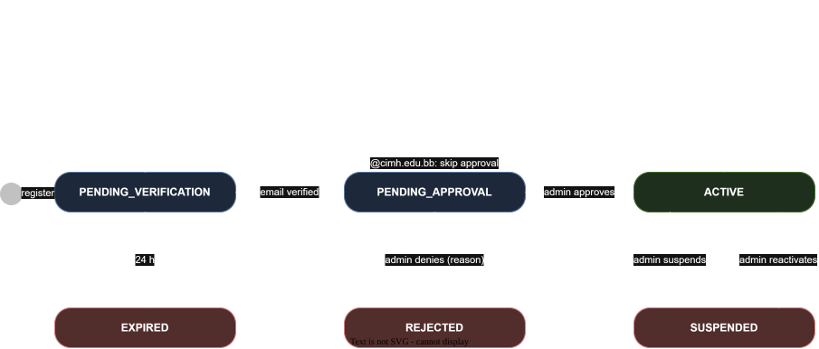
| Status | Meaning | Can log in? |
|---|---|---|
PENDING_VERIFICATION |
Registered; waiting for the 6-digit email code (valid 15 min) | No |
PENDING_APPROVAL |
Email verified; waiting for an admin | No ("awaiting approval" page) |
ACTIVE |
Approved (or @cimh.edu.bb) |
Yes |
REJECTED |
Denied by an admin, with a reason | No |
EXPIRED |
Not verified within 24 h | No |
SUSPENDED |
Suspended by an admin; all sessions revoked immediately | No |
When approving, the admin links the account to an organisation (picking an existing one or creating a new one), because users type their organisation's name in free text. Rejected and expired accounts are deleted after 90 days.
2.3 SHOP (customer store)
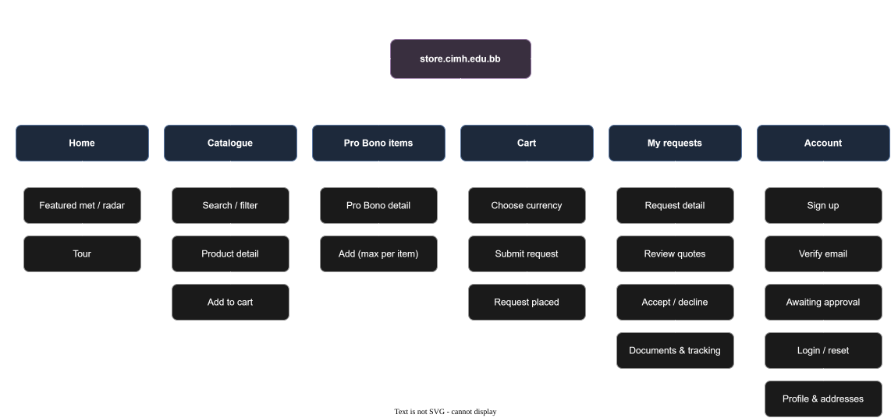
| Area | Features |
|---|---|
| Home | Featured met and radar products; first-visit tour |
| Catalogue | Browse by type (met, radar, equipment, supplies, misc, projects) and department; search by name, make, model, serial, keyword; product detail with images, specs and availability (in stock / on request). No prices. |
| Pro Bono items | Separate section of free items; maximum quantity per request shown on each item |
| Cart | Saved across devices; choose BBD or USD; submit. A cart with both paid and Pro Bono items becomes two requests |
| My requests | Own and organisation requests; filter by status, year and requester; timeline; quotes (supplier + CIMH option); choose per item; accept/decline; documents; carrier + tracking link |
| Account | Sign up → verify → awaiting approval → login; password reset; profile, saved addresses |
2.4 SIA (staff web app)
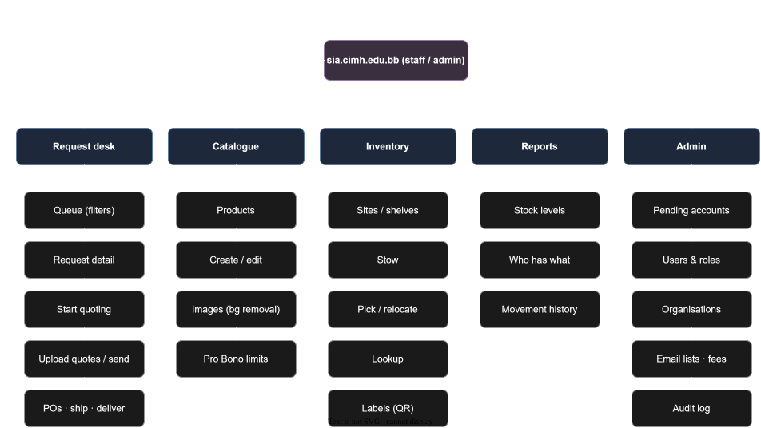
| Area | Features |
|---|---|
| Request desk | Queue filtered by status, year, customer, organisation and ID, showing how long each request has been waiting. Request detail: start quoting (automatic stock check), upload supplier quotes, CIMH option (exchange rate for USD), send quote, purchase orders, ship (carrier + tracking), deliver, cancel |
| Catalogue | Create and edit products (cost visible to staff only), images with automatic background removal, sellable and Pro Bono flags, Pro Bono per-item limits |
| Inventory | Sites, locations, shelves (QR codes); stow, pick, relocate, self-assign; lookup; batch unit labels (PDF/CSV) |
| Reports | Stock levels and low-stock alerts; who has what; movement history |
| Admin | Pending accounts (approve/deny in bulk), users and roles, suspend/reactivate, organisations (merge duplicates), email lists, admin fee, departments/types/projects, audit log |
2.5 SIA Mobile (Android)
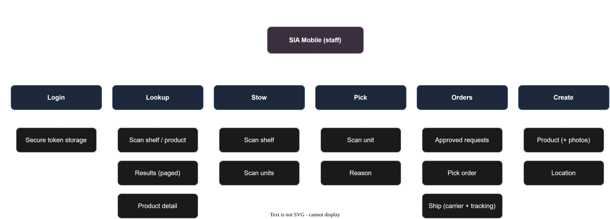
| Area | Features |
|---|---|
| Login | Staff only; tokens kept in Android Keystore-encrypted storage |
| Lookup | Scan a shelf or product; paged results; product detail with locations |
| Stow / Pick | Scan shelf → scan units; pick with a reason |
| Orders | Approved requests; pick by scanning (units must be reserved for that request); record carrier + tracking |
| Create | Products (with photos), locations |
| Offline | Scans are queued (Room + WorkManager) and synced later. A per-scan idempotency key prevents duplicates |
Minimum Android 12 (API 31). Scanning uses CameraX + ML Kit.
3. Architecture
Source: TAD §2–5.
3.1 System context
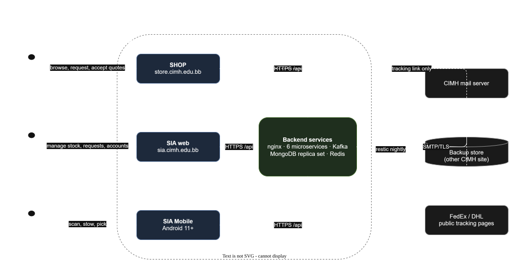
The platform has three clients (SHOP, SIA, SIA Mobile) and one backend. Its only external dependencies are the CIMH mail server (all email) and the backup store at another CIMH site. FedEx and DHL are not integrated; SHOP simply links to their public tracking pages.
3.2 Design principles
- Each service owns its data. Only the owning service reads or writes a collection.
- Events for facts, HTTP for questions. Changes of state go to Kafka; direct HTTP calls are used only when an answer is needed immediately.
- Services hold no state. Sessions, limits and locks are in Redis; files are on a shared volume; any replica can serve any request.
- Never trust the client. The server checks login, role and ownership on every request.
- Events can't be lost and can be applied twice safely. The outbox saves the event with the change; consumers detect duplicates.
- Keep it simple. Nothing that Docker Compose on one host plus two Pis can't run.
3.3 Containers
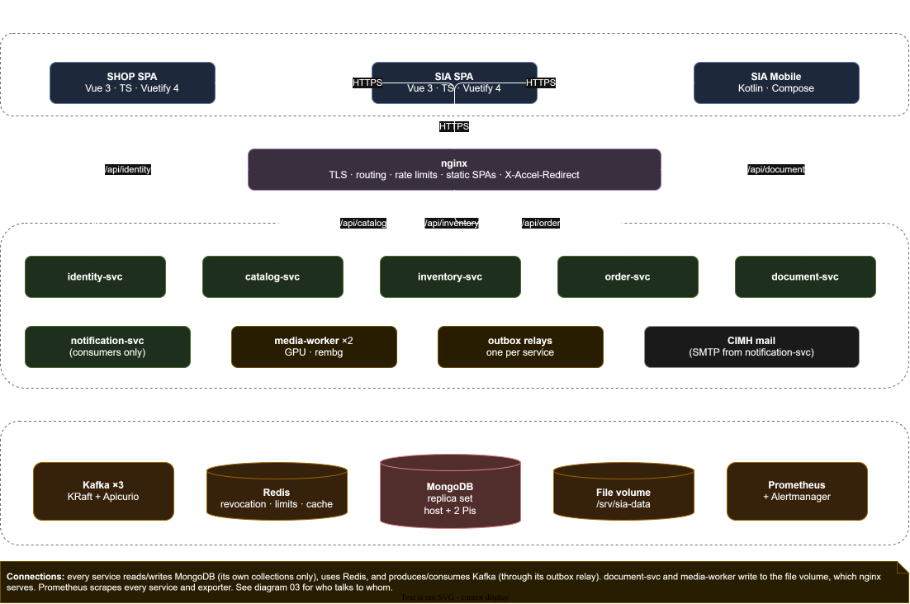
| Container | Responsibility |
|---|---|
| nginx | TLS, serves both web apps, routes /api/* to services, rate limits, serves public images, protected downloads (X-Accel-Redirect) |
| identity-svc | Accounts, organisations, login, tokens, approvals, roles, audit log |
| catalog-svc | Products, search, Pro Bono items and limits, reference data (misc), image records |
| inventory-svc | Sites, shelves, storage units, stow, pick, relocate, stock levels, reservations |
| order-svc | Carts, requests, status flows, supplier and CIMH quotes, acceptance, purchasing, shipping |
| document-svc | PDF generation (CIMH quote, agreement, invoice, Pro Bono note, commercial invoice, unit labels) from order events, virus-scanned uploads, permission-checked downloads. Owns no collection and has no outbox: it publishes document.* itself |
| notification-svc | All email, triggered by events: once per event and recipient, links into the SHOP/SIA screens, retries then DLQ. Starts from "now" on first deploy and skips events older than 48 h. Dev and staging send to Mailpit only |
| media-worker ×2 | Background removal on the GPUs, resizing, WebP, barcode decoding |
| outbox relays | Publish saved events from each service to Kafka |
| Kafka ×3 + Apicurio | Event backbone and event schemas |
| Redis | Token revocation, rate limits, idempotency keys, processed-event IDs, locks, cache |
| MongoDB | Replica set: primary on the host, secondaries on 2 Raspberry Pi 5 |
| File volume | /srv/sia-data: PDFs, uploads, product images, QR codes |
| Prometheus + Alertmanager | Metrics and email alerts |
Service profiles
| Service | Owns | Publishes | Consumes | Scheduled jobs |
|---|---|---|---|---|
| identity | accounts, temp, organisations, auditlog |
identity.user.events |
audit.events |
Expire unverified (24 h); remind admins (48 h); purge rejected/expired (90 d) |
| catalog | product, xuser, misc |
catalog.product.events, media.jobs, audit.events |
media.results, inventory.stock.events |
— |
| inventory | storage, history, stock |
inventory.stock.events |
catalog.product.events, order.events |
— |
| order | orders (incl. carts) |
order.events |
document.events, inventory.stock.events, identity.user.events |
Quote expiry (30 d) + reminder (3 d before) |
| document | none (metadata in orders.files[]) |
document.events |
order.events |
— |
| notification | none | — | identity, order, stock, document events | — |
| media-worker | none | media.results |
media.jobs |
— |
Internal structure of every service: api/ (routes) · domain/ (rules and status flows, no I/O) · repository/ (the only code that touches MongoDB) · events/ (outbox, consumers, schemas) · jobs/ (scheduled work, run only by the leader replica) · auth/ (shared library).
3.4 Edge routing
| Path | Goes to |
|---|---|
store.cimh.edu.bb/ |
SHOP web app |
sia.cimh.edu.bb/ |
SIA web app |
/api/identity/ · /api/catalog/ · /api/inventory/ · /api/orders/ · /api/documents/ |
The matching service (all replicas, via Docker DNS) |
/media/products/ |
Public product images (direct from the volume) |
/_protected/ |
Internal only, reached via X-Accel-Redirect |
/sia/api/ |
Legacy Flask, during the transition only |
Rate limits: 20 requests/s per IP for the API in general; 5 requests/min for login, register and verification.
3.5 Synchronous HTTP calls between services
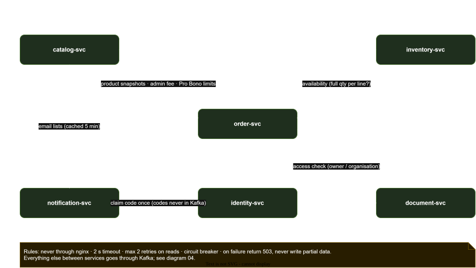
Only five places need an immediate answer from another service (the fifth: notification-svc claims a verification or reset code once from identity-svc, because codes must never travel through Kafka). All of them use the internal network with short-lived service tokens, a 2 s timeout, a circuit breaker, and return 503 rather than write partial data.
3.6 Kafka events
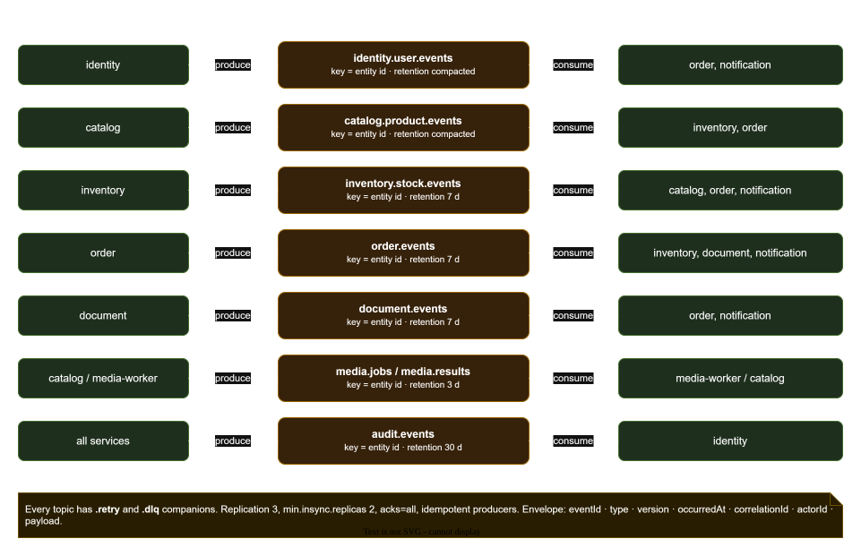
Event envelope (every message):
{ "eventId": "ULID", "type": "order.accepted", "version": 1, "occurredAt": "2026-11-06T14:03:22Z",
"correlationId": "trace id", "actorId": "user id", "payload": { } }
| Setting | Value |
|---|---|
| Message key | Entity id (userId, productId, orderId), so events for one entity stay in order |
| Partitions | 6–12 per topic (to be confirmed by load tests) |
| Durability | Replication 3 · min.insync.replicas=2 · acks=all · idempotent producers |
| Consumer groups | One per service |
| Retries | .retry topic at 1 min → 5 min → 30 min, then .dlq (raises an alert) |
| Schemas | Registered in Apicurio, must stay backward compatible; a breaking change means a new version |
Main event types:
| Topic | Events |
|---|---|
identity.user.events |
user.registered, user.verified, user.approved, user.rejected, user.suspended, user.reactivated, user.role_changed, user.profile_updated, user.approval_pending, user.erasure_requested, user.deleted, user.password_reset_requested, user.email_change_requested (code events carry only a codeRef) |
catalog.product.events |
product.created, product.updated, product.deleted, product.image_added |
inventory.stock.events |
stock.changed, stock.low, stock.reserved, stock.released, stock.reservation_failed, unit.stowed, unit.picked |
order.events |
order.submitted, order.quoting_started, order.quoted, order.quote_revised, order.accepted, order.declined, order.probono_approved, order.probono_rejected, order.purchasing, order.shipped, order.delivered, order.cancelled, order.expired |
document.events |
document.generated, document.uploaded, document.deleted |
3.7 Outbox: no lost events
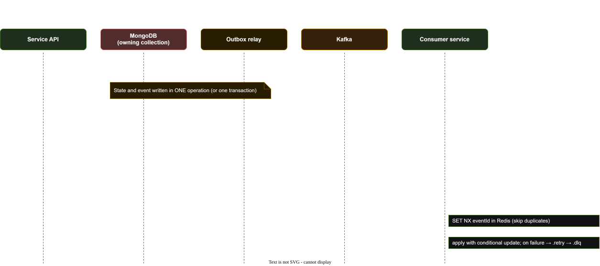
- The service writes the state change and the event to the same document (
outbox[]) in one operation. - The relay watches for unsent events (change stream, plus a sweep every 30 s), publishes them to Kafka and removes them once acknowledged.
- An event can occasionally be published twice. Consumers record each
eventIdin Redis (SET NX, 7 days) and skip repeats, and apply changes with conditional updates.
4. Data
Source: BSD (field-level definitions, the source of truth), TAD §6, TRD §4.3.
4.1 Where data lives
| Data | Store | Location | Backed up |
|---|---|---|---|
| Business data | MongoDB replica set rs0 (mongo1 host primary, mongo2/3 on Raspberry Pi 5) |
database inventory |
Nightly mongodump from Pi B → restic → other CIMH site |
| Files | Docker volume | /srv/sia-data |
Nightly restic → other CIMH site |
| Sessions, revocations, limits, idempotency, processed events, locks, cache | Redis (AOF) | main host | No (rebuildable; users log in again) |
| Events in transit | Kafka | main host | No (MongoDB is the source of truth) |
| Metrics | Prometheus | main host | No |
File layout:
/srv/sia-data/
protected/ orders/<orderId>/<fileId>.<ext> labels/<fileId>.pdf meta/<fileId>.json (document-svc + X-Accel-Redirect only)
quarantine/ infected uploads (never served)
public/ products/<productId>/<uuid>.webp (+@800, @320) shelves/<barcode>.png (served by nginx)
4.2 Collection ownership and access
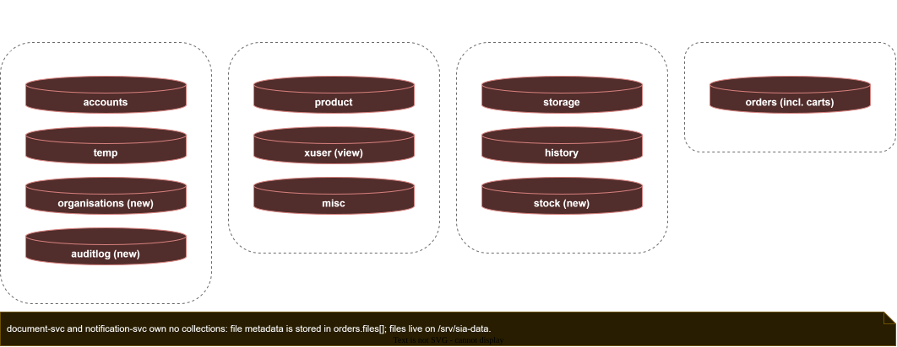
| Collection | Owner | DB user | Rights | Today | At 1M users |
|---|---|---|---|---|---|
accounts |
identity | svc_identity |
find, insert, update | 65 | 1M |
temp |
identity | svc_identity |
find, insert, update, remove | 0 | ~10k (TTL) |
organisations ✚ |
identity | svc_identity |
find, insert, update | — | ~5k |
auditlog ✚ |
identity | svc_identity |
find, insert (update only to anonymise purged accounts) | — | +2M/yr |
product |
catalog | svc_catalog |
find, insert, update | 83 | 2M |
xuser (view) |
catalog | svc_catalog |
find | view | — |
misc |
catalog | svc_catalog |
find, insert, update | 12 | ~5k |
storage |
inventory | svc_inventory |
find, insert, update | 697 | 30M |
history |
inventory | svc_inventory |
find, insert | 860 | +5M/yr |
orders |
order | svc_order |
find, insert, update | 39 | +1.5M/yr |
products |
— | — | dropped (empty legacy collection) | 0 | — |
Other database users:
- svc_backup: read only.
- svc_migrate: used for the migration only, then disabled.
- admin_ops: for people doing administration; never used by an app.
Who sees what
| Data | Customer (user) |
staff |
admin |
|---|---|---|---|
| Own account | Read/write (email change needs re-verification) | Read | Read/write |
| Other accounts | ✗ | Name, email, organisation, role, status | All except secrets |
| Product public fields | Sellable only (via xuser) |
Read | Read |
Product cost, threshold, sn, sn1 |
✗ | Read/write | Read/write |
| Stock | "In stock / on request" only | Exact counts, units, history | Same |
| Requests | Own and same organisation (read); own (act) | All | All |
| Quote amounts, exchange rate | On their requests | Read/write | Read/write |
| Supplier names, purchase orders | ✗ | Read/write | Read/write |
| Audit log | ✗ | ✗ | Read |
passwordHash, mfa.* and failedLogins never leave identity-svc.
4.3 Shared types and ids
| Type | Definition |
|---|---|
Money |
Decimal128, 2 decimals, BBD for catalogue cost (never float) |
Currency |
BBD or USD (one per request) |
Timestamp |
UTC BSON Date, shown in America/Barbados |
Address |
line1, line2?, city, parish?, country (ISO-2), zip?, organisation?, attention? |
Actor |
{ id, name, role }: who did something |
StatusChange |
{ from?, to, by: Actor, at, reason? } |
OutboxEvent |
{ eventId (ULID), type, version, occurredAt, correlationId, actorId?, payload, attempts } |
Id prefixes:
| Prefix | Entity |
|---|---|
USR |
Accounts (legacy ids kept) |
ORG |
Organisations |
ORD |
Requests (legacy ids kept) |
CRT |
Carts |
QTE |
Quotes |
FIL |
Files |
AUD |
Audit log entries |
TMP |
Temporary codes |
Products, units, sites, locations and shelves keep their legacy barcode formats.
4.4 Collections at a glance
accounts
id (unique) · email (unique, case-insensitive) · passwordHash (Argon2id; legacy hash upgraded at next login) · firstname, lastname, phone · role · status · isCimh · organisationText (typed) → organisationId (set at approval) · department, country · addresses[] (max 10) · defaults{site, location, shelf} (staff) · verifiedAt, approvedBy/At, rejection · statusHistory[] · failedLogins · mfa · approvalReminderAt · erasureRequestedAt (the person asked to be deleted) · deletedAt (purge or erasure in progress) · outbox[].
Removed: cart (moves to orders), emailconfirmed, registered, timestamp, password.
Rule: an ACTIVE non-CIMH account must have an organisationId.
temp
Verification and reset codes: kind, accountId, codeHash (for checking), codeEnc (an AES-GCM sealed copy that notification-svc can claim once to send the email, then removed), newEmail (email changes only), attempts (max 5), sentCount (max 3 per hour), expireAt (+15 min, TTL index).
organisations ✚
id, name (unique, case-insensitive), country, type, emailDomains[] (to suggest a match at approval), aliases[] (typed names that map to this organisation), mergedInto?, active.
auditlog ✚ (can only be added to)
id (= source eventId, so duplicates are impossible), at, actor, action, entity{type,id}, from/to, reason, ip, correlationId. The service user can insert and read only. Kept indefinitely; personal data is removed when an account is deleted.
product
id (unique) · name, description, details, make, modelname, modelnumber · type codes MET, RAD, EQUIP, SUPP, MISC, PRO · department, project · sellable → bool · probono bool (required at creation) · probonoMaxPerRequest? · cost (Money, staff only) · threshold, unitquantity, weight, dimension, sn, sn1 · keywords[] · images[]{fileId, url, w, h, primary} · inStock, stockCount, stockAt (derived from stock events; an older event never overwrites a newer one) · active (soft delete).
Search: a text index (name 10, modelnumber 8, keywords 5, make 3, modelname 3) plus prefix indexes on sn, sn1, modelnumber. Browsing is sorted by name (indexes end in name, id for cursor paging); every filter combination the screens use (customer: all / type / type + department; staff: active or "show inactive", with or without type) has its own index, and CI checks with explain that no catalogue read scans the collection (TR-DATA-5).
xuser (view)
product filtered to sellable: true, active: true, projecting only public fields, so cost and serials can never reach a customer. catalog-svc creates the view at start-up from the same field list its public API uses.
misc (reference data, now with a kind field)
kind |
Holds |
|---|---|
departments |
Department list |
types |
Type codes and labels |
projects |
One document per project |
fees |
Admin fee used in CIMH quotes |
emailLists |
Lists: registration, order, invoice, cancellation, lowStock |
site / location / shelf |
One document per shelf (split out of the old shelves[] arrays) |
counter |
Product number sequence |
settings |
quoteValidityDays 30, quoteReminderDays 3, approvalReminderHours 48, purgeAfterDays 90 |
storage (one document per physical unit)
barcode (unique) · product · serial · location (site/location/shelf + names) · stowed, stowby, stowdate · picked, pickedby, pickeddate, pickedreason · orderid (picked for) · ✚ reservedFor (reserved for) · ✚ reservedAt · ✚ assignedTo (issued to a person; off the shelf) · images[] · updatedAt.
Available = stowed && !picked && reservedFor == null. Unit barcodes keep the legacy <productId>_<8 hex> form.
New key index: { product, stowed, picked, reservedFor }; reservedFor, orderid and assignedTo have small partial indexes. Seven of today's nine indexes are dropped once usage checks confirm they're covered.
history (movement log, added to and never edited)
id (unit barcode) · operation (stow, pick, relocate, assign, unassign, reserve, release, adjust) · reason · location after the move · from (for relocate) · user · ✚ accountId (assign/unassign) · orderId · date.
✚ stock (counts per product, inventory-svc)
id (= product id) · productName, type, threshold, active (copied from catalog events) · available, reserved, picked, assigned · low · outbox[].
Updated in the same transaction as every scan, with counts recomputed from storage, so counts always reconcile with units and history. It carries inventory's outbox, so stock events are keyed by product id. Low = threshold > 0 and available ≤ threshold; stock.low is sent when it turns true.
orders (carts and requests)
| Group | Fields |
|---|---|
| Common | id (ORD…/CRT…), type (PAID/PROBONO/null), status, customer, customerSnapshot, organisationId, lines[], currency, shipTo, notes, version, createdAt, updatedAt, submittedAt, history[], outbox[] |
| Line | lineId, productId, product (details copied at submission), qty, choice (CIMH/SUPPLIER), cimhAvailable, reservation{status, units[]}, picked[] |
| Supplier quotes | quotes[]: id, version, supplier, lines{unitPrice, total}, total, fileIds, expiresAt (+30 d), sentAt/By. Every version is kept |
| CIMH quote | cimhQuote: lines{unitCostBBD, unitPrice, total}, exchangeRate (required for USD), total, fileId |
| Quote state | quoteVersion, quoteExpiresAt, adminFee (once per request, in the request currency), quoteDraft (staff) |
| Decision | acceptance{quoteVersion, choices[], by, at, ip} or decline{by, at, reason} |
| Fulfilment | purchaseOrders[], approval / rejection (PROBONO), shipping{carrier FEDEX/DHL/HAND, tracking (required unless HAND), cost, date, by}, invoice{…}, files[], cancellation{by, at, reason, auto} |
Key rules:
- One cart per user (only carts carry cartOf; a sparse unique index). While the customer is suspended the cart carries blocked: true and answers 403 ACCOUNT_SUSPENDED.
- Accounts with isCimh can't have a cart or requests.
- A mixed cart is split into one PAID and one Pro Bono request.
- Status changes must follow the allowed flows, and each is a conditional update.
4.5 Relationships
| From | Field | To | Checked by |
|---|---|---|---|
accounts |
organisationId |
organisations.id |
identity |
orders |
customer |
accounts.id |
order, at submission |
orders |
organisationId |
organisations.id |
copied at submission |
orders.lines |
productId |
product.id |
order → catalog, at submission |
storage |
product |
product.id |
inventory |
storage |
reservedFor / orderid |
orders.id |
inventory, via events |
storage |
site/location/shelf |
misc |
inventory, via the catalog API |
history |
id |
storage.barcode |
inventory |
There are no joins or foreign keys across services. If a referenced record disappears, the copy saved on the request is shown instead.
4.6 Consistency rules
| Situation | How it's kept consistent |
|---|---|
| Status change | Conditional update that includes the expected current status → 409 Conflict if it has already changed |
| Several units reserved together | Multi-document transaction (Chapter 5.5) |
| Other services must react | Outbox → Kafka → idempotent consumers (eventually consistent, usually < 1 s) |
Derived values (inStock) |
Updated by events; display only; decisions always ask the owner |
Writes use w: majority + retryWrites. Reads come from the primary, except reports and backups, which read from secondaries.
4.7 Validation
Every collection has a $jsonSchema validator, written per service in <service>/schemas.py (the services store plain documents, so there are no Pydantic document models to generate them from) and applied by the service at start-up before its indexes (cimh_common.validation.apply_validators; the Mongo roles already grant createCollection/collMod). They require ids, versions, timestamps and enumerations and type the other known fields, but leave extra fields open. MONGO_VALIDATION=migration gives moderate/warn while a migration loads; the default strict gives strict/error (dev, CI and production after sign-off). stock requires only id because partial upserts build it. It is set to moderate/warn during migration, then switched to strict/error once the migration is signed off.
4.8 Retention
| Data | Kept for |
|---|---|
temp codes |
15 min (TTL index) |
| Unverified accounts | 24 h → EXPIRED |
| Rejected / expired accounts | 90 days, then deleted (audit entries have personal data removed) |
| Carts | Emptied after 180 days of inactivity |
| Requests, quotes, files | Indefinitely (financial records) |
| Audit log, movement history | Indefinitely (archived yearly if very large) |
| Kafka events | 7–30 days |
| Backups | 30 daily + 12 monthly (pending confirmation) |
| Container logs | 10 × 50 MB per container |
Right of access: people download their own data from their profile (staff appear by role only); admins can export anyone's. Each export is audited.
Right to erasure: the person asks from their profile (password required), and an admin erases the account with a reason. The name, contact details, addresses and sign-in are removed, sessions end, the person's audit entries lose name and IP, and user.deleted tells other services to replace the personal data on requests with [deleted] (open requests are cancelled). The financial fields and the audit trail are kept. The 90-day purge of rejected and expired accounts uses the same steps.
4.9 Migration from the legacy data
| Legacy | v2 |
|---|---|
accounts.password |
Argon2id at next login |
| 65 existing accounts (56 user, 6 staff, 3 admin) | ACTIVE; emailconfirmed → verifiedAt; customers linked to an organisation during review |
accounts.cart[] |
orders document with status: CART (ids and quantities only) |
product.sellable yes / no / probono |
sellable bool + probono bool (probono → sellable + Pro Bono; 3 products today) |
product.probono |
Set from legacy sellable = "probono"; new products get the flag at creation |
product.cost float |
Decimal128 |
misc |
kind added; shelves split into one document each |
orders.cart + ncicart |
lines[]; split into PAID + Pro Bono requests if both exist |
orders.complete / cancelled / other |
DELIVERED / CANCELLED / SUBMITTED |
storage |
+ reservedFor: null (no duplicate barcodes in the reference DB) |
orders.shipping.method (free text) |
FedEx → FEDEX, DHL → DHL, Hand delivered… → HAND (text kept in shipping.note) |
orders.billedto, total, shippingestimate |
billTo kept; legacy totals kept read-only under legacy.* |
history.operation orderpick |
pick with orderId |
| SQLite tokens | Not migrated (everyone logs in again) |
products (empty) |
Dropped |
Reference data: the database inventory on 172.16.0.203 (MongoDB 8.0.26) holds the real data. The local 127.0.0.1 copy is test data. The current xuser view shows customers types MET, RAD, PRO, EQUIP with sellable yes or probono.
5. Workflows
5.1 Registration and approval
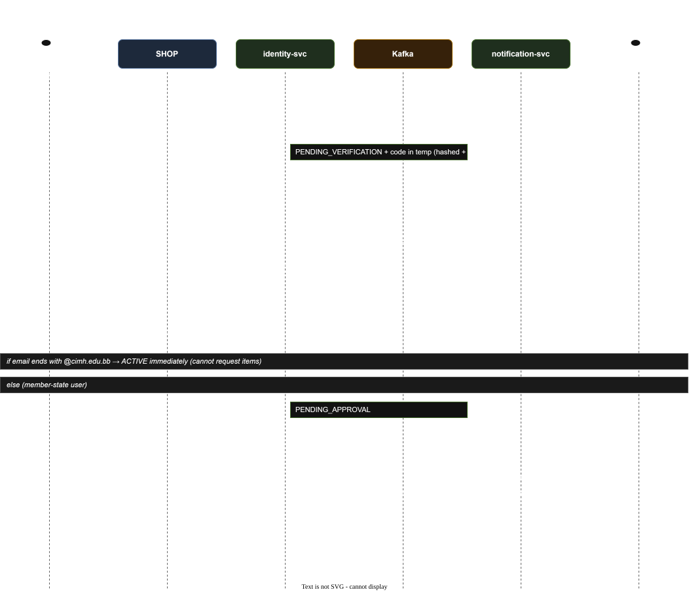
- The registrant signs up with name, email, password (≥ 12 characters, checked against known-breached passwords), organisation (free text), department, country and phone.
- A 6-digit code is emailed (valid 15 min, 5 attempts, at most 3 resends per hour). The
user.registeredevent carries only a reference; notification-svc claims the code from identity-svc once and sends it. @cimh.edu.bb→ACTIVEimmediately (but cannot request items). Everyone else →PENDING_APPROVAL; admins on theregistrationemail list are notified.- An admin approves (linking an organisation and choosing a role) or denies (a reason is required). The user is emailed either way.
- If an account has been waiting more than 48 h, admins get a reminder.
Account statuses: see Chapter 2.2.
5.2 Submitting a request
- A customer (an active member-organisation
user) adds items to the cart. Pro Bono items are capped at their per-request maximum. - At submission the customer chooses BBD or USD and a shipping address.
- order-svc checks the cart with catalog-svc and saves a copy of each product's details on the request.
- A cart with both paid and Pro Bono items is split into two requests.
order.submittedis published, and staff and the customer are emailed.
5.3 Paid request: quote to delivery
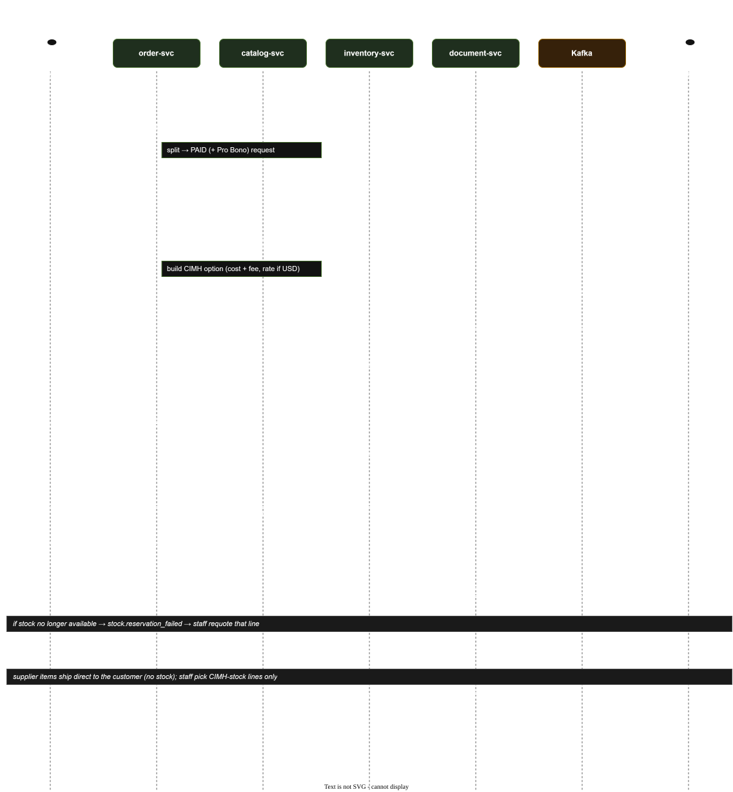
| Step | Who | What happens | Status |
|---|---|---|---|
| 1 | Staff | Start quoting. order-svc asks inventory-svc whether the full quantity of each line is in stock | QUOTING |
| 2 | System | Lines fully in stock get a CIMH option priced at catalogue cost + admin fee (staff enter the exchange rate if the request is in USD) | |
| 3 | Staff | Upload supplier quote PDFs and enter supplier amounts; send the quote (expires in 30 days) | QUOTED |
| 4 | System | Generates the CIMH quote PDF; emails the customer; sends a reminder 3 days before expiry | |
| 5 | Customer | Chooses CIMH or SUPPLIER for each line that has both (or declines with a reason) | AWAITING_AGREEMENT / DECLINED → CANCELLED |
| 6 | System | Generates the payment agreement PDF with the total of the chosen quotes | |
| 7 | Customer | Downloads the agreement, signs it, uploads the signed copy → accepted (commitment to pay). They can still change choices before uploading | ACCEPTED |
| 8 | System | Reserves the CIMH-chosen units. If stock has run out, staff must requote that line | |
| 9 | Staff | Checks the signature. If it's not acceptable, rejects it with a reason and the customer uploads again | AWAITING_AGREEMENT |
| 10 | Staff | Confirms the agreement is verified and records purchase-order numbers for each supplier | PURCHASING |
| 11 | Staff | Picks the CIMH-stock lines only. Supplier items are shipped direct to the customer and never enter stock | |
| 12 | Staff | Records carrier (FedEx, DHL, Hand delivered) and tracking number; the customer may be emailed | SHIPPED |
| 13 | Staff | Marks delivered; the invoice is generated | DELIVERED |
Acceptance records who, when, from which IP, the choice for each line and the signed agreement file. Only the latest quote version can be accepted; earlier versions are kept.
Paid request status flow
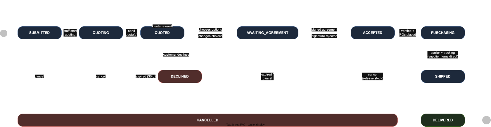
A request can be cancelled up to and including ACCEPTED (which releases any reserved stock). Once purchasing starts, it can't be cancelled.
5.4 Pro Bono request
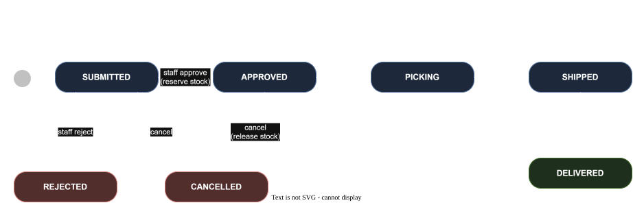
No quote and no customer acceptance step. Staff approve the request against stock (which reserves the units), then pick, ship and deliver. Staff can reject it with a reason. Cancelling an approved request releases its stock.
5.5 Stock reservation
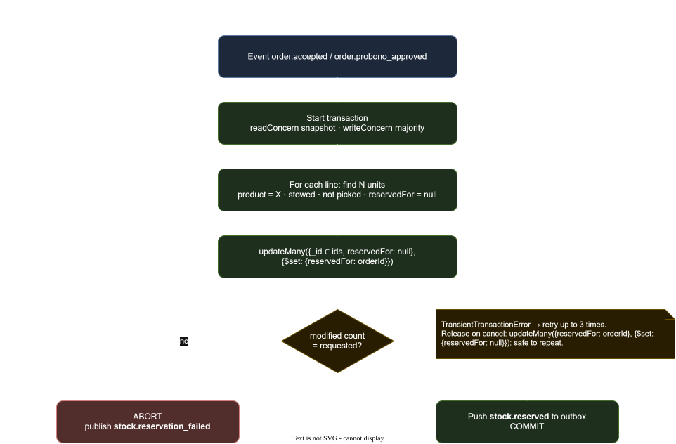
- Runs inside inventory-svc as a MongoDB transaction (possible because MongoDB runs as a replica set).
- A unit is only ever claimed if
reservedForis empty. If the number of units claimed is short, the whole transaction is rolled back. - Temporary transaction conflicts are retried up to 3 times.
- Release is
reservedFor: orderId → null, which is safe to repeat.
5.6 Stow and pick
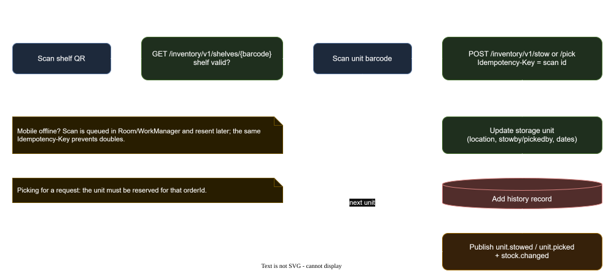
Every scan is sent with an Idempotency-Key, so a mobile scan replayed from the offline queue is never applied twice. Each stow or pick updates the unit, adds a history record and publishes events that update stock levels (and trigger low-stock emails).
5.7 Protected file download
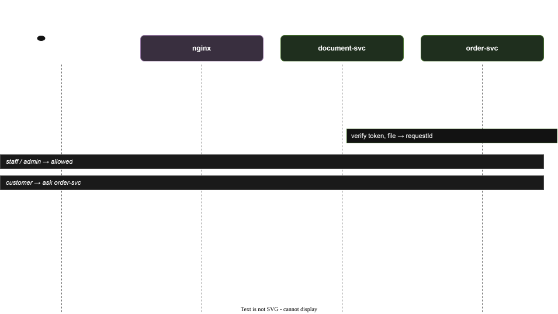
document-svc checks the caller's permission: staff and admins always have access; a customer must own the request or belong to the same organisation, which document-svc confirms with order-svc. If allowed, nginx streams the file from a hidden internal location. Files are never served from a path the user supplies.
5.8 Notifications (emails)
| Event | Recipients |
|---|---|
| Account registered | User (verification code) |
| Account verified (needs approval) | Admins (registration list) + user ("awaiting approval") |
| Account approved / rejected / suspended | User |
| Approval pending > 48 h | Admins |
| Request submitted | Staff (order list) + customer |
| Quote ready / reminder (3 days before expiry) / expired | Customer |
| Agreement ready to download and sign | Customer |
| Signed agreement uploaded (quote accepted) / quote declined | Staff |
| Signature rejected (upload again) | Customer |
| Reservation failed (stock gone) | Staff |
| Shipped (with carrier + tracking) / delivered (with invoice) | Customer |
| Cancelled | Customer + staff (cancellation list) |
| Low stock | Staff |
All emails are sent by notification-svc through the CIMH mail server, at most once per event, with retries and the DLQ if sending keeps failing.
6. Security
Source: Security and Threat Model, TAD §8, TRD §4.2, §5.
6.1 Login and tokens
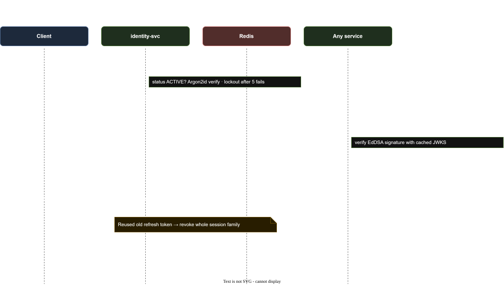
| Item | Design |
|---|---|
| Issuer | identity-svc only |
| Passwords | ≥ 12 characters; checked against known-breached passwords (Have I Been Pwned, sending only a short hash prefix); hashed with Argon2id; legacy hashes upgraded at next login |
| Lockout | 5 failed attempts → 15 min lock, longer each time it repeats |
| Signing | EdDSA (Ed25519); services verify tokens themselves using the cached public keys (JWKS) |
| Access token | 15 min; claims sub, role, org, status, jti |
| Refresh token | 7 days; a new one is issued on every use; reusing an old one revokes the whole session |
| Web | HttpOnly; Secure; SameSite=Lax cookies + CSRF token |
| Mobile | Authorization: Bearer; tokens stored in Android Keystore |
| Revocation | Revoked jtis kept in Redis until they expire; checked on every request |
| Admin MFA | Authenticator-app codes (TOTP), required for admins; admin sessions ≤ 8 h |
| Between services | Short-lived service tokens issued by identity-svc |
6.2 Authorisation
- Every endpoint declares the role it requires.
- Every data access is checked against ownership (or organisation, for customers viewing requests). The caller's identity is passed into every data-access function, so the check can't be skipped by accident.
- Automated tests try to access other users' data using their ids (IDOR tests).
- The role matrix is in Chapter 2.1.
6.3 Controls
| Area | Control |
|---|---|
| Input | Pydantic models reject unknown fields; search text is escaped; field names come from an allowed list; no dynamic code execution (the legacy eval calls are removed) |
| Transport | TLS 1.2+ only; HSTS; CSP; X-Content-Type-Options; frame-ancestors; Referrer-Policy |
| Network | MongoDB, Kafka and Redis on an internal Docker network; MongoDB port open only to the Pis and the host; replica set members authenticate to each other (keyfile/x.509) over TLS |
| Rate limits | nginx (20 requests/s for the API in general; 5 requests/min for auth) + per-account limits in Redis |
| Secrets | Never in git or images; Docker secrets / .env with 0600 permissions; separate database user for each service; rotated yearly and immediately after any exposure |
| Files | Content type checked from the file itself; 20 MB limit; re-encoding; UUID names; permission-checked X-Accel-Redirect |
| Templates escape every value; SPF, DKIM and DMARC set up on the CIMH mail domain | |
| Supply chain | CI: pip-audit, npm audit, Semgrep, Bandit, Trivy, gitleaks; high or critical findings block merging |
| Audit | Security-relevant actions → audit.events → auditlog (can only be added to) |
| Logs | No passwords, tokens or full personal data in logs |
6.4 Immediate actions carried over from the old system
| Item | Status |
|---|---|
eval() on request data removed from the Flask app |
Done (interim fix) |
| Login required on user-profile and order-file routes; ownership checks added | Done (interim fix) |
| Token check failures now deny access; logged-out tokens now rejected | Done (interim fix) |
Rotate every secret in SIA/.env and the MongoDB admin password shared in chat |
To do before go-live |
| Remove customer PDFs, uploads, databases and logs from the app folders | To do |
6.5 Assets
| # | Asset | Where | Sensitivity | Why it matters |
|---|---|---|---|---|
| A1 | Account credentials and sessions (password hashes, refresh tokens, MFA secrets) | accounts, Redis |
Critical | Account takeover, admin takeover |
| A2 | Personal data (names, emails, phones, addresses, organisation, IPs) | accounts, orders (customerSnapshot, shipTo, billTo), auditlog |
High | Privacy law (Barbados Data Protection Act 2019), trust |
| A3 | Signed payment agreements and quotes | File volume, orders.agreement |
High | Legal commitment to pay; financial dispute evidence |
| A4 | Pricing and supplier data (cost, supplier names, purchase orders, exchange rates) | product.cost, orders.quotes, purchaseOrders |
High | Commercial confidentiality |
| A5 | Stock integrity (units, reservations, history) | storage, history, stock |
High | Theft concealment, overselling |
| A6 | Request status integrity (who accepted what, when) | orders.history, auditlog |
High | Non-repudiation of acceptance |
| A7 | Service secrets (DB users, JWT signing key, SMTP, service credentials, backup keys) | .env / Docker secrets |
Critical | Full compromise |
| A8 | Availability of SHOP/SIA/Mobile | Main host | Medium | Operations stop |
| A9 | Backups | Pi B → other CIMH site | Critical | Recovery and also a full copy of A1–A6 |
6.6 Threat actors
| Actor | Motivation | Capability |
|---|---|---|
| Opportunistic internet attacker / bot | Credential stuffing, scraping, spam, crypto-mining | Automated tools, leaked password lists |
| Malicious registrant | Get access to pricing, impersonate an organisation | Can register; must pass admin approval |
| Approved customer acting outside their rights | See other organisations' requests or quotes; tamper with acceptance | Valid user token |
| Insider (staff) | Hide theft (stock manipulation), leak supplier pricing | Valid staff token, physical access to the warehouse |
| Compromised staff/admin device or account | Anything that account can do | Stolen session or phished password |
| Network attacker on the CIMH LAN | Intercept or attack the Pis and MongoDB | LAN access |
| Supply-chain attacker | Malicious dependency, image or skill | Code execution in build or runtime |
6.7 Trust boundaries and data flows
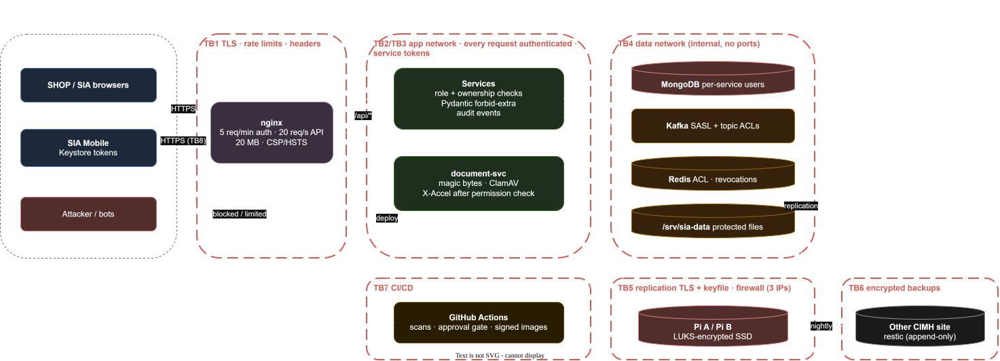
| Boundary | Crossing | Protection |
|---|---|---|
| TB1 Internet → nginx | All client traffic | TLS 1.2+, HSTS, rate limits, request size limits, security headers |
| TB2 nginx → services | /api/* proxied |
Internal network app; services still authenticate every request (no trust in nginx headers other than X-Forwarded-* from the known proxy) |
| TB3 Service → service | Internal HTTP | Service tokens (5 min), /internal/* never routed by nginx |
| TB4 Services → data (MongoDB, Kafka, Redis) | Queries, events | data network is internal; per-service MongoDB users with least privilege; Kafka/Redis passwords; no host ports published |
| TB5 Main host ↔ Pis | Replication | TLS + keyfile/x.509; firewall allows only the 3 fixed IPs |
| TB6 Host / Pi B → other CIMH site | Backups | restic (encrypted client-side), append-only credentials |
| TB7 Developer / CI → production | Deploys | GitHub Actions, protected branch, environment approval, SSH deploy key limited to docker compose |
| TB8 Mobile device ↔ API | Offline queue | Keystore-encrypted tokens; queued scans hold no personal data |
6.8 Threats and controls (STRIDE)
Status: ✅ designed (in TAD/TRD/API) · 🛠 build task · ⚠ residual risk accepted / needs decision.
5.1 Identity and access (identity-svc, login)
| ID | STRIDE | Threat | Risk | Controls | Status |
|---|---|---|---|---|---|
| T-01 | S | Credential stuffing / brute force on /auth/login |
H | nginx 5 req/min/IP on auth; per-account lockout after 5 failures (15 min, increasing); Argon2id; breached-password check at sign-up/reset; generic error messages | ✅ |
| T-02 | S | Account enumeration via register / forgot / login responses | M | Register and forgot always return 202; login uses the same error for unknown email and bad password; timing-equalised hashing | ✅ |
| T-03 | S | Stolen refresh token reused | H | Rotation on every refresh; reuse detection revokes the whole session family; HttpOnly cookies (web), Keystore (mobile) | ✅ |
| T-04 | S | Admin account takeover | H | TOTP MFA required for admin (TRD TR-AUTH-9, Must); admin sessions 8 h max; audit of every admin action; alert on admin login from a new IP | ✅ |
| T-05 | S/E | Malicious registrant claims a member organisation | M | Admin approval with organisation link; domain match hint; @cimh.edu.bb auto-approve only after email verification and no request rights |
✅ |
| T-06 | E | JWT forgery / algorithm confusion | H | EdDSA only; library pinned to alg=EdDSA; key from JWKS by kid; exp, nbf, iss, aud checked |
✅ |
| T-07 | S | Verification / reset code guessing | M | 6 digits, hashed, 15 min, 5 attempts, 3 resends/hour, rate-limited endpoint | ✅ |
| T-08 | R | User denies having accepted a quote | M | Acceptance records user, time, IP, choices and the signed agreement file (SHA-256); auditlog (insert-only) |
✅ |
| T-09 | E | Suspended user keeps working with a live token | M | Suspension writes revoke-all marker in Redis, checked on every request | ✅ |
| T-10 | I | Session theft via XSS | H | No v-html with user data (lint rule); strict CSP (script-src 'self', no inline); HttpOnly cookies; DOMPurify for any rich text |
🛠 |
| T-11 | T | CSRF on cookie-authenticated changes | H | SameSite=Lax + double-submit X-CSRF-Token on POST/PUT/PATCH/DELETE |
✅ |
5.2 Authorisation and data access (all services)
| ID | STRIDE | Threat | Risk | Controls | Status |
|---|---|---|---|---|---|
| T-12 | I/E | IDOR: reading another user's/organisation's request, files, profile by changing an id (present in legacy) | H | Caller identity passed into every repository call; queries always filtered by customer / organisationId for user; hidden = 404; automated IDOR tests per endpoint in CI |
✅ design · 🛠 tests |
| T-13 | E | Customer calls staff endpoints | H | Role declared per route (decorator), deny by default; contract tests assert 403 for each role | ✅ |
| T-14 | I | Over-exposure of fields (cost, supplier, serials) to customers | H | Separate response models (ProductPublic vs ProductStaff); xuser view projects public fields only; snapshot tests on customer responses |
✅ |
| T-15 | E | Mass assignment (setting role, status, version, cost via PATCH) |
H | Pydantic extra="forbid"; separate input models without privileged fields |
✅ |
| T-16 | T | Same-organisation colleague accepts or cancels someone else's request | M | Only requester or admin may act; org members are read-only | ✅ |
| T-17 | T/R | Insider manipulates stock to hide theft | M | Every stow/pick/relocate in history with user + time; picks need a reason or a reserved request; low-stock + reconciliation report; no delete endpoints for units |
✅ · ⚠ periodic stock-take process (organisational) |
| T-18 | T | Staff alters a sent quote or acceptance after the fact | M | Quotes are versioned and append-only; acceptance immutable; status changes conditional + audited | ✅ |
5.3 Input handling (all services)
| ID | STRIDE | Threat | Risk | Controls | Status |
|---|---|---|---|---|---|
| T-19 | E | Code injection via eval (present in legacy Flask: 13 places) |
Critical | No dynamic evaluation anywhere; Bandit/Semgrep rule bans eval/exec/pickle on input |
✅ legacy fixed (Phase 0) · ✅ v2 rule |
| T-20 | T/D | NoSQL/regex injection, ReDoS (legacy unescaped $regex, user-controlled field names) |
H | Text index search; any regex built from escaped input and anchored; field names from allow-lists only; operators ($-keys) rejected in input |
✅ |
| T-21 | T | Template injection in emails (legacy f-string HTML) | M | Jinja2 with autoescape; never build HTML by string concatenation | ✅ |
| T-22 | D | Oversized payloads, deep JSON, huge pages | M | nginx client_max_body_size 20M; JSON size/depth limits; limit ≤ 100 |
✅ |
5.4 Files (document-svc, media-worker, nginx)
| ID | STRIDE | Threat | Risk | Controls | Status |
|---|---|---|---|---|---|
| T-23 | E/T | Malicious upload (polyglot PDF, script, path traversal filename) | H | Type checked by magic bytes; allow-list PDF/JPEG/PNG/WebP; random UUID names; never use user filename in paths; images re-encoded; PDFs stored as data only, never rendered server-side except by our own generator | ✅ |
| T-24 | I | Downloading another customer's signed agreement/quote | H | Permission check per download (owner/org or staff) before X-Accel-Redirect; /_protected/ is internal in nginx |
✅ |
| T-25 | T | Forged signed agreement (customer uploads an unsigned or edited PDF) | M | Staff verification required before purchasing; agreement PDF carries request id, quote version, total and a hash of the generated file printed in the footer; SHA-256 of the upload stored | ✅ · ⚠ no cryptographic e-signature (manual signature accepted by business decision) |
| T-26 | D | Image-processing bombs (decompression bombs, huge dimensions) | M | Pillow MAX_IMAGE_PIXELS; size limit; media-worker isolated with memory limit and timeout |
✅ |
| T-27 | E | Malware in uploads reaching staff machines | M | ClamAV scan in document-svc before files become downloadable (quarantine on hit, fail closed if clamd is down); type from magic bytes; images re-encoded. Built in P6, EICAR test passes. Staging-lite does not scan (no memory; owner decision 2026-11-08) | ✅ (TR-SEC-6) |
5.5 Messaging, data stores and infrastructure
| ID | STRIDE | Threat | Risk | Controls | Status |
|---|---|---|---|---|---|
| T-28 | S/T | Unauthenticated access to MongoDB/Kafka/Redis | H | No published ports on data network; MongoDB auth + per-service users; Kafka SASL/SCRAM; Redis ACL user + password; firewall |
✅ (TR-SEC-7) |
| T-29 | T | Forged event injected into Kafka | M | Only service principals can produce, per-topic ACLs (producer = owning service only); consumers validate schema | ✅ (TR-SEC-7) |
| T-30 | I | Sniffing replication traffic on the LAN | M | MongoDB TLS between members; Pis, host on a dedicated VLAN | ✅ (TR-SEC-12) |
| T-31 | T/D | Physical theft or tampering of a Raspberry Pi (holds a full DB copy) | M | Pis in a locked rack/room; encrypted disk (LUKS) on Pi SSDs; MongoDB encrypted storage not available in Community, so rely on LUKS | ✅ (TR-SEC-10) |
| T-32 | I | Backup theft at the other site | H | restic encryption (key held separately); append-only repo credentials; quarterly restore test | ✅ |
| T-33 | D | DoS / traffic flood | M | nginx rate limits and connection limits; health-checked services; CIMH upstream/ISP protection | ⚠ no WAF/CDN by decision |
| T-34 | E | Container escape / over-privileged containers | M | Non-root users, read-only root FS, cap_drop: ALL, no-new-privileges, no Docker socket mounts, GPU only for media-worker |
✅ (TR-SEC-8) |
| T-35 | I | Secrets leaked in logs, images, git | H | No secrets in git/images (gitleaks in CI); Docker secrets / 0600 env files; log redaction of tokens, passwords, codes |
✅ |
5.6 Supply chain and delivery
| ID | STRIDE | Threat | Risk | Controls | Status |
|---|---|---|---|---|---|
| T-36 | T/E | Malicious or vulnerable dependency (PyPI/npm) | H | Lockfiles; pip-audit / npm audit / Trivy in CI (high/critical block); Dependabot; minimal images | ✅ |
| T-37 | T | Malicious Claude Code skill or tooling in the repo | M | Third-party skills reviewed before install (done 2026-11-06); skills-lock.json pinned; review diffs on update |
✅ |
| T-38 | E | Compromised CI → production | H | Protected main; required reviews; production environment needs manual approval; deploy key can only run the deploy script; images signed (cosign) and verified on pull |
✅ (TR-SEC-9) |
5.7 Mobile
| ID | STRIDE | Threat | Risk | Controls | Status |
|---|---|---|---|---|---|
| T-39 | I | Lost/stolen staff phone | M | Tokens in Keystore; app lock with device credential after 5 min inactivity; admin can revoke sessions (suspend / logout-all) | ✅ (TR-SEC-11) |
| T-40 | T | Replayed or tampered offline scans | L | Idempotency key per scan; server re-validates everything; queue holds no tokens | ✅ |
| T-41 | I | Traffic interception on warehouse Wi-Fi | M | HTTPS only (cleartextTrafficPermitted=false); certificate pinning (built: ISRG Root X1, X2 and Root YE, pin set expiring 2027-12-31 so a CA change can't lock staff out; pins are roots rather than intermediates because Let's Encrypt rotates intermediates; CIMH CA added if production uses one) |
✅ (TR-SEC-11) |
6.9 Legacy application findings (Flask, running until cut-over)
| Finding | Severity | Status |
|---|---|---|
eval() on request data (13 places) → remote code execution |
Critical | Fixed (Phase 0, uncommitted) |
Unauthenticated routes: product image add/delete, upload, decode, QR batch, barcode, user/items |
High | Partly fixed (user/<id>, order files); remaining routes still open |
| IDOR: user id taken from URL/body on most routes | High | Partly fixed; systemic: only fully fixed by v2 |
| Token verification failed open on errors; logout didn't revoke | High | Fixed (Phase 0) |
| Regex injection / ReDoS in search | Medium | Fixed (escaped) |
Test email route to a personal address (/send/<code>) |
Medium | Removed |
DEBUG=True in production .env; hard-coded fallback SECRET_KEY |
High | Fallback removed; set DEBUG=False in production |
Real credentials in SIA/.env on disk; customer PDFs, uploads, DBs, logs inside app folders |
High | Open |
TLS 1.0/1.1 enabled, listen 443 without ssl in nginx |
Medium | TLS fixed in config; verify TLS termination |
Rule during transition: the Phase 0 fixes must be committed and deployed now; the remaining open legacy routes get @jwt_required() + ownership checks or are disabled before v2 traffic starts.
6.10 Secrets management
| Secret | Holder | Storage | Rotation |
|---|---|---|---|
| JWT signing key (Ed25519) | identity-svc | Docker secret | Yearly; JWKS publishes old + new keys during overlap |
MongoDB users (svc_*, admin_ops, svc_backup) |
Each service / ops | Docker secrets | Yearly + on staff change |
| Kafka SASL, Redis ACL | Services | Docker secrets | Yearly |
Service credentials (for /internal/service-token) |
Each service | Docker secrets | Yearly |
| SMTP (CIMH mail) | notification-svc | Docker secret | Per CIMH IT policy |
| restic repository key | Backup job + offline copy in a safe | Pi B secret file + paper/USB in safe | Never lost; change on custodian change |
| TOTP secrets | identity-svc (encrypted field) | MongoDB, encrypted with a key from Docker secret | On reset |
| GitHub deploy key, GHCR token | CI | GitHub encrypted secrets / environment | Yearly |
Immediate actions (before go-live):
1. Rotate every credential in SIA/.env and the MongoDB cimhAdmin password (shared in chat for both 127.0.0.1 and 172.16.0.203).
2. Create a read-only MongoDB user for analysis/migration dry runs; stop using cimhAdmin for scripts.
3. Remove .env from any copy outside the server; confirm it was never committed (git log -p -- .env).
6.11 Roles and permissions
Authoritative matrix: API README §3. Summary: user (own + organisation read; act on own), user@cimh.edu.bb (browse only), staff (operations), admin (operations + accounts, organisations, settings, audit). Deny by default; hidden resources return 404.
6.12 Logging, monitoring and audit
| What | Where | Retention |
|---|---|---|
| Security-relevant actions (login success/fail, lockout, MFA, approvals, role changes, suspensions, status changes, file deletes, settings) | auditlog (insert-only) |
Indefinite |
| Request logs (method, route, status, duration, userId, traceId; no bodies, tokens or passwords) | Docker logs | 10 × 50 MB rotation |
| Security alerts (Alertmanager → email) | — | — |
Security alert rules (TRD TR-OBS-3): > 20 failed logins/min overall; any account lockout of an admin; admin login from a new IP; token-reuse detections; 403/404 spikes from one user (IDOR probing); ClamAV hit; backup older than 26 h; replica-set member down.
6.13 Privacy (Barbados Data Protection Act 2019)
| Principle | How the platform meets it |
|---|---|
| Lawful purpose and minimisation | Only data needed to supply items: name, email, phone, organisation, addresses; no IDs, no payment data |
| Transparency | Privacy notice at sign-up (Privacy Policy, doc #30); purposes listed |
| Retention | BSD §8: rejected/expired accounts deleted after 90 d; carts 180 d; financial records kept |
| Data subject rights | Access: self-service download or by an admin; erasure: the person asks (password), an admin erases; personal data removed, [deleted] replacement in requests, audit kept (BSD §8) |
| Security | This document |
| Sharing | Same-organisation visibility (disclosed at sign-up); carriers receive name/address/phone; no third-party analytics or trackers |
| Breach notification | Incident Response Plan (doc #25): assess within 24 h, notify the Data Protection Commissioner and affected people without undue delay where required |
| Location | All data on CIMH premises (host, Pis, other CIMH site); no cloud processors |
6.14 Vulnerability management and testing
| Activity | When | Tool / owner |
|---|---|---|
| Dependency, image, secret scanning | Every PR + nightly | pip-audit, npm audit, Trivy, gitleaks |
| SAST | Every PR | Semgrep (OWASP + custom rules: no eval, no v-html, no raw $regex), Bandit |
| Authorisation tests (IDOR, role matrix) | Every PR | pytest contract tests generated from the API role table |
| DAST | Before each release (staging) | OWASP ZAP baseline + authenticated scan |
| Penetration test | Before go-live, then yearly | Performed by Claude (Claude Code) against staging, under a written scope/authorisation from the owner (no production, no DoS): OWASP ASVS L2, authenticated ZAP full scan, manual exploitation attempts for every T-xx threat; tech lead reviews findings; scope = SHOP, SIA, API, Mobile |
| Patch windows | Monthly (OS, Docker, images); critical within 72 h | Ops |
| Security review gate | Pre-launch | Checklist = every T-xx row ✅ or accepted ⚠ with sign-off |
6.15 Residual risks and decisions
| # | Risk | Recommendation | Outcome |
|---|---|---|---|
| R1 | No WAF/CDN (decision: nginx only) → limited DDoS protection | Accept; rely on rate limits + ISP; revisit if attacked | Accepted |
| R2 | Signed agreements are hand/scan signatures, not cryptographic e-signatures | Accept (business decision); staff verification + hashes | Accepted |
| R3 | Main host single point of failure (also a security availability risk) | Accept (documented in TAD R1) | Accepted |
| R4 | Pis on the general LAN | Put the 3 database machines on a dedicated VLAN | Agreed: TR-SEC-12 |
| R5 | MFA for admins is "Should" in TRD | Make it Must | Agreed: TR-AUTH-9 is Must |
| R6 | ClamAV, Kafka SASL/ACLs, Redis ACL, container hardening, cosign, LUKS on Pis, mobile cert pinning and app lock are not yet in the TRD | Add them to TRD as requirements | Agreed: TR-SEC-6 to TR-SEC-11 |
| R7 | No independent penetration test (no budget): the test is run by Claude within the project, so it may share the design's blind spots | Claude-run pen test (ASVS L2 + authenticated DAST + manual probes) with a fresh-context review; reconsider an external test if budget appears or after any incident | Accepted |
7. Deployment and operations
7.1 Machines
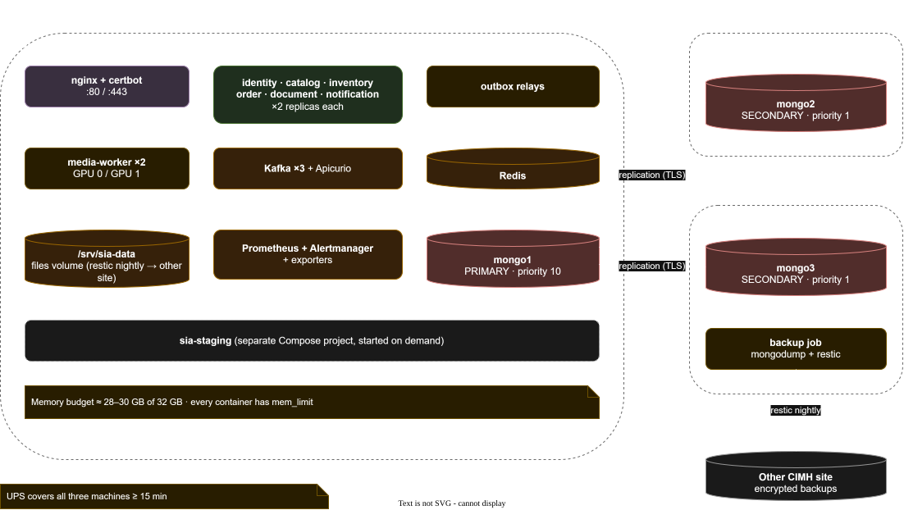
| Machine | Specification | Runs |
|---|---|---|
| Main host | 16 cores · 32 GB RAM · 2 × 6 GB GPU · 2 × 2 TB NVMe (RAID 1) · Ubuntu Server LTS · NVIDIA Container Toolkit | nginx, all services, media-worker (GPU), Kafka ×3, Apicurio, Redis, mongo1 (primary), Prometheus + Alertmanager, staging, file volume |
| Raspberry Pi 5 A | 8 GB (16 GB recommended) · 1 TB NVMe SSD · active cooling · Ubuntu Server arm64 | mongo2 (secondary, priority 1) |
| Raspberry Pi 5 B | Same as A | mongo3 (secondary, priority 1) + backup job |
| UPS | ≥ 15 min for all three machines | Clean shutdown on power loss |
Replica set behaviour: - Any single member can fail and writes continue (the other two still form a majority). - If the host fails, a Pi becomes primary. The data is safe, but the services also run on the host, so the platform is down until the host is restored. - When the host comes back, it takes over as primary automatically (priority 10). - MongoDB requires a Pi 5 (a Pi 4 can't run current versions), and the database must be on an SSD, never an SD card.
7.2 Memory budget (main host)
| Component | RAM |
|---|---|
| OS + Docker | 2 GB |
| MongoDB primary (6 GB cache) | 8 GB |
| Kafka ×3 | 5 GB |
| Redis, Apicurio, nginx | 2 GB |
| Services (6 × 2 replicas) | 3 GB |
| media-worker | 2 GB |
| Prometheus, Alertmanager, exporters | 2 GB |
| ClamAV | 1–1.5 GB |
| Production subtotal | 25–25.5 GB |
| Staging (reduced, on demand) | 4–6 GB |
| Total | 29.5–31.5 GB of 32 GB: a 64 GB upgrade is strongly recommended |
Every container has a mem_limit. Staging is stopped during busy periods and load tests. If memory stays above 85%, upgrade the host to 64 GB.
GPUs: one media-worker replica is pinned to each GPU. If a GPU is unavailable, the worker falls back to the CPU.
7.3 Networks and firewall
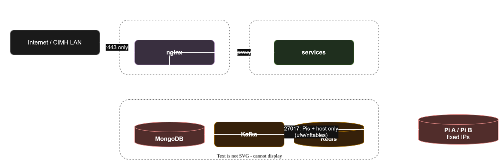
| Network | Members |
|---|---|
edge |
nginx only (ports 80/443 published) |
app |
nginx + services |
data (internal) |
services, MongoDB, Kafka, Redis |
MongoDB port 27017 is reachable only from the host and the Pis' fixed IPs (ufw/nftables). The Pis must be on the same LAN, with latency under 2 ms.
7.4 Compose projects
| Host | Project | Contents |
|---|---|---|
| Main host | sia-prod |
Everything in §7.1 for the host |
| Main host | sia-staging |
1 replica per service, 1 Kafka broker, single-node replica set; anonymised data |
| Pi A | sia-db-a |
mongo2, node-exporter |
| Pi B | sia-db-b |
mongo3, node-exporter, backup job |
Scaling: docker compose up -d --scale order-svc=4. nginx finds the new replicas through Docker DNS. Kafka consumers can scale up to the number of partitions in a topic.
7.5 Environments and CI/CD
| Environment | Where | Data |
|---|---|---|
| Local | Developer machine (compose.dev.yml) |
Seeded test data |
| CI | GitHub Actions | Temporary containers created per test run |
| Staging | Main host, separate Compose project | Anonymised copy of production |
| Production | Main host + 2 Pis | Live |
CI: lint → type-check → unit → integration (testcontainers) → contract (Schemathesis) → security scans → images tagged with the git SHA → GHCR.
Release:
1. Run database migrations once.
2. Update services one at a time with docker compose up -d --no-deps <svc>, waiting for each to pass /health/ready before the next.
3. Rollback: redeploy the previous SHA. Migrations must allow this: add new fields first, and remove old ones only in a later release.
7.6 Monitoring and alerts
| Concern | Tool |
|---|---|
| Metrics | Prometheus (built-in web UI) scraping each service's /metrics + node, MongoDB, Kafka and Redis exporters |
| Alerts | Alertmanager → email via the CIMH mail server |
| Logs | JSON to stdout; Docker local log driver with rotation; docker compose logs <svc> \| jq; follow one request by its traceId |
| Health | /health/live, /health/ready on every service; Docker healthchecks |
Alert rules: - a new unhandled exception type - error rate > 1% - p95 latency above target - a message in a DLQ - consumer lag > 1,000 - outbox backlog older than 1 min - a replica set member down, or a Pi becoming primary - disk > 80% - memory > 85% - a TLS certificate expiring within 14 days
7.7 Backups and recovery
| Item | Value |
|---|---|
| MongoDB | Nightly mongodump (or Percona Backup) taken from Pi B (a secondary) |
| Files | /srv/sia-data backed up nightly with restic |
| Destination | Encrypted restic repository at another CIMH site |
| Targets | RPO ≤ 24 h · RTO ≤ 4 h |
| Testing | Full restore tested every quarter |
7.8 Transition from the legacy Flask app
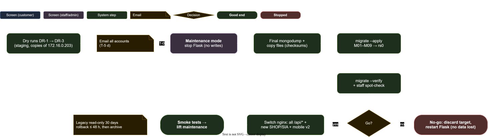
Staged testing, single data cut-over. v2 is tested on staging route group by route group, but production data moves once, in a ~45-minute maintenance window: freeze legacy → final dump → migrate (M01–M09) → verify → go/no-go → switch all /api/* routes, the new SHOP/SIA and the mobile app together. Legacy stays read-only for 30 days (rollback allowed within 48 h). Full runbook: Chapter 13 and the Data Migration Plan.
8. Technology stack
Source: TRD §3. Every component uses its latest stable release at project start, pinned exactly (never latest) and reviewed quarterly. The exception is Android, where the minimum stays at Android 12.
8.1 Backend
| Concern | Choice | Why |
|---|---|---|
| Language | Python | Existing team skills; PDF and image libraries already in use |
| Framework | FastAPI + Pydantic v2 | Async; validation built in; OpenAPI generated automatically |
| App server | Uvicorn (Gunicorn as process manager) | Standard production setup for FastAPI |
| MongoDB access | PyMongo Async API + Beanie | Official async driver; typed models |
| Kafka | aiokafka | Async; idempotent producer |
| Redis | redis-py (asyncio) | |
| Scheduled jobs | APScheduler (one leader replica via a Redis lock) | Quote expiry, reminders, purges |
| PDFs | ReportLab | Carried over from the current system |
| QR / barcodes | segno, python-barcode | |
| Images | Pillow; rembg + onnxruntime-gpu (media-worker only) | Background removal on the GPUs |
| Passwords | argon2-cffi (Argon2id) | Current best practice |
| Tokens | PyJWT (EdDSA) | Services can verify tokens with the public key only |
| aiosmtplib + Jinja2 | CIMH mail server | |
| Tests | pytest, pytest-asyncio, testcontainers, Schemathesis | Real MongoDB/Kafka/Redis in tests; API contract tests |
| Quality | Ruff, mypy (strict) |
8.2 Web frontends (SHOP and SIA)
| Concern | Choice |
|---|---|
| Language | TypeScript (strict: true) |
| Framework | Vue 3 (Composition API, <script setup lang="ts">) |
| UI | Vuetify 4 (one shared theme package) |
| Routing | Vue Router with file-based routing (routes generated from src/pages/) |
| State | Pinia |
| Validation | Zod 4 (shared by forms and API response checks) + vee-validate |
| API client | Generated from OpenAPI (openapi-typescript + openapi-fetch) |
| Build | Vite, Node.js LTS, pnpm workspace |
| Tests | Vitest, Playwright, axe-core |
| Quality | ESLint, Prettier |
8.3 Mobile
| Concern | Choice |
|---|---|
| Language / UI | Kotlin, Jetpack Compose, Material 3 |
| Network | Retrofit + OkHttp (types generated from OpenAPI) |
| Offline | Room + WorkManager |
| Scanning | CameraX + ML Kit |
| Token storage | Android Keystore |
| Minimum OS | Android 12 (API 31) |
8.4 Platform
| Concern | Choice |
|---|---|
| Database | MongoDB Community, 3-member replica set |
| Messaging | Apache Kafka (KRaft) ×3 + Apicurio Registry |
| Cache | Redis (AOF) |
| Edge | nginx + certbot (Let's Encrypt) |
| Containers | Docker Engine + Docker Compose (Compose only) |
| Monitoring | Prometheus + Alertmanager + exporters (no Grafana, Loki or Sentry) |
| Backups | mongodump / Percona Backup + restic |
| CI/CD | GitHub + GitHub Actions + GHCR |
8.5 Deliberately not used
| Not used | Reason |
|---|---|
| Kubernetes / other orchestrators | Decision: Docker Compose only |
| S3 / cloud object storage | Decision: local files |
| Online payments | Business model is quote → accept |
| FedEx / DHL APIs | Tracking numbers entered by hand |
| Grafana, Loki, Sentry | Decision: Prometheus + Alertmanager only |
| Cloud CDN / WAF | Decision: nginx only at the edge |
9. Documentation map and glossary
9.1 How the documents relate
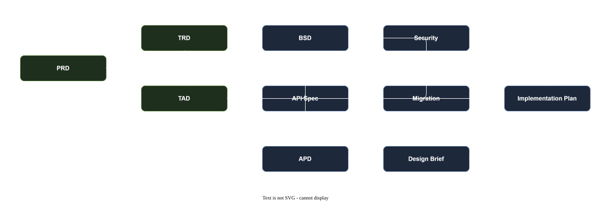
| Document | Definition | Status |
|---|---|---|
| PRD: Product Requirements Document | What the product does, feature by feature; expected functionality and behaviour (Atlassian structure) | Draft |
| TRD: Technical Requirements Document | Tools, techniques and infrastructure; numeric technical requirements | Draft |
| TAD: Technical Architecture Document | How the system is built: parts, connections and reasons | Draft |
| BSD: Background (Backend) Schema Document | Where data lives, its structure, who can access it, relationships | Draft |
| API Specification | Exact contract for every endpoint and event | Draft (validated) |
| APD: App Flow Document | What happens on each click; which page comes next; main user journeys | Draft |
| Design Brief | Visual direction: colours, fonts, how each screen should look | Draft |
| Security and Threat Model | Assets, threats (STRIDE), controls, secrets, privacy, security testing | Draft |
| Data Migration Plan | Moving legacy data into v2: mapping, checks, dry runs, cut-over, rollback | Draft |
| Infrastructure and Environment Plan | Machines, network, containers, environments, provisioning | Draft |
| Test Strategy | How quality is proved: levels, tools, gates, criteria | Draft |
| Implementation Plan | What gets built, in what order; phases and deliverables | Draft |
The full list of 32 documents, covering before, during and after the build, is in the Documentation Index.
9.2 Architecture decisions (ADRs)
| ADR | Decision | Status |
|---|---|---|
| 0001 | Microservices split by business area | Accepted |
| 0002 | FastAPI + Python | Accepted |
| 0003 | MongoDB; one inventory database; existing names; one owner per collection |
Accepted |
| 0004 | Replica set: host primary + 2 Pi 5 secondaries | Accepted |
| 0005 | Kafka for events; HTTP only for immediate questions | Accepted |
| 0006 | Outbox saved on the changed document + change-stream relay | Accepted |
| 0007 | EdDSA tokens, JWKS, Redis revocation | Accepted |
| 0008 | Local file volume + X-Accel-Redirect | Accepted |
| 0009 | Docker Compose only | Accepted |
| 0010 | Vue 3 + TS + Vuetify 4 + file-based routing + Zod 4 | Accepted |
| 0011 | Prometheus + Alertmanager only | Accepted |
| 0012 | Sites/shelves stay in misc for now |
Proposed |
| 0013 | Single application host | Accepted |
| 0014 | Carts stored in orders (status: CART) |
Proposed |
| 0015 | Quote → accept replaces online payment | Accepted |
9.3 Glossary
| Term | Meaning |
|---|---|
| APD | App Flow Document |
| BBD / USD | Barbados dollar / US dollar: the only quote currencies |
| BSD | Background (Backend) Schema Document |
| CIMH stock quote | Generated quote offering lines fully available in CIMH stock (catalogue cost + admin fee) |
| Circuit breaker | Stops calling a failing service for a short time so failures don't cascade |
| Consumer group | Set of replicas of one service that share a Kafka topic's partitions |
| DLQ | Dead-letter queue: where messages go after all retries fail |
| EdDSA / Ed25519 | Signature algorithm used for tokens |
| Idempotent | Safe to apply more than once with the same result |
| IDOR | Insecure Direct Object Reference: reading someone else's data by changing an id |
| JWKS | JSON Web Key Set: public keys used to verify tokens |
| KRaft | Kafka's built-in cluster coordination (no ZooKeeper) |
| Pro Bono | Pro Bono item: free item from CIMH stock; no quote |
| Outbox | Events saved with the state change, then published by a relay |
| Primary / secondary | The MongoDB member that accepts writes / members that keep copies |
| RPO / RTO | Maximum data loss / maximum time to restore |
| Cut-over | The single maintenance window in which production data moves from legacy to v2 and traffic switches |
| TTL index | MongoDB index that deletes documents automatically after a time |
| X-Accel-Redirect | nginx header that serves an internal file after the app approves it |
10. API
Source: API Specification (OpenAPI 3.1 per service + AsyncAPI 3.0 for events; every file validated). The YAML files are the source of truth.
10.1 Services and base paths
| Service | Base path | Spec | Who calls it |
|---|---|---|---|
| identity | /api/identity/v1 |
identity.openapi.yaml | All clients |
| catalog | /api/catalog/v1 |
catalog.openapi.yaml | All clients (public browsing) |
| inventory | /api/inventory/v1 |
inventory.openapi.yaml | SIA, Mobile (staff only) |
| orders | /api/orders/v1 |
orders.openapi.yaml | SHOP, SIA, Mobile |
| documents | /api/documents/v1 |
documents.openapi.yaml | All clients |
| events | Kafka | events.asyncapi.yaml | Services only |
Shared schemas (Problem, Money, Address, paging) live in common.yaml.
10.2 Conventions at a glance
| Topic | Rule |
|---|---|
| Format | JSON; errors as RFC 9457 application/problem+json with a stable code and traceId |
| Versioning | v1 in the path; additions are non-breaking; breaking changes mean v2, with both live ≥ 90 days |
| Money | String with 2 decimals ("1250.00"), never a float; currency BBD or USD |
| Dates | ISO-8601 UTC |
| Paging | ?limit (≤ 100) + ?cursor, giving { items, nextCursor }; no offsets or page counts |
| Concurrency | version + ETag; state changes send If-Match; stale gives 409 |
| Idempotency | Idempotency-Key on request submission and required on every scan (safe for the mobile offline queue) |
| UI buttons | Request.allowedActions says what the caller may do now |
| Hidden data | Returns 404, not 403, for resources the caller can't see |
| Unknown fields | Rejected in requests (422), ignored in responses |
10.3 Login from each client
| Client | Mechanism |
|---|---|
| SHOP / SIA | HttpOnly cookies + X-CSRF-Token header (double-submit) |
| SIA Mobile | client: "mobile" login → Bearer tokens in Keystore; refresh issues a new refresh token each time |
| Services | /internal/service-token (5 min), internal network only; /internal/* is never routed by nginx. Service tokens are refused on user endpoints. GET /internal/codes/{codeRef} lets notification-svc (only) claim a code once |
Rate limits are 20 requests/s per IP for the API in general and 5/min on auth endpoints. Exceeding them returns 429 with Retry-After.
Implicit responses. To keep the specs readable, these are not repeated on every operation, but any
operation may return them (all as application/problem+json): 401 and 403 if the operation is
secured; 422 if it takes a body, query or path parameters; 428 (PRECONDITION_REQUIRED) if it takes If-Match; 400, 429 and 503 always. Every
other status must be listed on the operation. The Schemathesis contract tests apply exactly this rule.
Strict bodies. Request bodies are validated strictly: a number sent as a string, or true for an integer, is a 422 (never coerced).
10.4 The request (order) API: state machine as endpoints
Endpoint (/api/orders/v1/requests/{id}/…) |
Who | Paid flow | Pro Bono flow |
|---|---|---|---|
POST /requests (submit cart) |
customer | → SUBMITTED |
→ SUBMITTED (mixed cart → 2 requests) |
start-quoting |
staff | SUBMITTED → QUOTING (stock check) |
— |
PUT quote-draft |
staff | supplier prices + CIMH option (+ exchange rate if USD) | — |
send-quote |
staff | QUOTING → QUOTED (30 days; re-send = new version) |
— |
agreement |
requester/admin | QUOTED → AWAITING_AGREEMENT (choice per line; agreement PDF generated) |
— |
accept |
requester/admin | AWAITING_AGREEMENT → ACCEPTED (signed agreement file id) |
— |
reject-agreement |
staff | ACCEPTED → AWAITING_AGREEMENT (bad signature, reason) |
— |
decline |
requester/admin | QUOTED → DECLINED → CANCELLED |
— |
purchase-orders |
staff | ACCEPTED → PURCHASING (agreement verified) |
— |
approve / reject |
staff | — | SUBMITTED → APPROVED / REJECTED |
picks |
staff | pick CIMH-stock lines only (supplier items ship direct) | APPROVED → PICKING |
ship |
staff | PURCHASING → SHIPPED |
PICKING → SHIPPED |
deliver |
staff | SHIPPED → DELIVERED |
SHIPPED → DELIVERED |
cancel |
requester/staff/admin | up to AWAITING_AGREEMENT (customer); ACCEPTED staff/admin only |
SUBMITTED (customer); APPROVED staff/admin only |
Every illegal action returns 409 ORDER_ILLEGAL_TRANSITION; a stale If-Match returns 409 VERSION_CONFLICT. The admin fee is charged once per request and included in the agreement total. Shipping needs every CIMH-stock and Pro Bono unit picked first (409 PICKING_INCOMPLETE).
Status diagrams: Chapter 5.
10.5 Endpoint summary
| Service | Main endpoints |
|---|---|
| identity | /auth/register, /auth/verify, /auth/login, /auth/refresh, /auth/logout, /auth/password/*, /auth/mfa/*, /.well-known/jwks.json, /me, /admin/accounts (+ approve, deny, bulk-decision, suspend, reactivate, role), /organisations (+ merge), /audit |
| catalog | /products (browse, create), /products/search, /products/{id}, /products/{id}/images, /reference, /settings/fees, /settings/email-lists, /settings/general |
| inventory | /sites, /sites/{s}/locations, /locations/{l}/shelves, /shelves/{b} (+ /units), /units/{b}, /labels, /stow, /pick, /relocate, /assign, /unassign, /products/{id}/stock, /stock/low, /assignments, /history |
| orders | /cart, /cart/lines/{productId}, /requests, /requests/{id} + the actions in §10.4 |
| documents | POST /files, GET /files/{id} (X-Accel-Redirect), DELETE /files/{id} |
The full catalogue with roles, and the legacy → v2 endpoint mapping, is in the API Specification.
10.6 Error codes clients should handle
| Code | When | UI behaviour |
|---|---|---|
ACCOUNT_PENDING_APPROVAL |
Login before approval | Show the "awaiting approval" page |
CIMH_CANNOT_REQUEST |
@cimh.edu.bb user uses the cart |
Hide cart actions |
PROBONO_LIMIT_EXCEEDED |
Pro Bono quantity above the item maximum | Show the maximum |
QUOTE_OUTDATED / QUOTE_EXPIRED |
Accepting an old or expired quote | Reload the request |
VERSION_CONFLICT (409) |
Someone else changed it first | Reload and retry |
UNIT_RESERVED / UNIT_NOT_RESERVED_FOR_ORDER |
Wrong unit scanned | Warn the scanner |
TOKEN_REUSE |
Stolen or duplicated refresh token | Force a new login |
MFA_REQUIRED |
Admin login without a code, or admin token before MFA setup | Ask for the authenticator code / start MFA setup |
ACCOUNT_LOCKED (403, Retry-After) |
5 failed logins | Show when to try again |
PRECONDITION_REQUIRED (428) |
Change sent without If-Match |
Client bug: always send the version |
ACCOUNT_ILLEGAL_TRANSITION (409) |
Approving/suspending an account in the wrong status | Reload the account |
10.7 Decisions
- Customers upload the signed payment agreement (
signed_agreement) to their own requests; that upload is what accepts the quote. - Supplier-bought items are shipped direct: never stowed and never tracked as units.
11. App flows
Source: App Flow Document (APD). It shows what happens on each click and which screen comes next in SHOP, SIA and SIA Mobile. Screen ids: S- SHOP, A- SIA, M- Mobile, J- journeys. Routes follow file-based routing (/requests/[id] = src/pages/requests/[id].vue). Request buttons come from the API's allowedActions.
11.1 Global behaviour (all apps)
| Situation | Behaviour |
|---|---|
| Not logged in on a guarded route | → Login with ?returnTo=<route>; after login, return there |
| Login with a non-ACTIVE account | ACCOUNT_PENDING_VERIFICATION → Verify email · ACCOUNT_PENDING_APPROVAL → "Awaiting approval" · ACCOUNT_REJECTED / ACCOUNT_SUSPENDED → message with a contact link · ACCOUNT_LOCKED → message with the unlock time · MFA_REQUIRED → code step |
| Role not allowed (e.g. customer opens SIA) | SIA/Mobile: "This app is for CIMH staff" + link to SHOP. SHOP staff-only pages don't exist |
@cimh.edu.bb user in SHOP |
Can browse. Cart icon hidden; "Add to request" replaced by a note: "CIMH staff can't submit requests" |
| Session expired mid-use | Silent refresh. If refresh fails → Login (returnTo), and unsaved form data is kept in session storage |
| 404 / not visible | "Not found" page with a link back (hidden resources look the same as missing ones) |
| 409 version conflict | Toast: "This was changed by someone else", then ↺ reload. The user's draft is kept where possible |
| 422 validation | Inline field errors from errors[] |
| 429 | Toast with the Retry-After countdown |
| 503 / network | Banner "Service unavailable, try again" + Retry. Nothing was saved |
| Empty lists | Explanatory empty state with the next action (e.g. "No requests yet → Browse catalogue") |
| Loading | Skeletons for lists and detail; buttons show a spinner and are disabled while submitting |
| Theme | Light/dark toggle, remembered per device |
11.2 SHOP: screens
Top bar: logo → S-01 · Catalogue · Pro Bono · search box → S-06 · Cart (badge; customers only) → S-07 · My requests → S-10 · Account menu (Profile, Log out) or Log in / Sign up.
| ID | Route | Screen | Guard | Main content | Actions → next |
|---|---|---|---|---|---|
| S-01 | / |
Home | public | Hero, featured MET/RAD products, Pro Bono teaser, how requesting works (3 steps) | Product → S-03 · Browse → S-02 · Pro Bono → S-04 · Sign up → S-13 |
| S-02 | /catalogue |
Catalogue | public | Filters (type, department, project, in stock), product grid, "Load more" (cursor) | Product → S-03 · Search → S-06 |
| S-03 | /catalogue/[id] |
Product detail | public | Images, specs, availability (no price), Pro Bono badge and max per request | Quantity + Add to request (customer) ↺ cart badge, toast "Added" with "View cart" → S-07 · Not logged in → S-16 (returnTo) |
| S-04 | /pro-bono |
Pro Bono items | public | Same as S-02, filtered to probono=true, by project |
→ S-03 |
| S-06 | /search?q= |
Search results | public | Ranked results, filters | → S-03 |
| S-07 | /cart |
Cart | customer | Lines (snapshot, qty stepper, remove); Pro Bono lines grouped separately; note: "Paid and Pro Bono items become two requests" | Qty change ↺ · Remove ↺ · Continue → S-08 · Empty → S-02 |
| S-08 | /cart (steps 2–3) |
Submit request | customer | Shipping address (saved list or new), billing (same as shipping by default), currency BBD/USD (only if paid lines), notes, review | Submit → S-09 · Back → S-07 |
| S-09 | /cart (step 4) |
Request submitted | customer | One or two request ids, "What happens next" | View request → S-11 · Continue browsing → S-02 |
| S-10 | /requests |
My requests | customer | Tabs Mine / My organisation; filters status, year, requester; list with status chip and "action needed" badge (quote ready, agreement to sign) | Row → S-11 |
| S-11 | /requests/[id] |
Request detail | customer (owner or same org) | Status timeline; lines; Quote panel (when QUOTED+): supplier quote(s) and the CIMH option side by side per line, totals, expiry countdown, PDFs; documents; shipping (carrier, tracking link); cancel | Choose options (QUOTED) → S-12 · Decline ⧉ reason → ↺ · Cancel ⧉ reason → ↺ · Tracking link → carrier site (new tab) · Document → download |
| S-12 | /requests/[id]/agreement |
Choose and sign | requester | Step 1: radio CIMH/SUPPLIER per line with both options, live total. Step 2: Download agreement (PDF, appears when generated; ↺ polling). Step 3: Upload signed agreement (PDF/JPG/PNG, ≤ 20 MB) | Confirm choices → step 2 (status AWAITING_AGREEMENT) · Change choices → step 1 (new agreement) · Upload → Accept → S-11 (ACCEPTED, toast) · Cancel → S-11 |
| S-13 | /signup |
Sign up | public | Name, email, password (strength + breach check message), organisation (free text), department, country, phone, terms | Submit → S-14 |
| S-14 | /verify?email= |
Verify email | public | 6-digit code, resend (cool-down) | Correct → S-15 (member) or S-16 with "Account active" (@cimh.edu.bb) · Wrong → inline error (attempts left) |
| S-15 | /pending-approval |
Awaiting approval | public | "An administrator will review your account; you'll get an email" | Home → S-01 |
| S-16 | /login |
Log in | public | Email, password, (code if MFA) | Success → returnTo or S-10 · Status errors as §2 · Forgot → S-17 · Sign up → S-13 |
| S-17 | /forgot-password |
Forgot password | public | Submit → S-18 (always, no enumeration) | |
| S-18 | /reset-password?email= |
Reset password | public | Code + new password | Success → S-16 "Password changed" |
| S-19 | /account |
Profile | auth | Name, phone, organisation (read-only + "contact admin"), addresses (max 10), change email, change password, theme, your data | Save ↺ (If-Match) · Change email ⧉ → code step · Download my data · Ask to delete ⧉ (password) · Log out → S-01 |
| S-20 | /[...notFound] |
Not found | public | Message + links | → S-01 |
11.3 SIA: screens (staff and admin)
Navigation (legacy SIA top header; drawer below 1280 px): Dashboard · Products · Inventory (Labels, Location, Lookup) · Pick · Stow · Request desk (P5) · Reports ▾ · Admin ▾ · Profile. The scan box in the header takes a unit, shelf or product code (a handheld scanner types it and presses Enter) and opens Inventory → Lookup on it; request codes open the request desk once it exists (P5).
| ID | Route | Screen | Guard | Main content | Actions → next |
|---|---|---|---|---|---|
| A-01 | / |
Dashboard | staff | Counters: new requests, quoting, agreements to verify, to purchase, to pick, to ship, quotes expiring ≤ 3 days, low stock, pending approvals (admin) | Each counter → A-02 filtered / A-13 / A-16 |
| A-02 | /requests |
Request desk (queue) | staff | Filters: status (multi), type, year, organisation, customer, search; sort by waiting time; columns: id, customer, org, type, status, waiting days, expiry | Row → A-03 |
| A-03 | /requests/[id] |
Request (staff) | staff | Customer + org, lines (with cimhAvailable, choice, reservation), timeline, documents, action panel driven by allowedActions |
start-quoting ↺ → A-04 · send-quote (from A-04) · Verify agreement (view signed PDF ⧉) → purchase-orders ⧉ (supplier, PO no., lines, ☑ agreement verified) ↺ · reject-agreement ⧉ reason ↺ · approve / reject (Pro Bono) ↺ · Pick → A-10 (prefilled) · ship ⧉ carrier, tracking (not for HAND), note, cost, date, notify ↺ · deliver ⧉ ↺ · cancel ⧉ ↺ |
| A-04 | /requests/[id]/quote |
Quote builder | staff | Per line: CIMH option (if fully in stock: cost + admin fee, auto-priced), supplier price inputs per supplier, upload supplier PDFs; exchange rate (USD requests with a CIMH option); totals; draft autosave (quote-draft) |
Send quote → A-03 (QUOTED; customer emailed) · Incomplete → inline errors |
| A-05 | /products |
Products | staff | Search, filters (type, department, sellable, Pro Bono, inactive), table with stock count | Row → A-07 · New → A-06 |
| A-06 | /products/new |
New product | staff | Form (all ProductInput fields; Pro Bono toggle required, max per request when on) | Save → A-07 (then add images) |
| A-07 | /products/[id] |
Product | staff | Tabs: Details (edit), Images (upload, background-removal option, set primary, remove), Stock (by location), History | Save ↺ · Deactivate ⧉ · Create labels → A-12 (prefilled) |
| A-08 | /inventory?op=location |
Inventory → Location (legacy arrow tabs) | staff | ‹ Site · Location · Shelves › forms; below, tree site → location → shelves with printable QR codes | Register site / Create location / Add shelves (QR sheet shown) · Shelf → A-11 |
| A-09 | /stow |
Stow (legacy numbered steps) | staff | 1. Select shelf (scan, validated, "You have selected Location › Shelf n"); 2. Scan units (repeat); running ✓/✗ list with the reason | Each scan ↺ (Retry reuses its Idempotency-Key) · Change shelf → step 1 |
| A-10 | /pick |
Pick (legacy operation buttons) | staff | Pick (reason, then scan units) · Relocate (target shelf, then units) · Issue / Return (person, then units; legacy self-stow) · Pick Order (request lines; with P5) | Scan ↺ · Request done → A-03 |
| A-11 | /inventory?op=lookup&code= |
Inventory → Lookup | staff | Scan/enter a shelf (units, paged), unit (card) or product code, or search a product by name (stock by location) | Unit card: Move · Issue · Return · Pick ↺ · Create labels → A-12 |
| A-12 | /inventory?op=labels&product= |
Inventory → Labels (legacy "Product"; products are created in A-06) | staff | Product, quantity, serials (optional, one per unit) | Create → QR label sheet (print) + legacy CSV; server PDF with document-svc (P6) |
| A-13 | /reports/stock |
Stock levels | staff | Low stock (available ≤ alert level) with available/alert/reserved/issued/picked; any product's stock via search | → A-07 Stock tab |
| A-14 | /reports/assignments |
Who has what | staff | Units issued to people, grouped by person; filter one person | Return ↺ |
| A-15 | /reports/history |
Movement history | staff | Filters unit, user, operation, dates | — |
| A-16 | /admin/approvals |
Pending accounts | admin | Oldest first; organisation text, email domain, suggested organisation match; checkbox multi-select | Approve ⧉ (pick/create organisation, role) ↺ · Deny ⧉ reason ↺ · Bulk approve/deny ⧉ (207 results) ↺ |
| A-17 | /admin/accounts · /admin/accounts/[id] |
Accounts | admin (staff read) | List with filters (incl. "asked to be deleted"); detail with status history | Role ⧉ · Suspend ⧉ / Reactivate · Export data · Erase ⧉ (reason + type the email) · → A-20 filtered |
| A-18 | /admin/organisations |
Organisations | admin | List, members, aliases, domains | New/Edit ⧉ · Merge ⧉ target |
| A-19 | /admin/settings |
Settings | admin | Tabs: Fees (admin fee) · Email lists · Workflow (quote validity, reminders, purge, cart inactivity) · Reference (departments, projects) | Save ↺ |
| A-20 | /admin/audit |
Audit log | admin | Filters entity, actor, action, dates | Entity link → its screen |
| A-21 | /login · /profile |
Login / Profile | public / staff | As S-16 / S-19; non-staff → "staff only" message | — |
11.4 SIA Mobile: screens (Android 12+)
Bottom navigation: Home · Lookup · Stow · Pick · Orders. The overflow menu holds Create product, Create location, Sync queue and Log out (with a badge for queued or refused scans).
| ID | Route | Screen | Main content | Actions → next |
|---|---|---|---|---|
| M-01 | login |
Login | Email, password, (code) | Success → M-02 · non-staff → "staff only" |
| M-02 | home |
Home | Shortcuts, offline queue badge, last sync | → any tab |
| M-03 | lookup → lookup/results → product/{id} |
Lookup | Camera scan (shelf/product) or type; results paged; product with locations | Unit → unit sheet (relocate, assign) |
| M-04 | stow |
Stow | Scan shelf → scan units loop; vibration + sound per result | Done → M-02 |
| M-05 | pick |
Pick · Issue · Return | Pick: reason once, then scan units. Issue: choose a person (name or email), then scan units. Return: scan units coming back (then stow them) | Next scan ↺ |
| M-06 | orders |
Orders to pick/ship | Requests with lines to pick or ship (paid PURCHASING with CIMH-stock lines; Pro Bono APPROVED or PICKING; same filter as the SIA web "To pick" tile) | Row → M-07 |
| M-07 | orders/{id}/pick |
Pick order | Lines (CIMH/Pro Bono only) with progress; scan units; wrong unit → error chip | All picked → M-08 |
| M-08 | orders/{id}/ship |
Ship | Carrier, tracking (camera scan of the label barcode), note, date | Ship → M-06 |
| M-09 | create/product |
Create product | Form + photos (camera) | Save → product/{id} |
| M-10 | create/location |
Create location | Site → location → shelves | Save ↺ |
| M-11 | sync |
Sync queue | Queued scans with status; retry/discard failed | ↺ |
Offline:
- Every scan (stow, pick, relocate) is saved first, with its own Idempotency-Key, in Room. It is then sent at once, or by WorkManager when the connection returns. The key never changes on automatic retries, so a scan that reached the server before the connection dropped is not done twice.
- Scans are sent oldest first, and a new scan never overtakes a queued one (a stow and a later pick of the same unit arrive in that order).
- No answer, 408, 429 or 5xx: the scan stays queued. 401: sending stops until the same account logs in again. Any other 4xx: the scan is refused and kept in M-11 with the server's message. The server replays a refusal for the same key, so Retry in M-11 sends it with a new key; Discard deletes it.
- The UI shows Done / Queued / Refused chips. M-02 shows the queue count and the last sync time; the overflow menu shows a badge.
- Log out with scans still in the queue asks first: the queue belongs to the account that scanned and is deleted on log out. Scans of another account are never sent with the current account's token.
- Scan input: live camera (CameraX + ML Kit on the device), or a text field that submits on Enter, for Bluetooth/USB scanners and damaged labels.
11.5 User journeys
J-01 Registration and approval
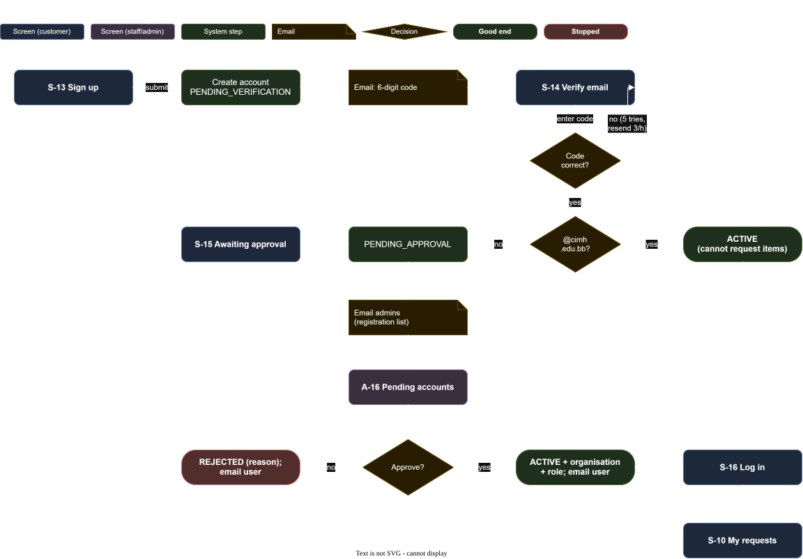
| Step | Who / screen | Action | Result / next |
|---|---|---|---|
| 1 | Visitor · S-13 | Fills sign-up | Account PENDING_VERIFICATION; code emailed → S-14 |
| 2 | Visitor · S-14 | Enters code | @cimh.edu.bb → ACTIVE → S-16 · otherwise PENDING_APPROVAL → S-15; admins emailed |
| 3 | Admin · email link → A-16 | Approves (links organisation, role) or denies (reason) | User emailed; approved → can log in at S-16 |
| 4 | User · S-16 | Logs in | → S-10 or returnTo |
| Alt | User · S-16 before approval | Logs in | "Awaiting approval" (S-15) |
| Alt | Code expired / lost | Resend on S-14 | New code (max 3/hour); unverified 24 h → EXPIRED (must register again) |
J-02 Browse → cart → submit
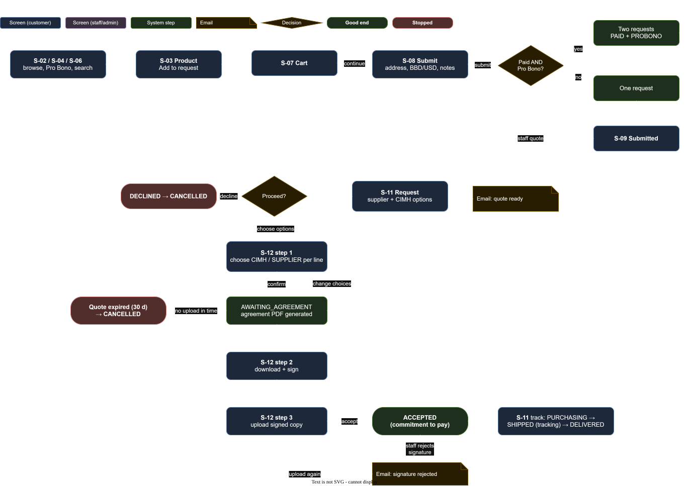
| Step | Screen | Action | Next |
|---|---|---|---|
| 1 | S-01/S-02/S-04/S-06 | Find a product | S-03 |
| 2 | S-03 | Add to request (qty; Pro Bono capped) | Toast; badge ↺ |
| 3 | S-07 | Review, adjust | S-08 |
| 4 | S-08 | Address, currency (paid lines), notes → Submit | S-09 (1 or 2 requests) |
J-03 Quote → choose → sign → accepted (customer)
Same diagram (lower half).
| Step | Screen | Action | Next / status |
|---|---|---|---|
| 1 | Email "Quote ready" → S-11 | Reads supplier and CIMH options, expiry | — |
| 2 | S-11 → S-12 step 1 | Chooses CIMH/SUPPLIER per line → Confirm | AWAITING_AGREEMENT; agreement PDF generated |
| 3 | S-12 step 2 | Downloads agreement, signs | — |
| 4 | S-12 step 3 | Uploads signed copy → Accept | ACCEPTED → S-11 |
| Alt | S-12 | Change choices | Back to step 1 (new agreement) |
| Alt | S-11 | Decline with reason | DECLINED → CANCELLED |
| Alt | — | Quote expires (30 d) | CANCELLED (auto); reminder 3 days before |
| Alt | Email "Signature rejected" → S-12 step 3 | Uploads again | ACCEPTED |
J-04 Track to delivery (customer)
S-10 (badge) → S-11: timeline updates (PURCHASING → SHIPPED with carrier and tracking link → DELIVERED). Invoice appears under Documents. Organisation colleagues can follow from the My organisation tab.
J-05 Staff: quoting
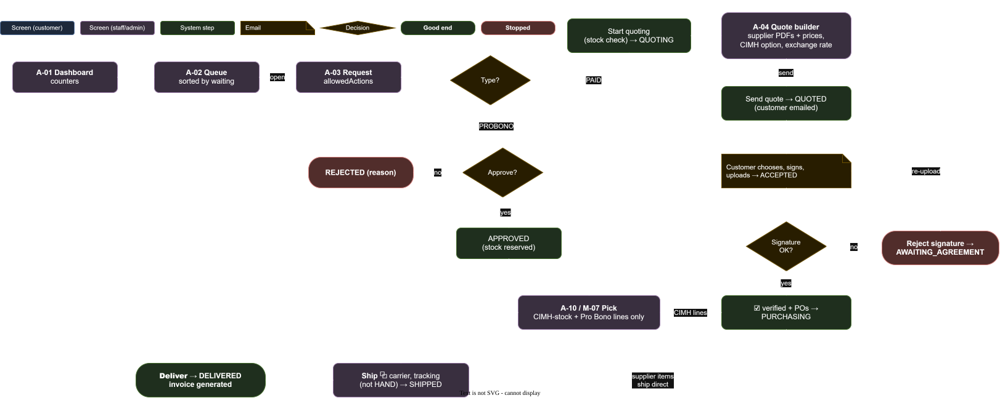
| Step | Screen | Action | Result |
|---|---|---|---|
| 1 | A-01 "New requests" → A-02 → A-03 | Start quoting | QUOTING; lines show CIMH availability |
| 2 | A-04 | Upload supplier PDFs, enter prices, (exchange rate) | Draft autosaved |
| 3 | A-04 | Send quote | QUOTED (30 d); customer emailed → A-03 |
| Alt | A-03 (QUOTED) | Revise → A-04 → Send | New quote version |
J-06 Staff: fulfil a paid request
| Step | Screen | Action | Result |
|---|---|---|---|
| 1 | A-01 "Agreements to verify" → A-03 | Open signed agreement ⧉ | — |
| 2a | A-03 | Not acceptable → Reject signature (reason) | AWAITING_AGREEMENT; customer emailed |
| 2b | A-03 | ☑ verified + purchase orders | PURCHASING |
| 3 | A-10 / M-07 | Pick CIMH-stock lines (supplier items ship direct) | Lines picked |
| 4 | A-03 / M-08 | Ship: carrier, tracking (not HAND), notify | SHIPPED; customer emailed |
| 5 | A-03 | Deliver | DELIVERED; invoice generated |
J-07 Pro Bono request
A-02 (type Pro Bono) → A-03: Approve (reserves stock) or Reject (reason) → pick (A-10/M-07, PICKING) → ship → deliver. Customer screens are S-10/S-11 (no quote panel).
J-08 Admin approvals
A-01 "Pending approvals" or email → A-16. For each account: check the organisation text and email domain; the suggested organisation match is shown → Approve ⧉ (pick or create organisation, role) or Deny ⧉ (reason). Bulk mode takes up to 100. A reminder email is sent if an account has waited more than 48 h.
J-09 Warehouse scanning (mobile)
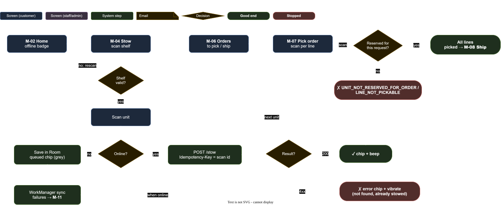
| Flow | Steps |
|---|---|
| Stow | M-04: scan shelf → (valid) → scan unit → ✓ chip / ✗ error (not found, already stowed) → repeat → Done |
| Pick | M-05: scan unit → reason → ✓ / ✗ (reserved for a request → use Orders) |
| Pick order | M-06 → M-07: scan units per line → wrong unit ✗ (UNIT_NOT_RESERVED_FOR_ORDER, LINE_NOT_PICKABLE) → all lines done → M-08 ship |
| Offline | Any scan with no connection → queued ✓ (grey) → synced later; failures in M-11 |
J-10 Product with images (staff)
A-05 → New → A-06 (Pro Bono toggle required) → Save → A-07 Images tab → upload (optional background removal) → "processing" placeholders → images appear (↺ via polling or a refresh) → set primary.
J-11 Password reset
S-16 "Forgot" → S-17 (email) → S-18 (code + new password) → S-16 "Password changed". All sessions are revoked.
11.6 Email → screen deep links
| Link opens | |
|---|---|
| Verification code | S-14 (?email=) |
| Awaiting approval / approved / rejected | S-15 / S-16 / S-01 |
| (Admins) Account waiting / reminder | A-16 |
| (Staff) New request | A-03 |
| Quote ready / reminder / expired | S-11 |
| Agreement ready | S-12 (step 2) |
| Signature rejected | S-12 (step 3) |
| (Staff) Signed agreement received | A-03 |
| Shipped (with tracking) / delivered (invoice) | S-11 |
| Cancelled | S-11 |
| (Staff) Low stock | A-13 |
| (Staff) Reservation failed | A-04 |
Links that need a login go through S-16 / A-21 with returnTo.
11.7 Questions
| # | Question | Outcome |
|---|---|---|
| 1 | Saved or multiple carts? | Resolved: no. One cart per user. |
| 2 | Per-staff assignment / "my work" on the dashboard? | Resolved: no. Requests have no assignee; the dashboard shows shared queues. |
| 3 | Is the Pro Bono catalogue public? | Resolved: yes, visible to anyone (S-04 guard public). Requesting still needs an approved customer account. |
11.9 Implementation status (2026-11-07)
Code: web/shop, web/sia (Vue 3 + Vuetify 4 + Vue Router 5 file-based routes), shared packages/web-app (session store, API errors and silent refresh, route guards, forms). Built and tested with Playwright (tests/e2e-web: J-01, J-08, J-10, J-11, personal data and the §2 behaviours) on every PR; deployed to staging (store.hashiz.store, sia.hashiz.store).
| Built | Notes |
|---|---|
| S-13 – S-19, S-20 | As specified. S-16 handles every account-state code of §2 |
| S-01 | Legacy Home structure: hero carousel (owner's image, radar, AWS), logo band with the "Online Stores" sign-in card, "Radar Spares" and "Met-service Spares" rows. Hero files in web/shop/src/assets/hero/ |
| S-02, S-04, S-06 | Legacy Inventory/NCI structure: title + search banner, type (Pro Bono: project) chips, Filters menu, product grid; search results on the same page (/search redirects to /catalogue?q=) |
| S-03 | Legacy InventoryItem structure: thumbnail strip + large photo left, one card right (name, availability, Pro Bono limit, description, details, units per pack, quantity, Add to request disabled until order-svc, P5). No price or serials |
| A-05, A-06, A-07 | Legacy SIA structure: list with grid/list toggle, search, filters, stock count; product page = photos + description left, Info card right, then tabs Details (edit, explicit Pro Bono choice), Images (upload, background removal, processing tiles, primary, remove), History (admins). "Create labels" comes with P4 |
| Shells | Legacy structure (owner rule 2026-11-07): SHOP = top bar on desktop, bottom navigation on phones, CIMH footer, no top bar on sign-in pages; SIA = one horizontal header with an Admin menu (no side drawer). Sign-in pages (both apps) = legacy split layout on the met-enclosure photo |
| A-01 | Legacy SIA Home structure: statement band, Radar / Hydro-Met spares cards, "What are you looking for today?" search, then the account counters |
| A-19 | Fees, email lists (active staff/admins), workflow, reference (departments; projects incl. inactive, rename, toggle) |
| S-10 | Empty state until order-svc (P5) |
| A-21, A-16, A-17, A-18, A-20 | As specified; A-16 suggests an organisation from the email domain, then the organisation text, and can create one in the dialog |
| Personal data (S-19, A-21, A-17) | "Your data" card: download (JSON) and ask to delete; A-17 marks and filters requests, exports and erases. The admin email for a request waits for notification-svc (P6) |
| A-01 | Identity counters only (pending approvals, unverified sign-ups) until order/inventory exist |
New: /mfa-setup (SIA) |
An admin without MFA lands here after login and can't use anything else (TR-AUTH-9). After confirming, the admin logs in again, because the old token predates MFA |
| Shortcuts, drafts (P7) | SIA: / focuses the page search (or the scan box), s the scan box (opens the drawer on small screens), g r Requests; ignored while typing or in a dialog. Unsaved forms (new/edit product, SHOP checkout) are kept in the tab's session storage, restored with a toast after logging back in, removed on save, Cancel or logout, ignored after 4 h |
New: /staff-only (SIA) |
The "This app is for CIMH staff" screen of §2 |
SIA Mobile M-01 + session (mobile/sia) |
New app (id bb.edu.cimh.sia) next to the legacy one. Login with MFA code step, "staff only" for customers, admins without MFA sent to SIA web; refresh token sealed in the Android Keystore; app lock after 5 min (screen lock or strong biometric; no screen lock → signed out); HTTPS only with pinned Let's Encrypt roots. M-02 is a placeholder; M-03–M-11 come with P8. CI job mobile (unit, lint, debug + release build) |
Behaviour notes: the start-up session probe never shows "session ended" to an anonymous visitor (only a failed refresh during use does). Dev servers use ports 15173 (SHOP) and 15174 (SIA).
12. Design system
Source: Design Brief. It covers the visual direction for SHOP, SIA and SIA Mobile: colour (contrast-checked), type, spacing, components, screen layouts and the Vuetify 4 / Material 3 theme. The token diagram uses exact colours (exported without draw.io theme adaptation).
12.1 Overview
Defines the visual design direction for SHOP, SIA and SIA Mobile: colours, fonts, spacing, components and how each screen should look, so the experience is consistent and on-brand. Tokens here map directly to the Vuetify 4 theme (web) and Material 3 theme (Android).
Brand basis:
- The CIMH logo blue (#0084C8, sampled from cimh-logo-blue.png).
- The CIMH yellow from the full-colour logo.
- Near-black ink.
The platform should feel like a trustworthy scientific institution's service: calm, precise, clear about status. It shouldn't feel like a flashy online shop.
Design references (principles only; no identity copied; via the design-md-library skill):
| App | Reference | What we take | What we don't |
|---|---|---|---|
| SHOP | Stripe | Restrained single-accent CTAs; deep-navy ink, never pure black; hairline borders; tabular figures for money; calm, generous white space | Gradient mesh, indigo, pill buttons, thin 300-weight display |
| SIA | Linear | Dense, efficient lists; surface "ladder" for depth in dark mode instead of heavy shadows; 4px spacing grid; mono for ids; one accent used sparingly | Black marketing canvas, lavender, aggressive negative tracking |
Character in three words: Clear · Precise · Calm.
12.2 Design principles
- Status first. Every request, account and unit shows its status as a coloured chip with a word. Colour is never the only signal.
- One accent per view. The CIMH blue marks the single primary action on a screen. Everything else is neutral.
- Real things, no decoration. Product photos, real documents, real data. No stock illustrations or gradients. The single exception is the generated home-page hero image (§7).
- Dense where staff work, airy where customers browse. SIA uses compact density; SHOP uses comfortable density.
- Numbers line up. Money, quantities and ids use tabular figures, and ids and barcodes use mono.
- Accessible by default. WCAG 2.1 AA in both themes, with visible focus, 44 px touch targets and nothing that depends on colour alone.
- Same system, three apps. SHOP, SIA and Mobile share tokens and components (
packages/web-ui) and differ only in density and navigation.
12.3 Colour
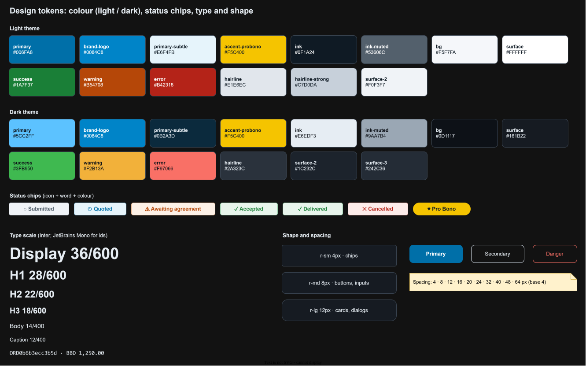
All text and component pairs below were contrast-checked (WCAG ratio in brackets).
3.1 Brand
| Token | Light | Dark | Use |
|---|---|---|---|
brand-logo |
#0084C8 |
#0084C8 |
Logo, focus ring, large accents, charts. Not for normal-size text on white (4.09:1 fails AA) |
primary |
#006FA8 (white text 5.47) |
#5CC2FF (on bg 9.57) |
Filled primary button, links, active nav, selected states |
primary-hover |
#00639A (6.46) |
#7FCBF5 (10.6) |
Hover |
primary-press |
#005A8C (7.39) |
#A9DCF8 |
Pressed |
primary-subtle |
#E6F4FB (primary text on it 5.75) |
#0B2A3D |
Selected row, info banner, soft tags |
on-primary |
#FFFFFF |
#0D1117 |
Text on primary |
accent-probono |
#F5C400 |
#F5C400 |
Pro Bono badge background; always with ink text (10.71) |
3.2 Neutrals
| Token | Light | Dark | Use |
|---|---|---|---|
bg |
#F5F7FA |
#0D1117 |
Page background |
surface |
#FFFFFF |
#161B22 |
Cards, tables, dialogs (surface level 1) |
surface-2 |
#F0F3F7 |
#1C232C |
Table header, hovered row, nested panel |
surface-3 |
#E6EBF1 |
#242C36 |
Menus, popovers (dark-mode lift instead of shadow) |
hairline |
#E1E6EC |
#2A323C |
1 px borders and dividers |
hairline-strong |
#C7D0DA |
#3A4552 |
Input borders, emphasised dividers |
ink |
#0F1A24 (17.6) |
#E6EDF3 (16.0) |
Headings and body. Never pure black |
ink-muted |
#53606C (6.45) |
#9AA7B4 (7.71) |
Secondary text, labels, captions |
ink-disabled |
#8C97A3 |
#5C6773 |
Disabled text (exempt from contrast) |
scrim |
rgba(15,26,36,.48) |
rgba(0,0,0,.6) |
Dialog backdrop |
3.3 Semantic
| Token | Light (on white) | Dark (on bg) | Subtle background L / D |
|---|---|---|---|
success |
#1A7F37 (5.08) |
#3FB950 (7.45) |
#E8F5EC / #0F2A18 |
warning |
#B54708 (5.43) |
#F2B13A (10.0) |
#FDF1E7 / #2E2209 |
error |
#B42318 (6.57) |
#F97066 (6.79) |
#FDECEA / #2D1214 |
info |
= primary |
= primary |
= primary-subtle |
3.4 Status chip colours (one mapping, used everywhere)
| Tone | Request statuses | Account statuses | Unit states |
|---|---|---|---|
| Neutral (grey) | CART, SUBMITTED |
PENDING_VERIFICATION |
stowed (available) |
| Info (blue) | QUOTING, QUOTED, APPROVED, PURCHASING, PICKING, SHIPPED |
— | reserved |
| Warning (amber), needs action | AWAITING_AGREEMENT |
PENDING_APPROVAL |
assigned |
| Success (green) | ACCEPTED, DELIVERED |
ACTIVE |
picked |
| Error (red) | DECLINED, REJECTED, CANCELLED |
REJECTED, SUSPENDED, EXPIRED |
— |
Chips have a subtle background, a toned 1 px border, toned text, an icon, and the status word in sentence case ("Awaiting agreement"). The action-needed state for the current user (e.g. a quote to accept) adds a small filled dot.
12.4 Typography
Families (open-source, self-hosted via @fontsource, no external CDN):
- Inter (variable) for all UI text. Turn on font-feature-settings: "cv11", "ss01" for clearer digits and letters, and "tnum" wherever there are numbers.
- JetBrains Mono for ids (ORD…), barcodes, serials, codes and exchange rates.
Android uses the same families, bundled as resources.
| Token | Size / line | Weight | Tracking | Use |
|---|---|---|---|---|
display |
36 / 44 | 600 | -0.5px | SHOP home hero only |
h1 |
28 / 36 | 600 | -0.3px | Page titles |
h2 |
22 / 30 | 600 | -0.2px | Section titles, request id header |
h3 |
18 / 26 | 600 | 0 | Card titles, dialog titles |
body-lg |
16 / 24 | 400 | 0 | SHOP body |
body |
14 / 22 | 400 | 0 | Default UI (SIA tables, forms) |
body-strong |
14 / 22 | 600 | 0 | Emphasis, table key column |
label |
13 / 18 | 500 | 0.1px | Form labels, chip text, tabs |
caption |
12 / 16 | 400 | 0.1px | Helper text, timestamps, meta |
overline |
11 / 16 | 600 | 0.6px, UPPERCASE | Section eyebrows (sparingly) |
mono |
13 / 20 | 400 | 0 | Ids, barcodes, serials |
money |
inherits | 500 | 0 | tnum; always with currency code: BBD 1,250.00 |
Rules: - Use sentence case everywhere, no Title Case. - Keep line length at most 72 characters for prose. - Never go below 12 px. - Don't put text in images.
12.5 Spacing, layout and density
- Base unit 4 px. Tokens:
1=4,2=8,3=12,4=16,5=20,6=24,8=32,10=40,12=48,16=64. - Density:
- SHOP: Vuetify
default(comfortable; inputs 48 px). - SIA:
compact(inputs 40 px; table rows 40 px). - Mobile: comfortable, with big scan targets.
Containers:
| SHOP | SIA | |
|---|---|---|
| Content max width | 1200 px, centred | Fluid; side nav 248 px (collapsible to 64 px) |
| Page padding | 24 px desktop / 16 px mobile | 24 px |
| Grid | 12 columns, 24 px gutter; product grid 4 → 3 → 2 → 1 | Tables full width; detail pages two columns (main 2/3, side 1/3) |
| Section gap | 48–64 px | 24 px |
Breakpoints (Vuetify): xs < 600 · sm 600–959 · md 960–1279 · lg 1280–1919 · xl ≥ 1920. Both web apps must work at 360 px width with no horizontal page scroll. Wide tables scroll inside their own card.
12.6 Shape and elevation
| Radius token | Value | Use |
|---|---|---|
r-sm |
4 px | Chips, badges, table row highlights |
r-md |
8 px | Buttons, inputs, menus, toasts |
r-lg |
12 px | Cards, dialogs, image frames |
r-full |
9999 px | Avatars and the Pro Bono badge only |
| Level | Light | Dark | Use |
|---|---|---|---|
| 0 | Flat, hairline border | Flat, hairline border | Cards and tables at rest (default) |
| 1 | 0 1px 2px rgba(15,26,36,.06), 0 1px 3px rgba(15,26,36,.08) |
surface-2 + hairline |
Hovered clickable card, sticky header |
| 2 | 0 8px 24px rgba(15,26,36,.12) |
surface-3 + hairline-strong |
Menus, popovers, toasts |
| 3 | 0 16px 48px rgba(15,26,36,.18) + scrim |
surface-3 + scrim |
Dialogs |
In dark mode, depth comes from the surface ladder, not shadows.
Focus ring: 2px solid brand-logo with a 2 px offset, on every interactive element, in both themes.
12.7 Iconography and imagery
| Item | Rule |
|---|---|
| Icons | Material Design Icons (@mdi/js, tree-shaken SVG), 20 px in SIA and 24 px in SHOP, currentColor. Icon-only buttons need an aria-label and a tooltip |
| Status icons | Neutral mdi-circle-outline · Info mdi-progress-clock · Needs action mdi-alert-circle-outline · Success mdi-check-circle-outline · Error mdi-close-circle-outline |
| Product photos | Real photos only. Background removed by media-worker onto white (#FFFFFF, also in dark mode inside the r-lg frame), 4:3, object centred with 8% padding, WebP at 320/800/full sizes. No photo → neutral placeholder with an mdi-package-variant icon, never a stock image |
| Hero image (S-01 only) | Generated with OpenArt.ai. Subject: meteorological and hydrological instruments in a Caribbean setting (e.g. an automatic weather station or radar dome under a clear sky). Style: realistic photo, natural light, calm, CIMH blues; no text, logos, people's faces or recognisable brands. Rules: no other new generated images (the legacy carousel images, radar and AWS, are reused under the legacy-structure rule; see packages/web-app/src/assets/legacy/SOURCE.md); it must not show or imply a specific product from the catalogue; check OpenArt's licence allows commercial use and keep the prompt, date and licence note in assets/hero/SOURCE.md; export WebP at 1600/800 widths, under 200 KB; alt text describes the scene |
| Logo | CIMH logo (blue on light, white on dark), min height 28 px, clear space = logo height × 0.5. Never recoloured or stretched |
| Illustrations | None. Empty states use one large icon + text + action |
12.8 Components
All components live in packages/web-ui (Vue, built on Vuetify 4) with matching Compose versions on Android.
8.1 Buttons
| Variant | Style | Use |
|---|---|---|
| Primary | Filled primary, on-primary text, r-md, height 40 (SIA) / 44 (SHOP), label 14/600 |
One per view: Submit request, Accept, Send quote, Ship |
| Secondary | Outlined, hairline-strong border, ink text |
Alternatives: Cancel, Download, Change choices |
| Tertiary | Text-only primary |
Inline links, "View all" |
| Danger | Outlined error (filled only inside the confirm dialog) |
Decline, Reject, Cancel request, Suspend |
States: hover → primary-hover; press → primary-press; disabled → 38% opacity, no pointer. While busy, a spinner replaces the label and the button keeps its width.
8.2 Inputs and forms
- Outlined fields,
r-md,hairline-strongborder →primary2 px on focus. Label above the field, never only a placeholder. Helper/error text below incaption; errors inerrorwith an icon. - Required fields marked "(required)" in the label, not with a bare asterisk.
- Money input: currency code prefix,
tnum, right-aligned. Exchange rate: mono, with a "BBD per 1 USD" suffix. - Scan input (SIA/Mobile): large, autofocused, mono, with a barcode icon. It clears after each scan, and the result chip appears beside it.
- File upload: dashed
hairline-strongdrop zone,r-lg; shows the accepted types and the 20 MB limit; one progress bar per file.
8.3 Cards, lists and tables
- Card:
surface, hairline border,r-lg, padding 24 (SHOP) / 16 (SIA). The header row holds the title (h3) and actions on the right. - Product card (SHOP): 4:3 white image frame → name (
body-strong, 2 lines max) → make · model (caption, muted) → availability chip ("In stock" success / "On request" neutral) → Pro Bono badge if any. Hover: level 1 and the image zooms to 1.02. No price. - Table (SIA): header in
surface-2,labelweight 600; rows 40 px with hairline dividers; zebra striping off; hoversurface-2; selectedprimary-subtle. Numbers right-aligned withtnum, ids in mono. A sticky header and a "load more" footer (cursor paging). - Queue row (A-02): id (mono) · customer + organisation · type badge · status chip · waiting days (amber after 3 days, red after 7) · quote expiry.
8.4 Status, badges and feedback
| Component | Spec |
|---|---|
| Status chip | §3.4; height 24, r-sm, icon 16 + label text |
| Pro Bono badge | accent-probono fill, ink text, r-full, label "Pro Bono", mdi-hand-heart-outline icon |
| Type badge | PAID → neutral outline "Paid"; PROBONO → the Pro Bono badge |
| Toast | Bottom-centre (SHOP) / bottom-right (SIA), level 2, auto-hide after 5 s (errors stay until closed), max 2 stacked |
| Banner | Full-width inline, subtle semantic background + icon, for page-level states (service unavailable, quote expiring) |
| Scan result chip | ✓ success / ✗ error, 32 px, with sound and haptics on mobile; the error text says what to do next |
| Skeleton | surface-2 blocks shaped like the content, with a shimmer (off when reduced motion is on) |
| Empty state | 48 px muted icon, h3 title, one sentence, one primary or secondary action |
8.5 Signature components
| Component | Where | Spec |
|---|---|---|
| Status timeline | S-11, A-03 | Vertical list. Each step has a dot (status tone), the status word, date/time, the actor, and the reason if any. Current step bold; future steps hollow and muted |
| Quote comparison | S-11, S-12 | Table: line · qty · CIMH stock column · Supplier column. Per line, a radio in each available option (CIMH shows a "from CIMH stock" tag). Totals row sticky at the bottom with the currency code; exchange rate shown in a caption when USD |
| Agreement stepper | S-12 | 3-step horizontal stepper (Choose → Download and sign → Upload). The current step is expanded; completed steps show a ✓ and the chosen summary |
| Request header | S-11, A-03 | Id (mono, h2) + type badge + status chip + key dates; the primary action on the right (from allowedActions) |
| Dashboard counter | A-01 | Card with label, big number (h1, tnum) and tone border-left 4 px when attention is needed. The whole card is clickable |
| Approval card | A-16 | Name, email (domain highlighted), organisation text, suggested organisation match, waiting time; Approve (primary) and Deny (danger) buttons |
Structure rule (owner, 2026-11-07): every screen keeps the structure of the matching legacy page (
legacy/shop/src,legacy/sia/src): same layout, navigation and section order. This brief supplies the modern look (tokens, type, spacing, components). Where this brief described a different layout, the legacy structure wins.
8.6 Navigation
| App | Pattern |
|---|---|
| SHOP | Legacy SHOP structure (TopAppBar, BottomNavBar, Footer): desktop top bar (72 px): logo left · Catalogue · Pro Bono · My requests centred (active = primary + underline) · theme, account menu (or Log in / Sign up) right; cart icon joins with P5. Phones: no top bar, a bottom navigation (Menu, Catalogue, Pro Bono, Requests; Menu holds Home, Profile, theme, Log in/out). Footer on every page (CIMH contact, stay connected + write to us, national met/hydro services, other resources). Sign-in pages have no top bar |
| SIA | Legacy SIA structure (AppHeader): one horizontal header (64 px): logo + "SIA" left · work areas as links (Dashboard, Products; Inventory, Pick, Stow, Orders as they ship; active = primary + 3 px bottom bar) · Admin menu (Pending accounts, Accounts, Organisations, Audit log, Settings) · theme + user menu right. Phones: a menu button opens the same links in a drawer. The page title is the page's h1 under the header (pages with their own heading set meta.ownHeading). Global scan box: added to the header with P4 |
| Mobile | Material 3 bottom navigation (Home, Lookup, Stow, Pick, Orders); offline badge on Home |
12.9 Screen look (key screens)
| Screen | Layout guidance |
|---|---|
| S-01 Home | Legacy Home structure: (1) full-width hero carousel (440–600 px), one slide per category (owner's hero image, radar, AWS; legacy images), dark gradient on the left with title, message and a white button into the catalogue; 15 s cycle, paused on hover/focus and for reduced motion; (2) logo band on the legacy gear line-art: CIMH logo + "The Instrumentation and Equipment Spares" + "Online Stores" sign-in card; (3) "Radar Spares" and (4) "Met-service Spares": centred heading + text + a sliding row of product cards + "View all". No prices |
| S-02 / S-04 Catalogue | Legacy Inventory/NCI structure: banner with the title ("Equipment and Spares" on the gear line-art; "Pro Bono Spares" on solid primary) and the search box on the right; a chip row under it (types; Pro Bono: projects) with a "Filters" menu (department, project, in stock); the product grid (cards: tall 5:6 photo tile, availability chip top-right, Pro Bono badge top-left, name, make · model, "N per pack"). Search results show on the same page (?q=; /search redirects). "Load more" (cursor) instead of page numbers |
| S-03 Product | Legacy InventoryItem structure: left (3/4) a vertical thumbnail strip beside a large photo with previous/next arrows; right (1/4) one sticky card: name (h1), make/model, availability + Pro Bono badge with its limit, "Product description", "Details" (text + specs), "N in each pack", quantity stepper and a full-width Add to request. Phones: name above the photos. No price or serials |
| S-07 / S-08 Cart → Submit | Single column, max 720 px. Paid and Pro Bono sections separated with headings, and a note that they become two requests. Submit page: address cards (selectable), currency segmented control (BBD/USD), notes, review summary, primary "Submit request" |
| S-11 Request (customer) | Request header; two columns: left = quote comparison (when quoted) / lines, documents; right = status timeline + shipping/tracking card. An "action needed" banner at the top when a quote or agreement waits |
| S-12 Choose and sign | Agreement stepper; step 1 = quote comparison with radios + live total; step 2 = agreement card with Download (secondary) and the instruction "Sign every page"; step 3 = upload drop zone + primary Accept and commit to pay |
| A-01 Dashboard | Legacy SIA Home structure: statement band on the gear line-art (greeting + "The CIMH Instrumentation and Equipment Spares"), Radar / Hydro-Met spares cards into Products, "What are you looking for today?" with a product search; then counters (accounts now; requests and quotes with P5) |
| A-05 / A-07 Products | Legacy SIA ProductsView / ProductPage: list with a grid/list view toggle (remembered per device); product page = photos and a description card (serials, make/model, text) left, an "Info" card right (stock, low-stock level, cost, units per pack, department, shown to customers, id, Deactivate), then tabs Details (edit), Images, History (admins) |
| A-02 Queue | Filter bar (chips for status, multi-select) + table §8.3; saved filter presets: "New", "To quote", "Agreements to verify", "To ship" |
| A-03 Request (staff) | Request header; main column: lines table (with CIMH availability, choice and reservation columns), documents; side column: action panel (only allowed actions, primary first), timeline, customer and organisation card |
| A-04 Quote builder | Full-width table: line · qty · CIMH option (auto-priced, a toggle to offer it) · one price column per supplier (+ add supplier) with PDF upload in the column header. Sticky footer: totals per option, exchange-rate field (USD), autosave state, primary "Send quote" |
| A-09 / A-10 / M-04 / M-07 Scanning | One big scan input at the top, the current context (shelf/request) as a card, and a running list of results (newest on top). Success/error is shown by colour and icon and sound |
| A-16 Approvals | Approval cards in a single column (oldest first), a bulk-select bar sticky at the top when items are selected |
12.10 Motion
| Use | Duration / easing |
|---|---|
| Hover, focus, colour changes | 120 ms ease-out |
| Menus, toasts, expand/collapse | 180 ms cubic-bezier(.2,0,0,1) |
| Dialogs, drawers | 240 ms enter / 180 ms exit |
| Scan feedback | Instant colour + 150 ms scale pulse |
No parallax, no scroll-triggered reveals and no autoplaying carousels. prefers-reduced-motion turns off non-essential motion and shimmer.
12.11 Accessibility
- WCAG 2.1 AA: text ≥ 4.5:1, large text and UI components ≥ 3:1. Every token pair in §3 was checked.
- Status is never shown by colour alone: there is always an icon and a word.
- Keyboard: every action is reachable, focus order follows the visual order, dialogs trap focus and return it,
Esccloses. SIA shortcuts:/focuses search,g rgoes to Requests,sfocuses the scan box. - Touch targets ≥ 44 × 44 px (mobile ≥ 48).
- Forms: labels tied to inputs, errors announced (
aria-live="polite"), and on submit the first error gets focus. - Images: product photos have alt text = the product name. Decorative icons are
aria-hidden. - Checked in CI with axe-core and by hand with NVDA and TalkBack before release.
12.12 Voice and tone
- Plain, polite, specific. Write like a helpful CIMH stores officer. Avoid jargon, internal codes and exclamation marks.
- Buttons are a verb + object: "Submit request", "Download agreement", "Send quote", "Approve account".
- Status words match §3.4 exactly in every app and email.
- Errors say what happened and what to do: "This unit is reserved for request ORD…7f2. Scan a unit for this request."
- Money always carries its currency code (
USD 1,250.00). Dates are shown as6 Nov 2026, times as14:03(Barbados). - Use "Pro Bono" (capitalised) for free items; never "NCI" in the UI.
12.13 Email design
- Single column, 600 px max, white card on
bg, CIMH logo header (blue),inktext, Inter with system fallbacks. - One primary button (
primarybg, white text,r-md) linking to the deep link in the APD §7. The full URL is also shown as text. - Includes the status chip as a coloured text label (no images needed), the request id in mono, and the key facts (total, expiry, tracking).
- Footer: "CIMH Stores", the CIMH address (from the current templates), "You're receiving this because…". A plain-text alternative is always sent.
12.14 Implementation
14.1 Vuetify 4 theme (packages/web-ui/theme.ts)
export const cimhLight = {
dark: false,
colors: {
primary: '#006FA8', 'on-primary': '#FFFFFF', secondary: '#53606C',
background: '#F5F7FA', surface: '#FFFFFF', 'surface-bright': '#FFFFFF', 'surface-variant': '#F0F3F7',
'on-surface': '#0F1A24', 'on-background': '#0F1A24',
success: '#1A7F37', warning: '#B54708', error: '#B42318', info: '#006FA8',
'brand-logo': '#0084C8', 'accent-probono': '#F5C400', 'primary-subtle': '#E6F4FB',
},
variables: { 'border-color': '#C7D0DA', 'border-opacity': 1, 'medium-emphasis-opacity': 0.72 },
}
export const cimhDark = {
dark: true,
colors: {
primary: '#5CC2FF', 'on-primary': '#0D1117', secondary: '#9AA7B4',
background: '#0D1117', surface: '#161B22', 'surface-bright': '#1C232C', 'surface-variant': '#1C232C',
'on-surface': '#E6EDF3', 'on-background': '#E6EDF3',
success: '#3FB950', warning: '#F2B13A', error: '#F97066', info: '#5CC2FF',
'brand-logo': '#0084C8', 'accent-probono': '#F5C400', 'primary-subtle': '#0B2A3D',
},
variables: { 'border-color': '#3A4552', 'border-opacity': 1, 'medium-emphasis-opacity': 0.72 },
}
// defaults: VBtn { rounded: 'md', variant: 'flat' }, VTextField/VSelect { variant: 'outlined', rounded: 'md' },
// VCard { rounded: 'lg', variant: 'outlined' }, VChip { rounded: 'sm', size: 'small' }
// SHOP density 'default'; SIA density 'compact'.
All tokens are also exported as CSS custom properties (--cimh-*) for non-Vuetify CSS and the email templates.
14.2 Android (Material 3)
Same hex values in Color.kt → lightColorScheme / darkColorScheme (primary, onPrimary, background, surface, surfaceVariant, error, plus custom success, warning, probono). Typography: Inter, mapped to Typography(bodyMedium = 14/22 …). Shapes: small 4, medium 8, large 12.
14.3 Do / Don't
| Do | Don't |
|---|---|
Use primary for the single main action and for links |
Use brand-logo blue for normal-size text on white |
| Show status as chip = icon + word + colour | Use colour alone, or invent new status colours |
| Use tabular figures and currency codes for money | Show prices on catalogue or product pages |
| Use real product photos on white | Use stock photos, illustrations, gradients |
| Keep SIA compact and SHOP comfortable | Mix densities within one app |
| Use the Pro Bono yellow only for the Pro Bono badge | Use yellow for warnings or with white text |
| Use one primary button per view | Use pill-shaped buttons or more than one filled button in a group |
12.15 Questions
| # | Question | Outcome |
|---|---|---|
| 1 | Is there an official CIMH brand guide? | Resolved: no. The colours sampled from the logo files (blue #0084C8, yellow) and the choices in this brief are the brand reference for the platform. |
| 2 | Hero image for the SHOP home page? | Resolved: generated with OpenArt.ai (see §7, "Hero image"). |
13. Data migration
Source: Data Migration Plan. Moves the real data (reference DB inventory on 172.16.0.203, ~1.8k documents + files) into v2 in a single verified cut-over.
13.1 Purpose
How existing data moves from the legacy Flask system into v2 without loss: what moves, how each field is transformed, how it is checked, the dry-run schedule, the cut-over steps and how to roll back.
13.2 Source and target
| Source (legacy) | Target (v2) | |
|---|---|---|
| Database | inventory on 172.16.0.203, standalone |
inventory on replica set rs0 (host + 2 Pis) |
| Schema | Legacy (BSD "⟲/✖" fields) | BSD §5 |
| Files | SIA/app/ on the legacy host: invoices/, uploads/, tempquotations/, productImages/, qrcodes/ |
/srv/sia-data/{protected,public} with UUID names |
| Login tokens | SQLite database.db (Tokenlist) |
Not migrated: everyone logs in again |
2.1 Source inventory (counted 2026-11-06)
| Collection | Docs | Notes |
|---|---|---|
accounts |
65 | 56 user / 6 staff / 3 admin; 9 @cimh.edu.bb; carts embedded |
product |
83 | MET 49, EQUIP 19, RAD 12, PRO 3; sellable yes 48 / no 32 / probono 3 |
storage |
697 | 484 stowed, 213 picked; no duplicate barcodes |
orders |
39 | 36 with cart, 3 with ncicart; complete 7, cancelled 1, paid 8; shipping.method free text |
history |
860 | stow 639, orderpick 189, pick 32 |
misc |
12 | departments, emails, fees, types, 2 project, 2 site, 4 location (with shelves[]) |
temp |
0 | — |
products |
0 | Empty legacy collection: dropped |
xuser |
view | Recreated (BSD §5.6) |
| Total | ~1,756 documents | Plus files on disk (to be counted in dry run 1) |
13.3 Strategy
One-time cut-over in a short maintenance window, not a long parallel run.
| Option | Verdict |
|---|---|
| Run legacy and v2 in parallel on two databases with continuous sync | Rejected: the legacy app writes the old schema; two-way sync for status, carts and stock is complex and error-prone for ~1.8k documents |
| Point legacy Flask at the new schema | Rejected: would need rewriting legacy code |
| Freeze → migrate → verify → switch → keep legacy read-only for rollback | Chosen: small data (minutes to migrate), clean rollback, one source of truth at all times |
Consequence for TAD §9.5 (strangler): the front-end/route switch can still be staged during testing on staging, but production data moves once; at cut-over all /api/* routes go to v2 together, and /sia/api/* is switched off (read-only fallback kept for 30 days).
Legacy (live) ──freeze──► final dump ──► migrate (scripts) ──► verify ──► go / no-go
│
go ──► switch nginx to v2 ──► smoke tests ──► open
no-go ──► unfreeze legacy (nothing lost)
13.4 Tooling
| Item | Design |
|---|---|
| Runner | tools/migrate/ Python package, run as a one-off container (docker compose run migrate …) |
| Steps | Ordered, idempotent scripts m001_…py … each with plan() (dry-run report), apply(), verify() |
| Modes | --dry-run (read source, write a report + would-be documents to a scratch DB) · --apply (write target) · --verify |
| Credentials | Source: read-only user svc_migrate_ro on 172.16.0.203 (create it; do not use cimhAdmin). Target: svc_migrate (readWrite on inventory), disabled after sign-off |
| Reports | reports/migration/<run-id>/: counts, mapping table of every free-text value, warnings, PII-free (ids only) |
| Validators | Target $jsonSchema at moderate/warn during apply (BSD §7), switched to strict after verify |
| Re-runnable | Target is wiped and rebuilt from the dump on every run until sign-off; never mutates the source |
13.5 Mapping by collection
Field-level targets are in the BSD. Order of execution follows dependencies.
M01 misc (→ catalog reference data)
| Legacy | v2 |
|---|---|
id:"departments" |
kind:"departments", values[] |
id:"types" (dict) |
kind:"types", values:[{key: MET…, label}] (key = product code) |
id:"project" (2 docs) |
one kind:"projects" doc each: id:"project:<code>", code, name, active:true |
id:"fees" |
kind:"fees"; fee int → Money (BBD) |
id:"emails" (registration/order/invoice/cancellation[]) |
kind:"emailLists"; members keep account → accountId; add empty lowStock[] |
| site docs (2) | kind:"site", id=barcode, name, country, address, active:true |
location docs (4) with shelves[] |
kind:"location" (4 docs) + one kind:"shelf" doc per array entry (barcode, number (Int64→int), site, location) |
| — | kind:"settings" with defaults (30 / 3 / 48 / 90 / 180) · kind:"counter" product = max(product.number) |
M02 organisations (new) and accounts
- Organisations are created from distinct values found in
orders.shipto.organization/billedto.organizationand account data, normalised (trim, case-fold), reviewed by an admin in the dry-run report (merge duplicates, set country). CIMH itself becomes an organisation for@cimh.edu.bbaccounts. - Accounts:
| Legacy | v2 |
|---|---|
id, email (lower-cased), firstname, lastname, role, department, image |
same |
password (Werkzeug hash) |
legacyPasswordHash; passwordHash empty until first login (TRD TR-AUTH-7 upgrade) |
emailconfirmed:true, registered |
verifiedAt = registered parsed (fallback timestamp) |
| — | status: ACTIVE (all 65); isCimh from email domain; organisationId from step 1 (customers without a match → listed for admin to assign before go-live) |
address[] |
addresses[] (structured where parseable; else line1 = original text) |
site/sitename/location/locationname/shelf/shelfnumber |
defaults{site,location,shelf} (staff/admin only; dropped for customers) |
cart[] |
→ M06 carts; removed from account |
timestamp |
createdAt |
| — | statusHistory:[{to:"ACTIVE", by:"svc:migrate", at:<cut-over>, reason:"Migrated from legacy"}], failedLogins:{count:0}, outbox:[], version:1 |
M03 product
| Legacy | v2 |
|---|---|
sellable:"yes" |
sellable:true, probono:false |
sellable:"no" |
sellable:false, probono:false |
sellable:"probono" |
sellable:true, probono:true (3 products) |
cost float |
Money Decimal128 (2 dp, BBD) |
images[] (file names) |
images[]{fileId,url,w,h,primary}: files copied by M08; first = primary |
keywords[] |
lower-cased, de-duplicated |
| other fields | unchanged; add active:true, inStock (computed from storage), createdAt/updatedAt = cut-over, outbox:[], version:1 |
M04 storage
Unchanged fields + assignedTo (mapped from legacy self-stow data: units stowed to a person rather than a shelf become assignedTo: <accountId> and stowed: false; the exact field rule is listed in the DR-1 report), updatedAt. reservedFor/reservedAt are left absent (= free). Indexes rebuilt per BSD §5.8 (barcode unique).
Then build stock (BSD §5.11): one document per product with productName, type, threshold, active from product, counts computed from the migrated storage, low, outbox: [] (no events at cut-over). Check: for every product, available + reserved = stowed, unpicked units.
M05 history
Legacy operation |
v2 |
|---|---|
stow |
stow |
pick |
pick |
orderpick |
pick + orderId (from the matching orders.cart[].picked / ncicart[].picked entry by barcode and date) |
M06 Carts (from accounts.cart)
Each non-empty accounts.cart → one orders document id: CRT…, status: CART, customer, lines[]{productId, qty: count} (product snapshots not copied from the legacy cart; rebuilt from product). Lines for inactive/unknown products are dropped and listed in the report.
M07 orders (requests)
| Legacy | v2 |
|---|---|
cart[] and ncicart[] both non-empty |
Split: original id keeps the PAID lines (type: PAID); new id ORD<hex> for the Pro Bono lines (type: PROBONO); both get a history note linking the sibling |
only cart[] |
type: PAID |
only ncicart[] |
type: PROBONO |
cart[]/ncicart[] {id, count, picked[]} |
lines[]{lineId, productId: id, qty: count, picked[]} + product snapshot from product; legacy cart[].cost kept as legacy.lineCost |
complete:true |
status: DELIVERED |
cancelled:true |
status: CANCELLED (cancellation.reason:"Cancelled in legacy system") |
| otherwise | status: SUBMITTED (decision); legacy.paid kept for staff reference |
customer |
same; customerSnapshot from legacy firstname/lastname + account email |
| — | organisationId from the customer's account (M02) |
ordered |
submittedAt, createdAt |
shipto / billedto |
shipTo / billTo (organization → organisation, office → attention) |
shipping.method free text |
"FedEx" → FEDEX · "DHL" → DHL · "Hand delivered…" → HAND (+ note = original text) · empty → no shipping · other → HAND + note, listed in report |
shipping.tracking/cost/date |
tracking, cost (Money), date (string dates parsed; unparseable → report) |
shipping.cost1, total, shippingestimate |
legacy.shippingCost1, legacy.total, legacy.shippingEstimate (read-only) |
invoice{number…, date} |
invoice (date string → Date) |
files[]{file,name,type} |
files[]{id, kind, name, mime, size, sha256, path}: file copied by M08; type mapped to kind (inv→invoice, ci→commercial_invoice, other→upload) |
| — | currency: "BBD" for PAID (legacy prices are BBD), null for PROBONO; version:1; history:[{to:<status>, by:"svc:migrate", reason:"Migrated from legacy"}]; outbox:[] |
Legacy orders have no quotes or agreements. SUBMITTED paid orders will be quoted in v2 normally (customers notified, see §9).
M08 Files
| Source | Target | Rule |
|---|---|---|
SIA/app/productImages/* |
public/products/<productId>/<uuid>.webp (+@800, @320) |
Re-encoded through the media pipeline (EXIF stripped) |
SIA/app/invoices/*.pdf, uploads/*, tempquotations/* referenced by orders.files[] or by order id in the file name |
protected/orders/<orderId>/<uuid>.pdf |
SHA-256 recorded; ClamAV scan first; unreferenced files listed (not migrated unless an admin says so) |
SIA/app/qrcodes/* |
— | Not migrated: regenerated from shelf/site barcodes |
database.db, Spares.db, logs |
— | Not migrated; archived with the legacy backup |
M09 Indexes, views, validators
Create every index in BSD §5 (incl. unique accounts.email, storage.barcode, cart partial index, text index); recreate xuser view (BSD §5.6); apply validators (moderate → strict after verify); drop products.
13.6 Verification (automated, every run)
| Check | Rule |
|---|---|
| Counts | accounts 65 → 65; product 83 → 83; storage 697 → 697; history 860 → 860; orders 39 → 39 + (number of split orders, expected 0–3) requests + carts = non-empty legacy carts; misc 12 → 12 − 4 locations-with-arrays + 4 locations + N shelves + settings + counter |
| Sums | Σ line qty per legacy order = Σ v2 line qty (incl. split sibling); count of picked units unchanged; stowed/picked unit counts unchanged (484/213) |
| References | every storage.product exists in product; every orders.customer exists in accounts; every orders.lines.productId exists; every files[].id has a file on disk with matching SHA-256; every non-CIMH ACTIVE customer has organisationId |
| Schema | 0 validator warnings on all collections before switching to strict |
| Enumerations | status, type, carrier, sellable/probono only take allowed values |
| Uniqueness | accounts.email, storage.barcode, one CART per customer |
| Spot checks (manual) | 10 random orders, 10 products, 10 units, 5 accounts compared side by side legacy UI vs v2 UI by a staff member |
| Login | Test accounts (one per role) log in with their existing password (legacy hash → Argon2id upgrade works) |
Go/no-go requires all automated checks green and the manual spot-check signed off.
13.7 Dry runs
| Run | When | Environment | Goal | Exit criteria |
|---|---|---|---|---|
| DR-1 | When M01–M09 first complete | Local / CI against a dump | Scripts run end-to-end; report reviewed | All scripts succeed; report lists every free-text mapping |
| DR-2 | After organisation review and fixes | Staging (main host, sia-staging) |
Full rehearsal incl. files and ClamAV; v2 UI checks | All checks green; spot-check signed; timing measured |
| DR-3 | ≤ 7 days before cut-over | Staging, fresh dump | Final rehearsal with the exact runbook (§8) | Duration ≤ 45 min; zero manual fixes needed |
DR-1 result (2026-11-10): pass. bash tools/migrate/dr1.sh db converts the export (M01–M07 + stock), loads it into a throwaway MongoDB 8.0.30 replica set, runs M09 with the services' own index code and xuser view, and runs every automated check in §6 in 10 s: 34 pass, 0 fail, 1 warning (after the validator fix below).
| Area | Result |
|---|---|
| Counts | accounts 65 → 59 (6 duplicate-email accounts merged); product 83, storage 697, history 860 unchanged; 39 orders → 39 requests (0 split: no legacy order mixed paid and Pro Bono lines) + 9 carts; 83 stock docs |
| Sums | unit states unchanged (484 stowed, 213 picked; no self-stowed units, so 0 assignedTo); line quantities 39/39 orders, 185 → 185 |
| References, enumerations, uniqueness | all pass |
| Mapping table | every free-text decision: country text → ISO (12 spellings), order state → status, sellable → booleans, shipping method → carrier (11 values), organisation text → organisation (24). Values that can hold names (shipping method, organisation text) are summarised in report.json; the full table is in mappings.local.json next to the export (git-ignored) |
| Warning | 29 active customers without an organisation: admins assign them before DR-2 (§9) |
| Validators | found missing in every service (first run); built the same day (BSD §7). Rerun: every migrated document satisfies its collection's validator (8 collections, 0 invalid); totals now 34 pass, 1 warning |
| Not covered by DR-1 | M08 files (checked by files_to_v2.py on its own output; 66 order uploads missing from the export), logins with existing passwords (need known passwords: DR-2), manual spot-check |
Each dry run produces a Migration Dry-run Report (Documentation Index #19).
13.8 Cut-over runbook (production)
Window: a weekday after 17:00 Barbados time, 2 hours reserved (expected ~45 min). Customers and staff notified 5 working days ahead.
| T | Step | Owner |
|---|---|---|
| T-5 d | Announce maintenance window (email to all ACTIVE accounts + SHOP banner) | Admin |
| T-1 d | v2 production stack deployed and healthy with an empty database; DR-3 signed | Tech lead |
| T-0:00 | Enable maintenance mode on legacy nginx (SHOP/SIA show a maintenance page; /sia/api returns 503) |
Ops |
| T-0:05 | Stop Flask (gunicorn); confirm no writes (db.currentOp(), last history.date) |
Ops |
| T-0:10 | mongodump of source (read-only user) + copy legacy file folders; checksum both |
Ops |
| T-0:20 | Run migrate --apply (M01–M09) into production rs0 |
Tech lead |
| T-0:35 | Run migrate --verify; review report |
Tech lead |
| T-0:45 | Manual spot-check (staff member) + role logins | Staff + admin |
| T-0:55 | Go / no-go decision | Owner |
| T-1:00 | Switch nginx to v2 (/api/*, new SHOP/SIA builds); remove legacy routes; enable validators strict |
Ops |
| T-1:05 | Smoke tests: login per role, browse, submit test request (then cancel), stow/pick a test unit, download a migrated invoice | QA |
| T-1:15 | Lift maintenance; post "We've upgraded" notice | Admin |
| T+1 h | Watch alerts (errors, logins, 403/404), keep legacy read-only VM/containers stopped but intact | Ops |
13.9 Communication
| Audience | Message | When |
|---|---|---|
| All accounts | Maintenance window; afterwards log in again (same password); new look | T-5 d and T+0 |
| Customers with SUBMITTED paid orders | Your request will now receive a formal quote; you'll accept by signing an agreement | T+1 d |
| Staff | Training on SIA v2 + mobile app update (install from internal distribution) before T-0 | T-7 d |
| Admins | Review the organisation list and unassigned customers (dry-run report) | Before DR-2 |
13.10 Rollback
| Situation | Action | Data loss |
|---|---|---|
| No-go at T-0:55 | Discard target DB; restart Flask; remove maintenance mode | None (source never modified) |
| Critical defect within 48 h after go-live | Put v2 in maintenance; export v2 changes made since cut-over (new accounts, requests, scans, from auditlog/history/orders by createdAt ≥ cut-over) to a CSV report; restart legacy from its untouched DB; staff re-key the exported changes in legacy |
Only re-keying effort; nothing lost |
| After 48 h | Fix forward (no rollback) | — |
Legacy database and files are kept read-only for 30 days, then archived (encrypted, restic) and the legacy server decommissioned.
13.11 Risks
| # | Risk | Mitigation |
|---|---|---|
| MR1 | Free-text values (organisations, shipping method, dates, addresses) mapped wrongly | Every distinct value listed in the dry-run report and reviewed before DR-2 |
| MR2 | Customers without a clear organisation block go-live (ACTIVE requires organisationId) |
Admin review before DR-2; fallback organisation "Unassigned (review)" is not allowed, so list must be complete |
| MR3 | Legacy password hashes not verifiable in v2 | Test with real staff accounts in DR-2; fallback: forced password reset email |
| MR4 | Missing or orphaned files on the legacy server | File inventory in DR-1; missing files reported per order; unreferenced files reviewed |
| MR5 | Writes during the freeze (cron jobs, mobile app queue) | Stop Flask entirely; mobile app v1 shows maintenance (503); verify last write time |
| MR6 | Legacy currency | Resolved: BBD |
13.12 Questions
| # | Question | Outcome |
|---|---|---|
| 1 | Are legacy order amounts in BBD? | Resolved: yes. Paid orders get currency: "BBD". |
| 2 | Status of the 8 orders marked paid: true but not complete? |
Resolved: SUBMITTED (with legacy.paid kept for staff). |
| 3 | Where are the legacy files? | Resolved: in SIA/app/ (invoices/, uploads/, tempquotations/, productImages/, qrcodes/) on the legacy host. |
| 4 | Can self-stow data be mapped to assignedTo? |
Resolved: yes. M04 maps it (rule confirmed in DR-1). |
14. Infrastructure and environments
Source: Infrastructure and Environment Plan. Machines, VLAN and firewall, Compose services with resource limits, platform configuration, secrets, backups, environments and first-build checklist.
14.1 Purpose
Specifies the machines, networks, containers and environments the platform runs on, so DevOps can build, rebuild and scale it the same way every time. Everything here lives as code in deploy/ (Compose files, configs, scripts); this document explains it.
14.2 Machines
| Name | Role | Hardware | OS | Notes |
|---|---|---|---|---|
sia-host |
Application host + MongoDB primary + staging | 16 cores · 32 GB RAM (upgrade to 64 GB strongly recommended) · 2 × 6 GB NVIDIA GPU · 2 × 2 TB NVMe RAID 1 · 1 Gbps NIC | Ubuntu Server LTS (latest) | NVIDIA driver + NVIDIA Container Toolkit; Docker Engine + Compose |
sia-pi-a |
MongoDB secondary | Raspberry Pi 5 · 8 GB (16 GB recommended) · 1 TB NVMe (M.2 HAT) · active cooler · 27 W PSU | Ubuntu Server LTS arm64 | LUKS on the NVMe; boots from NVMe |
sia-pi-b |
MongoDB secondary + backup runner | Same as Pi A | Same | Runs nightly backups |
| UPS | Power | ≥ 15 min for all three + switch | — | USB/network signal → nut shuts machines down cleanly |
| Backup target | Off-site copy | Storage at another CIMH site (≥ 3 TB) | — | restic repository over SFTP/REST |
2.1 Base OS setup (all three machines, scripted in deploy/bootstrap/)
- Unattended security updates (reboots in the maintenance window);
chronytime sync (replica set and tokens need correct time). - SSH: keys only, no root login,
AllowUsersops accounts, fail2ban. - Users:
ops(sudo),deploy(indockergroup; runs the self-hosted GitHub Actions runner service, which may only executedeploy/scripts/*; the runner is limited to thecimh/storesrepository and to thestaging/productionenvironments; build and test jobs run on GitHub-hosted runners, only deploy jobs run here). - Host firewall:
ufwdefault deny inbound (rules in §3.3). - Docker daemon:
live-restore, log driverlocal(max-size 50m, max-file 10), userns-remap where compatible. - Disk: LUKS full-disk on the Pis (TR-SEC-10); key unlock via a TPM-less keyfile on a USB token or manual unlock after reboot (decision §11); data on
/srv. - Host directories:
/srv/sia-data(files),/srv/mongo,/srv/kafka/{1,2,3},/srv/redis,/srv/prometheus,/srv/backup-cache, all0750.
14.3 Network
3.1 Addressing (dedicated VLAN, TR-SEC-12)
| Host | VLAN IP (to be assigned by CIMH IT) | DNS name |
|---|---|---|
sia-host |
10.x.y.10 |
sia-host.cimh.local |
sia-pi-a |
10.x.y.11 |
sia-pi-a.cimh.local |
sia-pi-b |
10.x.y.12 |
sia-pi-b.cimh.local |
Replica-set members are addressed by DNS name (sia-host:27017, …) so IPs can change without reconfiguring MongoDB. The host also has an interface (or routed path) reachable from the CIMH LAN/Internet for ports 80/443 only.
3.2 Public names and TLS
| Name | Points to | Certificate |
|---|---|---|
store.cimh.edu.bb |
sia-host 443 |
Let's Encrypt (certbot, HTTP-01, auto-renew) |
sia.cimh.edu.bb |
sia-host 443 |
Let's Encrypt |
staging-store.cimh.edu.bb, staging-sia.cimh.edu.bb |
sia-host 443 (separate server blocks) |
Let's Encrypt; access limited to the CIMH LAN (nginx allow/deny) |
Internal TLS (MongoDB replication, Kafka, Redis): a small private CA (deploy/pki/, step-ca or openssl scripts) issues certificates for sia-host, sia-pi-a, sia-pi-b and service clients; 1-year validity, renewal reminder alert at 30 days.
3.3 Firewall rules
Kafka (9092/9093), Redis (6379), Prometheus (9090), Alertmanager (9093) and all service ports are only on Docker networks, never published.
14.4 Compose layout
deploy/
compose.prod.yml # sia-host production (project: sia-prod)
compose.staging.yml # sia-host staging (project: sia-staging)
compose.dev.yml # developer laptops
compose.pi.yml # sia-pi-a / sia-pi-b (project: sia-db-a / sia-db-b; env selects role)
env/ # non-secret settings per environment (*.env)
secrets/ # NOT in git; created by bootstrap from the password manager
nginx/ # nginx.conf, sites/, snippets/ (security headers, rate limits, X-Accel)
mongo/ # mongod.conf, init-replset.js, roles.js (custom per-service roles)
kafka/ # server.properties template, topics.yaml, acls.yaml
redis/ # redis.conf, users.acl
prometheus/ # prometheus.yml, rules/*.yml, alertmanager.yml.tmpl (scripts/render-config.sh → alertmanager.rendered.yml)
pki/ # private CA scripts
scripts/ # deploy.sh, migrate.sh, backup.sh, restore.sh, rotate-secret.sh
bootstrap/ # host setup (ansible playbook or shell)
4.1 Production services (compose.prod.yml on sia-host)
Every service: restart: unless-stopped, read_only: true (+ tmpfs: /tmp), user: 10001, cap_drop: [ALL], security_opt: [no-new-privileges:true], healthcheck on /health/ready, logging local (TR-SEC-8).
| Service | Image | Replicas | CPUs | mem_limit | Networks | Volumes / notes |
|---|---|---|---|---|---|---|
| nginx | nginx (pinned) |
1 | 1.0 | 256 MB | edge, app | certs, /srv/sia-data/public (ro), /srv/sia-data/protected (ro, internal location), SPA builds |
| certbot | certbot/certbot |
1 (cron loop) | 0.1 | 64 MB | edge | certs |
| identity-svc | ghcr.io/cimh/identity-svc@sha256:… |
2 | 0.5 | 256 MB | app, data | — |
| catalog-svc | …/catalog-svc |
2 | 0.5 | 256 MB | app, data | — |
| inventory-svc | …/inventory-svc |
2 | 0.5 | 256 MB | app, data | — |
| order-svc | …/order-svc |
2 | 0.5 | 256 MB | app, data | — |
| document-svc | …/document-svc |
2 | 1.0 | 384 MB | app, data | /srv/sia-data/protected (rw) |
| notification-svc | …/notification-svc |
2 | 0.25 | 256 MB | data | SMTP egress |
| outbox-relay-* | …/outbox-relay (one per service) |
1 each (6) | 0.1 | 64 MB | data | leader lock in Redis |
| media-worker | …/media-worker |
2 (GPU 0, GPU 1) | 2.0 | 1 GB | data | /srv/sia-data/public (rw); deploy.resources.reservations.devices GPU |
| clamav | clamav/clamav |
1 | 1.0 | 1.5 GB | data | signature volume; freshclam daily |
| kafka1–3 | apache/kafka (KRaft) |
3 | 1.0 each | 1.5 GB each (heap 1 GB) | data | /srv/kafka/n |
| apicurio | apicurio/apicurio-registry |
1 | 0.5 | 512 MB | data | stores schemas in Kafka (kafkasql) |
| redis | redis |
1 | 0.5 | 512 MB (maxmemory 384mb, allkeys-lru off → noeviction for revocations) |
data | /srv/redis (AOF) |
| mongo1 | mongo |
1 | 4.0 | 8 GB (wiredTigerCacheSizeGB: 6) |
data | /srv/mongo; port 27017 bound to the VLAN IP only |
| prometheus | prom/prometheus |
1 | 0.5 | 1.5 GB | data, app | /srv/prometheus (retention 30 d) |
| alertmanager | prom/alertmanager |
1 | 0.1 | 128 MB | data | SMTP (Gmail) via render-config.sh |
| exporters | node, mongodb (percona/mongodb_exporter in a busybox wrapper, user svc_monitor: clusterMonitor), kafka (danielqsj/kafka-exporter, SCRAM user exporter: Describe only), redis (oliver006/redis_exporter, ACL user exporter) |
1 each | 0.1 | 64 MB each (redis 32 MB) | data | node-exporter uses host network/pid read-only; each runs as the uid that owns its secret file |
| Total limits | ≈ 22.9 GB + OS/Docker ≈ 2 GB = ≈ 25 GB | matches TRD §6.3 |
4.2 Docker networks
| Network | Driver / options | Members |
|---|---|---|
edge |
bridge | nginx, certbot; ports 80/443 published |
app |
bridge, internal: true |
nginx, HTTP services, prometheus |
data |
bridge, internal: true |
services, relays, workers, mongo1, kafka, redis, clamav, apicurio, prometheus, exporters |
mongo1 additionally publishes 10.x.y.10:27017 (VLAN interface only) for replication with the Pis.
4.3 Staging (compose.staging.yml, project sia-staging, same host)
1 replica per service; 1 Kafka broker; single-node replica set (its own mongo-staging, port not published); no media-worker GPU (CPU fallback); ClamAV is a mock unless uploads are being tested (then its own small instance); memory ≈ 4–6 GB total. Started on demand (docker compose -p sia-staging up -d) and stopped otherwise (TRD §6.3). Data: anonymised copy of production (script masks names, emails, phones, addresses).
4.4 Pis (compose.pi.yml)
| Service | Limits | Notes |
|---|---|---|
| mongo (mongo2 / mongo3) | 6 GB, wiredTigerCacheSizeGB: 3 |
arm64 image; port 27017 on VLAN IP; data on LUKS NVMe |
| node-exporter | 64 MB | |
| backup (Pi B only) | 512 MB | mongodump --readPreference=secondary + restic; cron 02:00 |
14.5 Platform configuration
5.1 MongoDB replica set
// deploy/mongo/init-replset.js (run once on sia-host)
rs.initiate({
_id: "rs0",
members: [
{ _id: 0, host: "sia-host.cimh.local:27017", priority: 10 },
{ _id: 1, host: "sia-pi-a.cimh.local:27017", priority: 1 },
{ _id: 2, host: "sia-pi-b.cimh.local:27017", priority: 1 }
],
settings: { electionTimeoutMillis: 10000 }
})
mongod.conf:net.tls.mode: requireTLS(private CA),security.authorization: enabled,security.clusterAuthMode: x509(or keyfile),replication.replSetName: rs0.- Users and custom roles from
deploy/mongo/roles.js:svc_identity,svc_catalog,svc_inventory,svc_order(collection-scoped, BSD §3.1),svc_backup(backup),svc_migrate(temporary),admin_ops. - Connection string (services):
mongodb://svc_x:<secret>@sia-host.cimh.local,sia-pi-a.cimh.local,sia-pi-b.cimh.local/inventory?replicaSet=rs0&tls=true&w=majority&retryWrites=true&maxPoolSize=50.
5.2 Kafka (KRaft, 3 brokers)
- Combined controller+broker nodes,
KAFKA_PROCESS_ROLES=broker,controller, cluster id generated once. - Listeners:
SASL_SSLinternal on thedatanetwork only; SCRAM-SHA-512 principals per service (TR-SEC-7). - Defaults:
default.replication.factor=3,min.insync.replicas=2,auto.create.topics.enable=false,log.retention.hours=168. topics.yaml(TAD §5.3 partitions/retention, compaction foridentity.user.events,catalog.product.events) andacls.yaml(producer = owning service only; consumer groups per service), applied by an idempotentkafka-setupjob on deploy.
5.3 Redis
appendonly yes,appendfsync everysec,maxmemory 384mb,maxmemory-policy noeviction(revocation data must not be evicted).- ACL users per service (
users.acl),defaultuser disabled; key prefixes per service (id:,ord:…) enforced by ACL patterns.
5.4 nginx
- Sites:
store,sia,staging-*; snippets:security-headers.conf(CSP, HSTS, etc.),rate-limits.conf(TRD TR-SEC-5),api-upstreams.conf(Docker DNSresolver 127.0.0.11 valid=10s),protected-files.conf(location /_protected/ { internal; alias /srv/sia-data/protected/; }). - Caching: hashed SPA assets
immutable1 y;index.htmlno-cache;/media/products/30 d.
5.5 ClamAV
clamd container on data; document-svc streams uploads via INSTREAM; freshclam daily; alert if signatures older than 48 h. Uploads fail closed (503) while clamd is down. Staging-lite runs without ClamAV (SCAN_ENABLED=false, not enough memory on the shared box).
14.6 Secrets and configuration
| Kind | Mechanism |
|---|---|
| Secrets (passwords, keys, tokens) | Docker secrets (files under deploy/secrets/, 0400, owned by root), mounted at /run/secrets/*; services read *_FILE env vars |
| Non-secret config | deploy/env/<env>.env committed (URLs, feature flags, limits) |
| Source of record | CIMH password manager (vault entry per secret), restored by bootstrap |
| Rotation | deploy/scripts/rotate-secret.sh <name> (writes new secret, rolling restart, verifies health); schedule in SECURITY §7 |
14.7 Backups and restore
| What | How | When | Retention |
|---|---|---|---|
| MongoDB | mongodump --oplog from Pi B (secondary) → restic |
Nightly 02:00 | 30 daily + 12 monthly |
Files /srv/sia-data |
restic from sia-host (incremental) | Nightly 02:30 | Same |
Configs deploy/ + secrets |
Git (configs); encrypted secrets export → restic | On change + nightly | Same |
| Restore test | deploy/scripts/restore.sh into staging; checks counts and opens sample files |
Quarterly (logged) | — |
Alerts: backup age > 26 h; restic check failure; repository size growth > 20 %/week.
Restores run mongorestore --bypassDocumentValidation: the dump re-creates each collection with its BSD §7 validator, which would otherwise silently drop older documents that predate a schema change (found by the P9 rehearsal).
14.8 Monitoring endpoints
Prometheus scrapes: services /metrics (incl. outbox_pending_events / outbox_oldest_event_age_seconds, computed by each owning service at scrape time so a stopped relay still shows), node-exporters (host, Pis), mongodb-exporter (replica set health, lag), kafka-exporter (consumer lag), redis-exporter, nginx stub_status (via exporter), clamav (signature age via a small textfile exporter). Alert rules: TRD TR-OBS-3 + SECURITY §9. Prometheus UI reachable only from the CIMH LAN through nginx (/ops/prometheus, admin basic-auth + IP allow-list).
14.9 Environments
| Local | CI | Staging | Production | |
|---|---|---|---|---|
| Where | Developer machine | GitHub Actions runners | sia-host (sia-staging) |
sia-host + Pis |
| Compose | compose.dev.yml |
testcontainers | compose.staging.yml |
compose.prod.yml + compose.pi.yml |
| MongoDB | single-node RS | per-test container | single-node RS | 3-member RS |
| Kafka | 1 broker, no SASL | container | 1 broker, SASL | 3 brokers, SASL+ACL |
| Data | seed script (fake) | fixtures | anonymised prod copy | live |
| TLS | self-signed | — | Let's Encrypt (LAN only) | Let's Encrypt |
| Mailpit (captures) | mock | Mailpit | Gmail SMTP (smtp.gmail.com:587) | |
| GPU | optional | none | none (CPU) | 2 GPUs |
| Deploy | manual | — | auto on merge to main (self-hosted runner) |
manual approval (GitHub environment), run by the self-hosted runner |
14.10 Provisioning checklist (first build)
- CIMH IT: VLAN, three IPs, DNS (
*.cimh.local, publicstore/sia), firewall rules §3.3, UPS wiring. - Install OS on all three; run
bootstrap(users, SSH, ufw, Docker, chrony, unattended upgrades, fail2ban; LUKS on Pis). - Host: NVIDIA driver + Container Toolkit; verify
docker run --gpus all nvidia/cuda… nvidia-smi. - Create private CA; issue MongoDB/Kafka/Redis certs; load secrets from the password manager into
deploy/secrets/. - Start Pis (
compose.pi.yml), then mongo1; runinit-replset.jsandroles.js; checkrs.status()(1 primary, 2 secondaries). - Start Kafka, run
kafka-setup(topics + ACLs); start Redis, Apicurio, ClamAV. - Start services and nginx; obtain Let's Encrypt certs; smoke test
/health/readyeverywhere. - Prometheus/Alertmanager up (
provision.shrunsscripts/render-config.sh prodfirst:ALERT_EMAIL_TO,SMTP_HOST,SMTP_USERfromenv/prod.env); send a test alert email. After changing those settings:scripts/render-config.sh prod && docker compose -f compose.prod.yml up -d alertmanager. - Configure backups on Pi B; run the first backup and a restore into staging.
- Hand over to the migration (Migration Plan DR-1).
14.11 Scaling, capacity and maintenance
| Topic | Plan |
|---|---|
| Scale a service | docker compose -p sia-prod up -d --scale order-svc=4 (check memory budget first) |
| Memory headroom | At 32 GB there is no headroom for extra replicas; the 64 GB upgrade doubles service capacity |
| Disk | Alert at 80 %; Kafka and Prometheus retention are the main levers; files grow ~1.5 TB/year at full scale, so plan disk expansion at 60 % |
| Patching | Monthly window (2nd Tuesday 18:00): OS updates, image rebuilds; Pis first, then a primary step-down (rs.stepDown()), patch host, step back |
| Certificates | Let's Encrypt auto-renew (alert < 14 d); private CA renew yearly (alert < 30 d) |
| Kafka/Mongo upgrades | Rolling, one node at a time, health-checked |
14.12 Disaster recovery
| Scenario | Effect | Recovery |
|---|---|---|
| One Pi fails | None for users (majority intact) | Replace/re-image; rejoin RS (initial sync) |
| Host fails | Platform down; data safe on Pis | Repair or rebuild host from bootstrap + deploy/; restore /srv/sia-data from restic; mongo1 rejoins and catches up; RTO 4 h |
| Host + Pis lost | Total loss | New hardware; restore MongoDB dump + files from the other CIMH site; RPO 24 h, RTO 4 h (+ hardware) |
| Ransomware / corruption | Data unusable | Restore from restic (append-only, so it can't be encrypted by the attacker) to the last good snapshot |
Detailed steps go in the Backup and Disaster Recovery Plan (Documentation Index #23).
14.12a Decisions
- Pis unlock LUKS manually after a reboot (ops enters the passphrase over SSH via
dropbear-initramfs). Confirmed. Consequence: after a power cut, ops must unlock both Pis; with only the host up, the replica set has no majority, so no primary and no writes at all (the platform is effectively down) until at least one Pi is unlocked, so this is in the Operations Run Book and a reboot alert pages ops. - Staging has its own small ClamAV only while testing uploads; otherwise uploads in staging use a ClamAV mock.
14.13 Open questions
| # | Question | Outcome |
|---|---|---|
| 1 | VLAN id, IP range and DNS zone | Resolved: CIMH IT provides them before deployment (provisioning checklist step 1 is a gate). |
| 2 | How does CI reach the host? | Resolved: self-hosted GitHub Actions runner on sia-host (outbound-only; deploy jobs only). |
| 3 | Pi LUKS unlock after reboot? | Resolved: manual passphrase (§12a). |
| 4 | Will the host be upgraded to 64 GB before go-live? | Open: undecided. The plan works at 32 GB with the limits in §4.1 and no spare replicas; decide by migration rehearsal DR-2, after load tests show real usage. P3 input (Testing chapter, phase checks): one catalog-svc container saturates its 0.5 CPU at ~145 req/s, so the full browse target needs ~6 replicas (+1 GB) or more CPU per replica. |
14.14 Implementation status (P1 code, 2026-11-07)
Everything in §4–§7 and §10 steps 4–9 exists as code in deploy/; only the hardware and network steps (1–3) are left.
| Piece | File(s) |
|---|---|
| Private CA, server/client certs (PKCS#8 for Kafka; CA keyUsage + leaf AKI for Python 3.13 strict verification) | deploy/pki/make-certs.sh |
All Docker secrets, incl. connection URLs as secrets (MONGO_URL_FILE, REDIS_URL_FILE) |
deploy/scripts/make-secrets.sh |
| Replica set: TLS required, keyfile, SCRAM-SHA-256; init and per-service roles | deploy/mongo/mongod.conf, init-replset.js, roles.js |
| Redis ACL per service (key patterns from the code), default user off | deploy/redis/redis.conf, render-acl.sh |
| Kafka ×3 KRaft: CLIENT = SASL_SSL/SCRAM-SHA-512, INTERNAL and CONTROLLER = mTLS, StandardAuthorizer, no ACL = deny | compose.prod.yml, deploy/kafka/setup.sh |
Pis and nightly backup (mongodump --oplog from the secondary → restic, manifest of counts) |
compose.pi.yml, deploy/backup/ |
| Restore with count verification against the manifest | deploy/backup/restore.sh |
| First build, steps 4–8 | deploy/scripts/provision.sh |
catalog-svc, its relay and consumer; per-service service_secret_<name> files (each caller reads only its own); /srv/sia-data/{incoming,public/products,protected} owned by 10001; media-worker (CPU image; GPU/rembg variant built on sia-host) |
compose.prod.yml, make-secrets.sh, provision.sh |
Implementation notes. The first Kafka SCRAM user can't be added through the official image's start script, so kafka-setup connects over the mTLS INTERNAL listener as the broker certificate (a super user) and creates every SCRAM user, topic and ACL. The Kafka image writes its config at start, so /opt/kafka/config is a tmpfs owned by uid 1000 and LOG_DIR=/tmp/kafka-logs; the root filesystem stays read-only. Compose (non-swarm) mounts secret files with the host owner and mode, so provision.sh gives each file to the uid that reads it; mongod refuses a keyfile it doesn't own. The localhost exception allows only createUser, so roles.js creates root first; provision.sh passes the user passwords to it on stdin.
Rehearsal. tools/infra/rehearsal/run.sh runs §10 steps 4–9 on one Docker host with the real files (extends from compose.prod.yml) and checks 26 assertions: 1 primary + 2 secondaries, failover to a Pi and fail-back to sia-host (priority 10), TLS required, per-service Mongo/Redis/Kafka permissions (allowed and denied), identity-svc → outbox relay → Kafka over SASL_SSL, backup from a secondary and a verified restore. CI runs it on every push to main (job rehearsal).
MongoDB and the Linux kernel. MongoDB 8.0.21–8.0.29 refuses to start on kernel 6.19+ (tcmalloc/rseq, SERVER-121912/SERVER-125742); 8.0.0–8.0.20 crashes there. All images are pinned to mongo 8.0.30, which runs on kernel ≤ 6.18 or ≥ 7.0.14 (not 6.19–7.0.13). Host OS kernels must be in those ranges; check before every kernel upgrade (bootstrap pins the kernel package).
15. Testing
Source: Test Strategy. Covers how "done" and "ready to launch" are proved: test levels, critical cases, generated authorisation tests, performance and resilience, environments and data, CI gates, severity, release criteria and traceability.
15.1 Purpose
Agrees how "done" and "ready to launch" are proved: which kinds of test exist, which tools, how much coverage, where tests run, what data they use, what blocks a merge or a release, and how every PRD requirement is traced to a test.
15.2 Quality goals (what the tests must prove)
| Goal | Source | Proved by |
|---|---|---|
| Every PRD "Must" works as specified | PRD §5 | Unit + integration + E2E, traced in the RTM |
| Nobody sees or changes data they shouldn't | SECURITY T-12…T-16 | Generated authorisation/IDOR suite (100 % of endpoints) |
| Status flows can't be broken (illegal transitions, double acceptance, oversold stock) | TAD §6.3, §7 | Domain unit tests (state machines), concurrency integration tests |
| API matches the spec | API specs | Contract tests (Schemathesis + event schema checks) |
| p95 < 300 ms reads / < 500 ms writes at 1,000 req/s; error rate < 0.1 % | TRD TR-PERF | k6 load tests |
| Survives loss of one MongoDB member or Kafka broker | TRD TR-AVAIL-2 | Resilience tests |
| WCAG 2.1 AA | TRD TR-ACC-1, Design Brief §11 | axe in CI + manual screen-reader pass |
| Migration loses nothing | MIGRATION_PLAN §6 | Migration verification suite + dry runs |
| No high/critical security findings | SECURITY §11 | SAST/DAST/dependency scans + penetration test by Claude (OWASP ASVS L2) |
15.3 Test levels (pyramid)
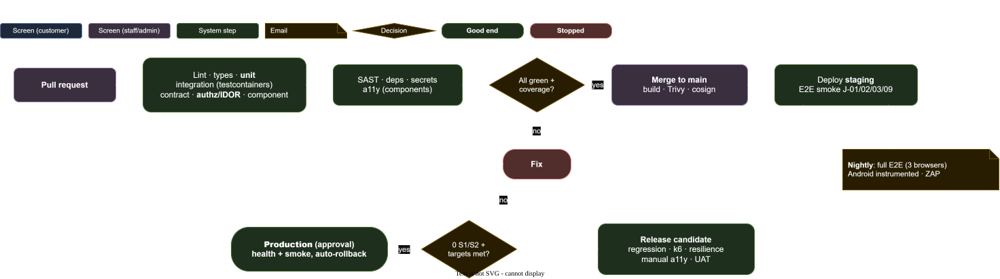
| Level | What | Tools | Where | Target |
|---|---|---|---|---|
| Unit | Domain rules (status machines, pricing, CIMH option, exchange rate, Pro Bono limits, split cart), validators, mappers | pytest, Vitest, JUnit (Android) | Every PR, < 2 min | ≥ 90 % lines on domain/; ≥ 80 % service logic overall (TR-CI-6) |
| Integration | Repositories against real MongoDB (replica set, transactions), Kafka producers/consumers, outbox relay, Redis revocation, idempotency | pytest + testcontainers (MongoDB RS, Kafka, Redis) | Every PR | Every repository method and consumer |
| Contract (API) | Each service conforms to its OpenAPI spec; responses never include undeclared fields | Schemathesis (property-based) against a running service | Every PR | All endpoints, all documented status codes |
| Contract (events) | Produced events validate against events.asyncapi.yaml; consumers accept every documented version |
JSON-Schema validation in producer tests; Apicurio compatibility check in CI | Every PR | Every event type |
| Authorisation / IDOR | For every endpoint × role × ownership case: allowed → 2xx, forbidden → 403, not visible → 404 | Generated pytest suite from the API role table (§5) | Every PR | 100 % of endpoints |
| Component (web) | packages/web-ui components (status chip, quote comparison, agreement stepper, money input) |
Vitest + Vue Test Utils; Playwright component tests + screenshot comparison | Every PR | Every shared component, light + dark |
| End-to-end | User journeys J-01–J-11 through real UIs and services | Playwright (Chromium, Firefox, WebKit; mobile viewport) | Every merge to main on staging; nightly full |
All journeys + main alternatives |
| Mobile | Scan flows, offline queue, Keystore auth | Compose UI tests, Robolectric, instrumented tests on an Android 12 emulator (minimum version) + the warehouse device, a Samsung Galaxy Note 10+ (SM-N975U1) | Every PR (unit/UI), nightly (instrumented) | M-01–M-11 |
| Performance | Load, stress, soak | k6 | Before each release on staging (sized as prod) | TRD TR-PERF-1…3 |
| Resilience | Kill a Pi / broker / service replica; primary step-down; Redis restart; disk full | Scripted chaos (deploy/tests/chaos/*.sh) |
Before go-live, then quarterly | TR-AVAIL-2 |
| Security | SAST, dependency, image, secrets, DAST, penetration test (Claude) | Semgrep, Bandit, pip-audit, npm audit, Trivy, gitleaks, OWASP ZAP, internal ASVS review | PR / nightly / release / yearly | SECURITY §11 |
| Accessibility | Automated rules + manual | axe-core (Playwright), NVDA (Windows), TalkBack (Android) | Every E2E run; manual before release | WCAG 2.1 AA, 0 serious/critical axe issues |
| Migration | Mapping, verification, timing | migrate --dry-run/--verify |
DR-1, DR-2, DR-3 | MIGRATION_PLAN §6 all green |
| UAT | Staff and admins run real tasks; customer journeys are played by CIMH staff using test customer accounts (no external organisations) | Scripted scenarios on staging | Before go-live | Sign-off by the product owner |
15.4 What gets tested where (critical areas)
| Area | Key cases |
|---|---|
| Registration and approval | Code expiry and attempts; @cimh.edu.bb auto-activate and cannot request; approval requires an organisation; bulk decision partial failures (207); login blocked per status with the right code |
| Tokens | Refresh rotation; reuse detection revokes the session family; logout revokes; suspension revokes immediately; JWKS key rotation overlap; expired/forged/alg=none tokens rejected |
| Cart and submission | Pro Bono limit; mixed cart → two requests; currency required with paid lines; inactive product rejected; idempotent submit (double click → one request) |
| Quote → agreement → acceptance | CIMH option only when full quantity available; USD requires exchange rate; quote versioning; accept only latest version; AWAITING_AGREEMENT change-choices regenerates agreement; accept requires signed_agreement of this request; staff reject signature → back to AWAITING; expiry job cancels at 30 days and reminder at 27 days |
| Reservation and stock | Concurrent reservations for the same last units (two requests at once → one wins, other reservation_failed); release on cancel and on signature rejection; picking only reserved units; supplier lines not pickable; stock counts match history |
| Status machine | Every allowed transition succeeds; every disallowed transition returns 409 (generated from the transition table); conditional update prevents lost updates under parallel requests |
| Events | Outbox: crash after DB write but before publish → event still published; duplicate delivery → applied once; poison message → retry → DLQ + alert |
| Files | Magic-byte check (renamed .exe → 415); ClamAV EICAR test file → quarantined; size limit; download permission matrix; X-Accel-Redirect path never user-controlled |
| Notifications | Each event produces exactly one email with the right deep link (APD §7); templates escape injected HTML |
| Search and paging | Text search relevance basics; cursor paging stable under inserts; limit caps |
| Mobile offline | Scans queued offline sync once; server rejection appears in M-11; idempotency key reuse |
15.5 Authorisation test generation
A single YAML table (tests/authz/matrix.yaml), derived from the API README §3, lists every endpoint with the allowed roles and the ownership rule (self, same_org, requester, staff, admin, public). A generator creates, per endpoint:
- anonymous → 401 (or 200 if public);
- each role not allowed → 403;
- allowed role on another user's / organisation's resource → 404 (hidden);
- allowed role on own resource → 2xx;
@cimh.edu.bbuser on cart/request endpoints → 403CIMH_CANNOT_REQUEST.
CI fails if an endpoint exists in a running service but not in the matrix (no untested endpoint can ship).
15.6 Performance tests (k6)
| Scenario | Load | Pass criteria |
|---|---|---|
| Browse mix (60 % catalogue/search, 20 % product detail, 10 % my requests, 10 % login/refresh) | Ramp to 1,000 req/s, hold 30 min | p95 < 300 ms, p99 < 1 s, errors < 0.1 % (TR-PERF-1/3) |
| Write mix (cart updates, submissions, staff actions, scans) | 100 req/s alongside browse | p95 < 500 ms (TR-PERF-2); no 409 storms except intended conflicts |
| Stress | Increase until failure | Graceful degradation (429/503, no data corruption); find the knee |
| Soak | 300 req/s for 8 h | No memory growth beyond limits; no consumer lag build-up |
| Burst | 20,000 concurrent sessions logging in over 10 min | Login p95 < 1 s (Argon2 cost tuned accordingly) |
Test data: 2 M products, 30 M units, 1.5 M orders generated synthetically on staging (sized-as-prod run done with staging stack alone, TRD §6.3). Memory and CPU per container recorded and compared to INFRASTRUCTURE §4.1. Results feed the 64 GB upgrade decision (INFRASTRUCTURE Q4).
Phase checks (before P9)
Each service phase ends with a smaller check on the dev stack, with one container at its production limits. Tools in tools/perf/: a bulk seeder (seed_catalog.py, removable with --cleanup), an explain check that records the queries the real service methods send and fails on any collection scan (the same cases run in CI on 20k products, which enforces TR-DATA-5), and a k6 scenario with a runner script (MODE=steady gate or MODE=knee ramp).
| Phase | Data | Load | Result |
|---|---|---|---|
| P3 catalogue | 200k products | 55 req/s for 3 min (lists, detail, search, staff) | Pass. p95 43 ms, p99 71 ms, 0 errors; search p95 68 ms; all 55 queries index-backed |
| P4 inventory | 200k units, 2k products | Explain only | Pass. 133 queries, all index-backed (incl. partial indexes) |
P4's gate is concurrency: integration tests race two reservations for the last units (one wins, the loser holds nothing), two crossing multi-line reservations (fails without the transaction), and two devices scanning the same unit.
For P9: one catalog-svc container (0.5 CPU) is CPU-bound at ~145 req/s, so the 1,000 req/s browse mix needs about 6 replicas at 0.5 CPU (or more CPU each), not 2. Text search ranks all matches in memory and is the first read to re-check at 2M products.
15.7 Resilience tests
| Test | Expected | Where it runs (P9) |
|---|---|---|
| Stop Pi A | No user impact; alert "member down" | Rehearsal (tools/infra/rehearsal/run.sh §9): member health 0 in mongodb-exporter; alert rule in promtool tests. Real Pi: owner |
| Stop sia-host mongo1 | Pi becomes primary within 30 s; writes resume; host rejoins and takes primary back | Rehearsal §7 |
| Stop one Kafka broker | No message loss; producers continue (min.insync.replicas=2) |
Rehearsal §9: relay publishes, event read back |
| Kill a service replica mid-request | nginx retries idempotent GETs; client retries POST with the same Idempotency-Key → one effect | Idempotency replay: unit/integration tests (IdempotencyStore); nginx retry: on the host (owner) |
| Restart Redis | Revocations survive (AOF); rate limits reset (acceptable) | Rehearsal §9 |
| Outbox relay down 10 min | Events queue on documents; published on restart; alert "outbox backlog" fired | Rehearsal §9 (backlog metric, drain, event read back); alert OutboxBacklog in deploy/prometheus/tests/alerts.test.yml |
| Disk 90 % | Alert at 80 %; services keep running; Kafka retention trims | Host (owner) |
| Power cut simulation | Pis need manual LUKS unlock; runbook steps work; RTO measured | Host + Pis (owner) |
Alert rules are checked in CI (promtool check config + test rules). Found in P9: the production Prometheus config did not parse (unquoted ${ENV} in a flow mapping) and the MongoDB/Kafka/Redis exporters it scraped did not exist, so three alerts could never fire; both fixed.
15.8 Test environments and data
| Environment | Data | Notes |
|---|---|---|
| Local | Seed script (fake data, faker), fixed ids for tests | compose.dev.yml; Mailpit catches email |
| CI | testcontainers per test module; factories | No shared state between jobs |
| Staging | Anonymised copy of production (names, emails, phones, addresses masked; files replaced by placeholders) + synthetic volume for load tests | Started on demand; E2E and load runs; LAN-only access |
| Production | — | Smoke tests only (read-only + a test request created and cancelled by a test account) |
Rules: no real personal data outside production; test accounts are clearly named (test-user-*@example.cimh) and excluded from emails and reports.
15.9 CI gates
| Stage | Runs | Blocks merge / deploy if |
|---|---|---|
| PR | lint, type-check, unit, integration (testcontainers: Mongo RS, Redis, Kafka), contract (Schemathesis against docs/api), authz, component, SAST, dependency/secret scans, shellcheck + actionlint + compose render, SHOP/SIA build, Playwright journeys J-01, J-08, J-10, J-11 and the personal-data journey (J-10 runs the real image pipeline: relay, Kafka, media-worker) (production builds against the dev stack), SIA Mobile JVM unit tests + Android lint (warnings fail) + debug/release build, a11y on components |
Any failure; coverage below target; high/critical vulnerability; untested endpoint |
Merge to main → staging |
Image build + Trivy, cosign sign, platform rehearsal (tools/infra/rehearsal), deploy staging, E2E smoke (J-01, J-02, J-03, J-09) |
Any failure → staging rollback |
| Nightly | Full E2E (all journeys, 3 browsers), instrumented Android, ZAP baseline, full dependency scan | Failure opens an issue (severity S2 by default) |
| Release candidate | Full regression, k6 performance, resilience subset, manual a11y, UAT sign-off (go-live) | Any S1/S2 open; performance targets missed |
| Production deploy | Health checks + smoke tests | Automatic rollback to previous SHA on failure |
15.10 Defect severity
| Severity | Definition | Examples | Release |
|---|---|---|---|
| S1 Critical | Security breach, data loss/corruption, platform down, money/commitment wrong | IDOR leak, oversold stock, wrong quote total, failed migration check | Blocks; fix immediately |
| S2 High | Core journey broken, no workaround | Can't accept a quote, can't scan in mobile | Blocks |
| S3 Medium | Feature impaired, workaround exists | Filter wrong, email link opens wrong tab | Allowed with a fix date |
| S4 Low | Cosmetic | Spacing, typo | Allowed |
15.11 Entry and exit criteria
Release candidate entry: all PR gates green; feature complete for the release's PRD scope; staging deployed; test data loaded.
Go-live exit: - 0 open S1/S2; S3s have dates. - Every PRD Must has ≥ 1 passing automated test (RTM 100 %). - Performance and resilience targets met (or 64 GB decision taken). - Authorisation suite 100 % of endpoints; DAST (authenticated ZAP full scan) no high; Claude-run penetration test (staging, ASVS L2) findings high+ fixed. - 0 serious/critical axe issues; manual screen-reader pass done. - Migration DR-3 green within 45 min. - UAT signed by the product owner.
15.12 Traceability
The Requirements Traceability Matrix (Documentation Index #17, RTM.md) is generated from test tags: each test is tagged with the requirement ids it covers (@req("O6"), @req("TR-AUTH-1"), @threat("T-12"), @journey("J-03")). A CI job builds the matrix (requirement → tests → last result) and fails the release gate if a Must has no passing test.
15.13 Roles
| Role | Responsibility |
|---|---|
| Developers | Unit, integration, contract, component tests with every change; tags for traceability |
| QA / tech lead | Authz matrix, E2E suites, performance and resilience runs, release sign-off on quality |
| Staff (stores) | UAT scenarios for SIA and Mobile |
| Admins | UAT for approvals, organisations, settings |
| CIMH staff as "customers" | UAT for SHOP journeys, using test customer accounts in fictitious test organisations on staging (not their own @cimh.edu.bb accounts, which can't request) |
| Claude (Claude Code) + tech lead | Penetration test before go-live and yearly: Claude runs it against staging only, under a written scope and authorisation from the owner (targets, accounts, time window, no production, no DoS). Covers the OWASP ASVS Level 2 checklist, authenticated ZAP full scan, manual probes of every SECURITY T-xx threat (IDOR, token reuse, agreement forgery, upload abuse, injection). Findings are filed as S1–S4 issues; the tech lead reviews and signs off |
15.14 Questions
| # | Question | Outcome |
|---|---|---|
| 1 | Which member-state organisations join UAT? | Resolved: none. CIMH staff test the customer journeys with test accounts. Risk: real-customer usability issues may only appear after launch, so collect feedback in the first month (a SHOP feedback link). |
| 2 | Which warehouse Android device? | Resolved: Samsung Galaxy Note 10+ (SM-N975U1). It's the physical test device, alongside the Android 12 emulator (minimum supported). |
| 3 | External penetration test? | Resolved: no budget. Claude performs the penetration test on staging (scope and authorisation in writing) plus ASVS L2 + authenticated ZAP. Residual risk (not independent) in SECURITY R7. |
16. Implementation plan
Source: Implementation Plan. Covers what gets built and in what order: 11 phases (P0–P10), deliverables, exit criteria, milestones, the remaining documentation schedule, roles and schedule risks.
16.1 Purpose
Outlines what gets built and in what order: the project broken into phases, each with its deliverables, the PRD requirements it covers, dependencies, and the conditions for calling it finished ("exit criteria").
16.2 Assumptions
| # | Assumption |
|---|---|
| 1 | Team: one developer working with Claude Code (Python, Vue/TypeScript, Kotlin), plus a part-time product owner (stores) and an admin for approvals and UAT. Estimates are weeks of elapsed time for that team; phases run mostly in sequence |
| 2 | No fixed start date or deadline. Week 1 = whenever work starts; quality gates, not dates, decide when each phase ends |
| 3 | CIMH IT provides the VLAN, IPs and DNS before Phase 1 ends (INFRASTRUCTURE Q1) |
| 4 | The Raspberry Pi 5s, NVMe SSDs and UPS are bought before Phase 1 ends |
| 5 | Every phase follows the Test Strategy gates; "done" = merged to main, deployed to staging, tests green, the manual and CLAUDE.md updated |
| 6 | The legacy app keeps running (with Phase 0 fixes) until the cut-over in Phase 10 |
16.3 Phases at a glance
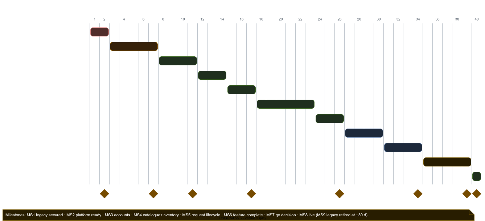
| Phase | Name | Weeks | Depends on | Main PRD scope |
|---|---|---|---|---|
| P0 | Legacy security fixes and hygiene | 1–2 | — | SECURITY §6 |
| P1 | Foundations (repo, CI, infrastructure, platform, shared libraries) | 3–7 | P0 (secrets rotated) | P1–P6, TR-CI, TR-SEC |
| P2 | Identity and access | 8–11 | P1 | A1–A13 |
| P3 | Catalogue and media | 12–14 | P2 (auth) | C1–C8 |
| P4 | Inventory and warehouse | 15–17 | P3 (products) | I1–I11 |
| P5 | Orders, quotes and agreements | 18–23 | P3, P4 | O1–O15 |
| P6 | Documents and notifications | 24–26 | P5 (events) | D1–D4, N1–N3 |
| P7 | Web frontends complete (SHOP + SIA) and design polish | 27–30 | P2–P6 APIs | APD screens, Design Brief |
| P8 | SIA Mobile on the v2 API | 31–34 | P2, P4, P5 | M1–M9 |
| P9 | Hardening: performance, resilience, pen test, migration rehearsals, UAT | 35–39 | P7, P8 | TR-PERF, TR-AVAIL, Test Strategy §11 |
| P10 | Cut-over, hypercare, legacy retirement | 40 (+30 days) | P9 go decision | MIGRATION_PLAN §8–10 |
Estimated total: about 40 weeks to go-live (realistic range 34–46), then 30 days of hypercare. With one developer the phases run in sequence; Claude Code carries much of the implementation, test writing and documentation, which is what makes this feasible. Each phase still ends on its exit criteria, not on a date.
16.4 Phases in detail
P0: Legacy security fixes and hygiene (weeks 1–2)
| Deliverables |
|---|
| Commit and deploy the existing Phase-0 fixes (eval removal, pooled Mongo client, regex escaping, token checks, logout revocation, health endpoint, headers) |
Add @jwt_required() + ownership checks to the remaining open legacy routes (product image add/delete, upload, decode, QR batch, barcode, user/items), or disable them |
Set DEBUG=False in production; verify TLS termination; nginx hardening deployed |
Rotate every secret in SIA/.env and the cimhAdmin passwords on both MongoDB servers; create the read-only svc_migrate_ro user |
| Put SHOP under git; remove build output, customer PDFs, uploads, DBs and logs from repository folders (archive them on the server) |
Exit: SECURITY §6 shows no "Open" legacy items except "systemic IDOR (fixed by v2)"; secrets rotated and confirmed.
P1: Foundations (weeks 3–7)
| Workstream | Deliverables |
|---|---|
| Repository | Monorepo (services/*, web/*, packages/*, deploy/*, docs/*, tools/migrate); CONTRIBUTING.md (doc #13); PR template; branch protection |
| CI | GitHub Actions: lint, types, unit, integration (testcontainers), Schemathesis, SAST/deps/secrets, image build + Trivy + cosign; self-hosted runner on sia-host for deploys |
| Infrastructure | Provisioning checklist INFRASTRUCTURE §10 steps 1–9: host + Pis, VLAN, LUKS, replica set, Kafka (SASL/ACL), Redis (ACL), ClamAV, Prometheus/Alertmanager, nginx + certs, backups + first restore test |
| Shared code | packages/py-common (auth/JWKS, role and ownership decorators, error format, outbox relay, idempotent consumer, logging, metrics); packages/event-schemas (from AsyncAPI); packages/web-api (generated clients); packages/web-ui (Vuetify 4 theme from the Design Brief, base components) |
| Test tooling | Authz matrix generator (Test Strategy §5), transition-table test generator, seed data scripts |
| Service skeleton | One "hello" service deployed through the whole pipeline to staging and production (health, metrics, logs, alerts) |
Exit: a skeleton service goes PR → staging → production with all gates; replica set healthy (1 primary + 2 secondaries); backup restore tested; alerts arrive by email.
P2: Identity and access (weeks 8–11)
| Deliverables | PRD |
|---|---|
| identity-svc: register, verify, login/refresh/logout (rotation + reuse detection), password reset, MFA (admins, Must), JWKS, service tokens, lockout, breached-password check | A1, A2, A6, A8, A9 |
Account status flow incl. @cimh.edu.bb auto-activate; admin approvals (single + bulk), organisations (CRUD, merge), roles, suspend/reactivate; auditlog consumer |
A3, A3a, A4, A5, A7, A10, A11, A13 |
| Profile and addresses | A12 |
| Screens: S-13…S-19, A-16, A-17, A-18, A-20, A-21; login in Mobile skeleton | APD |
| Emails (temporary direct SMTP until P6): verification, approval decision | A5 |
Exit: J-01 and J-11 pass end-to-end; authz suite green for identity endpoints; token tests (T-01…T-11) pass.
P3: Catalogue and media (weeks 12–14)
| Deliverables | PRD |
|---|---|
catalog-svc: products (public/staff views, xuser view), text search, Pro Bono flag and limits, reference data, settings (fees, email lists, workflow) |
C1–C5, C8 |
| media-worker (GPU, rembg, WebP, EXIF strip), image upload flow | C6 |
| Screens: S-01 (with the OpenArt.ai hero image), S-02, S-03, S-04, S-06; A-05, A-06, A-07, A-19 | C7, APD |
Exit: J-10 passes; catalogue p95 < 300 ms on seeded data; customers never receive staff fields (snapshot tests).
P4: Inventory and warehouse (weeks 15–17)
| Deliverables | PRD |
|---|---|
inventory-svc: sites/locations/shelves (via catalog misc), units, labels, stow/pick/relocate/assign with idempotency, stock levels, low-stock events, history |
I1–I8, I10 |
| Reservations (transactions) + availability endpoint | I9, I11 |
| Screens: A-08 … A-15, global scan box | APD |
Exit: concurrency test (two reservations for the last units) passes; stock counts reconcile with history; J-09 web parts pass.
P5: Orders, quotes and agreements (weeks 18–23)
| Deliverables | PRD |
|---|---|
| order-svc: cart (one per user, Pro Bono limits, CIMH restriction), submission with split, staff queue, status machines (paid and Pro Bono) | O1–O4, O12–O14 |
| Quoting: start-quoting with stock check, quote builder (supplier + CIMH option, exchange rate), send/revise, expiry job + reminders | O5, O5a, O7, O15 |
| Agreement: choose options → agreement PDF request → signed upload → accept; staff verify/reject signature; purchase orders | O6, O6a, O8 |
| Picking (CIMH/Pro Bono lines only), shipping (manual carrier + tracking), delivery | O9–O11 |
| Screens: S-07 … S-12, A-01, A-02, A-03, A-04 | APD |
Exit: J-02 … J-07 pass end-to-end; every illegal transition returns 409 (generated tests); acceptance records the signed file and IP.
P6: Documents and notifications (weeks 24–26)
| Deliverables | PRD |
|---|---|
| document-svc: uploads (magic bytes, ClamAV, size), permission-checked downloads (X-Accel), generated PDFs: CIMH quote, agreement, invoice, commercial invoice, Pro Bono invoice, labels | D1–D4 |
| notification-svc: all emails (APD §7 deep links, Design Brief §13 template), retries + DLQ; replace P2's temporary SMTP | N1–N3 |
Exit: every email in the APD §7 table is sent exactly once per event with the right link; EICAR file is quarantined; download permission matrix passes.
P7: Web frontends complete and design polish (weeks 27–30)
| Deliverables |
|---|
| All APD screens finished for SHOP and SIA with the Design Brief components (status timeline, quote comparison, agreement stepper, dashboard counters, approval cards) |
| Light/dark themes, responsive down to 360 px, keyboard shortcuts (SIA), empty/loading/error states (APD §2) |
| Accessibility pass: axe clean, NVDA run |
Exit: all 11 journeys pass in 3 browsers + mobile viewport; 0 serious/critical axe issues.
P8: SIA Mobile on the v2 API (weeks 31–34)
| Deliverables | PRD |
|---|---|
| Move the Android app to the v2 API (generated client), new token flow in Keystore, app lock, certificate pinning | M1, M9, TR-SEC-11 |
| Scanning flows: lookup, stow, pick, pick order, ship; offline queue with idempotency keys; sync screen | M2–M8 |
| Material 3 theme from the Design Brief; tested on the Galaxy Note 10+ and an Android 12 emulator | — |
Exit: J-09 passes on the physical device including offline sync; internal release build signed and distributable.
P9: Hardening (weeks 35–39)
| Deliverables |
|---|
| k6 performance runs (Test Strategy §6) → decide the 64 GB upgrade (INFRASTRUCTURE Q4) |
| Resilience tests (Test Strategy §7) incl. power-cut + manual Pi unlock |
| Penetration test by Claude on staging (written scope), fixes of all high+ findings |
Migration: tooling tools/migrate M01–M09, dry runs DR-1, DR-2, DR-3; admin organisation review; customer-organisation assignment complete |
| UAT by staff and admins (staff play customers with test accounts); product-owner sign-off |
| Operations docs ready (#21–#25): deployment, operations, DR, monitoring, incident response |
Exit = go-live criteria (Test Strategy §11): 0 open S1/S2; RTM 100 % of Musts; performance/resilience met; pen-test high+ fixed; DR-3 ≤ 45 min; UAT signed.
P10: Cut-over and hypercare (week 40 + 30 days)
| Deliverables |
|---|
| Announce (T-5 d), cut-over runbook (MIGRATION_PLAN §8), go/no-go, smoke tests |
| Hypercare: daily alert review and a feedback link in SHOP for the first month; rollback allowed ≤ 48 h |
| Day 30: archive the legacy database and files (restic), decommission Flask, delete the SQLite token store |
| Project close-out report (#32) |
16.5 Milestones
| # | Milestone | Week | Evidence |
|---|---|---|---|
| MS1 | Legacy secured | 2 | SECURITY §6 updated, secrets rotated |
| MS2 | Platform ready | 7 | Skeleton service in production; RS + Kafka + backups verified |
| MS3 | Accounts live on staging | 11 | J-01, J-11 green |
| MS4 | Catalogue + inventory on staging | 17 | J-09 (web), J-10 green |
| MS5 | Request lifecycle complete | 26 | J-02…J-07 green, emails and PDFs |
| MS6 | Feature complete (web + mobile) | 34 | All journeys green, a11y clean |
| MS7 | Go decision | 39 | Go-live criteria met |
| MS8 | Live on v2 | 40 | Cut-over done |
| MS9 | Legacy retired | 40 + 30 d | Archive confirmed, Flask off |
16.6 Remaining documentation schedule
| Doc (# in index) | When | Phase |
|---|---|---|
| Coding Standards and Contribution Guide (#13) | Weeks 3–4 | P1 |
| Service / App READMEs (#14) | With each service | P1–P8 |
ADR files docs/adr/ (TAD §11) |
Weeks 3–5, then as decided | P1+ |
| Test plans and cases (#16), RTM (#17) | From P2, generated from tags | P2+ |
| Changelog and release notes (#18) | Every release | P1+ |
| Migration dry-run reports (#19) | DR-1/2/3 | P9 |
| Load and security test reports (#20) | P9 | P9 |
| Deployment, Operations, DR, Monitoring, Incident runbooks (#21–#25) | Weeks 35–39 | P9 |
| User guides, Admin guide, Training (#26–#28) | Weeks 30–39 | P7–P9 |
| Support policy, Privacy policy and Terms (#29, #30) | Before go-live | P9 |
| Handover guide (#31), Close-out (#32) | Hypercare end | P10 |
The manual (docs/manual/) is updated with every document change (CLAUDE.md rule).
16.7 Roles
| Role | Responsibilities |
|---|---|
| Product owner (stores) | Priorities, acceptance of each phase, UAT sign-off, customer communication |
| Tech lead | Architecture decisions/ADRs, reviews, release gates, cut-over lead |
| Developer (1) + Claude Code | Services, frontends, mobile, tests, docs, migration tooling; the developer reviews and approves everything Claude Code produces |
| Claude | Also runs the penetration test (staging, written scope) and keeps CLAUDE.md and the manual current |
| Admin(s) | Organisation review, approval workflow testing, settings |
| Stores staff | SIA/Mobile UAT, warehouse device testing |
| CIMH IT | VLAN, IPs, DNS, firewall, mail server settings, UPS |
16.8 Schedule risks
| # | Risk | Impact | Mitigation |
|---|---|---|---|
| IR1 | CIMH IT network setup late | P1 slips, blocks everything | Request in week 1; develop on local/staging Compose meanwhile |
| IR2 | Hardware (Pis, SSDs, UPS, RAM) late | P1 / P9 slip | Order in week 1; staging can run single-node |
| IR3 | Single developer: availability (leave, illness) stops the project, and knowledge sits with one person (bus factor 1) | Every phase stretches; handover risk | Keep the docs, the manual and CLAUDE.md current (already a rule) so another developer, with Claude Code, can pick up from them; small, reviewed PRs; ADRs for every decision |
| IR4 | 32 GB memory insufficient under load | P9 fails performance | Decide 64 GB upgrade at P9 start using k6 results |
| IR5 | Kafka/outbox complexity slows P5 | Core flow late | Shared py-common outbox and consumer built and tested in P1 |
| IR6 | Mobile migration harder than expected | P8 slips | Legacy mobile app keeps working until cut-over; P8 can start earlier if P7 waits on feedback |
| IR7 | Free-text legacy data mapping issues | Migration delay | DR-1 early in P9 (or as soon as tools/migrate exists) |
16.9 Scope control
- No deadline, so the first release = all PRD "Must" and "Should" requirements. The schedule is driven by exit criteria, not dates.
- "Could" items (C7 landing samples, M8 offline polish, typo-tolerant search, distributed tracing, DHL API) are deferred to release 1.1+.
- Any new requirement goes through the PRD (new id), then this plan.
16.10 Questions
| # | Question | Outcome |
|---|---|---|
| 1 | Start date and team size? | Resolved: no set start date; one developer with Claude Code (estimates above). |
| 2 | Fixed go-live deadline? | Resolved: no. Scope = Musts + Shoulds; phases end on exit criteria. |